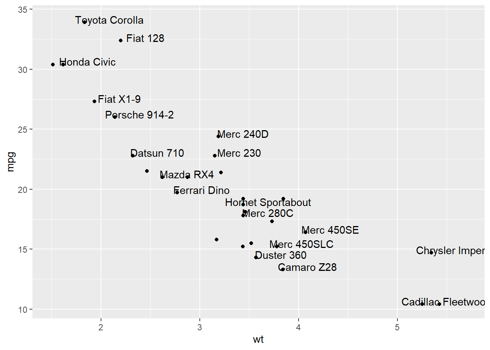
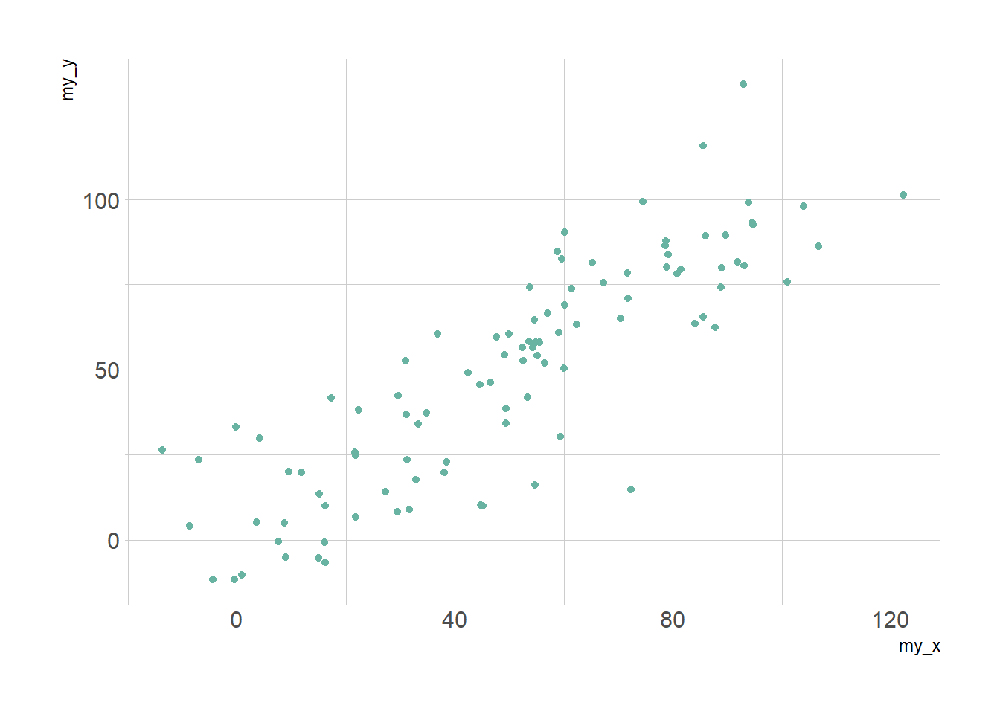
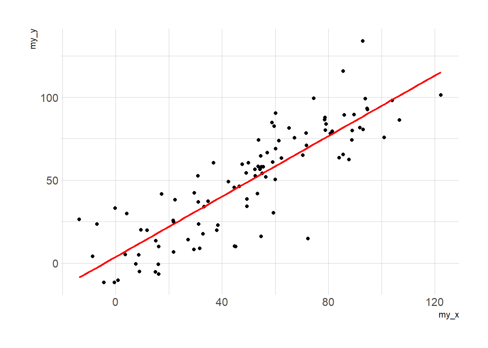
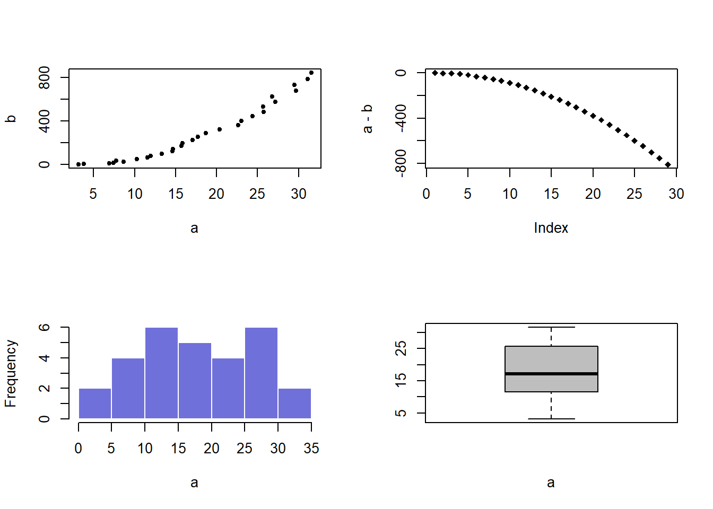
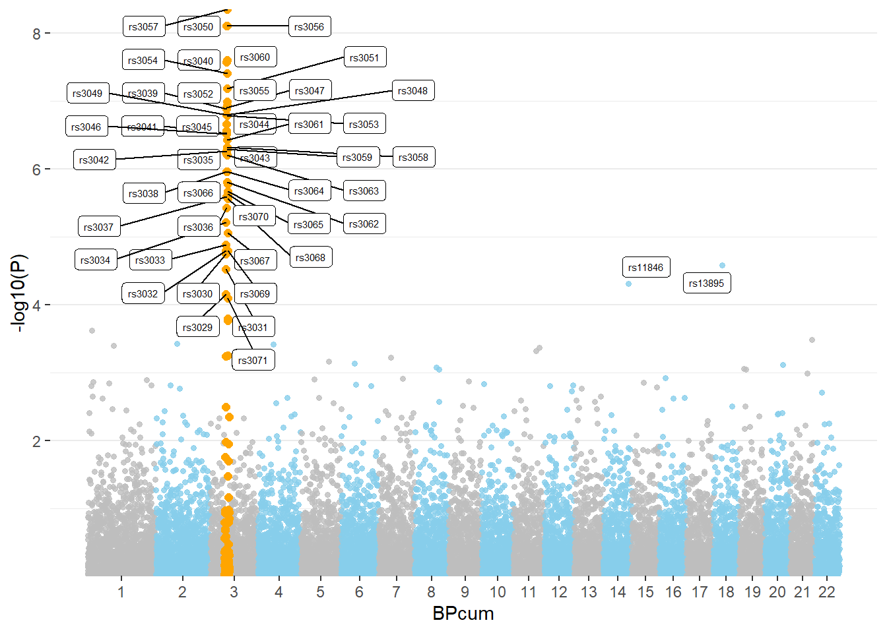
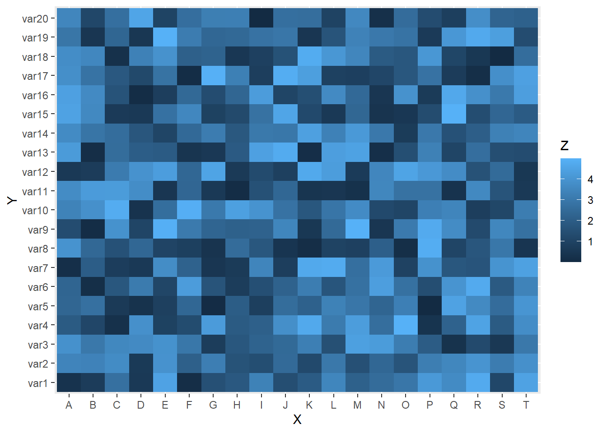
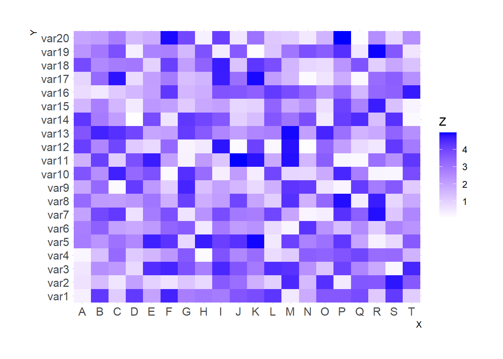
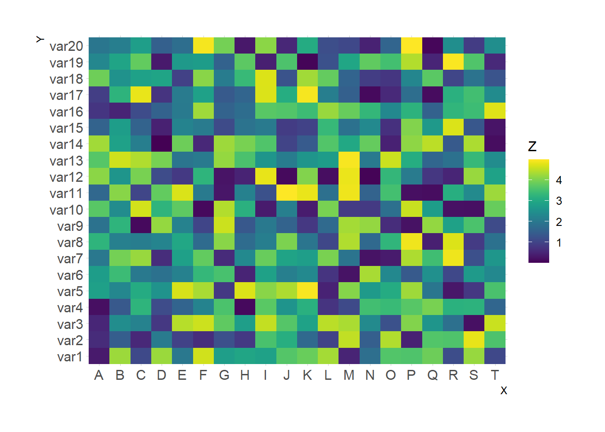

Chapter 3 Correlation

Figure 3.1: Heatmap Normalization
3.1 Bubble Plot
A bubble plot is a scatter plot with a third numeric variable mapped to circle size. This page describes several methods to build one with R.
3.1.0.1 A Bubble Chart is a Scatterplot
A bubble chart is basically a scatterplot with a third numeric variable used for circle size. Thus, remember all the tips described in the scatterplot section also apply here.
3.1.0.2 Step by Step with ggplot2
ggplot2 allows to create bubble chart thanks to the geom_point() function. Next examples will lead you through the process step by step:
3.1.1 Most Basic bubble Chart with geom_point()
A bubble plot is a scatterplot where a third dimension is added: the value of an additional numeric variable is represented through the size of the dots. (source: data-to-viz).
With ggplot2, bubble chart are built thanks to the geom_point() function. At least three variable must be provided to aes(): x, y and size. The legend will automatically be built by ggplot2.
Here, the relationship between life expectancy (y) and gdp per capita (x) of world countries is represented. The population of each country is represented through circle size.
# Libraries
library(ggplot2)
library(dplyr)
# The dataset is provided in the gapminder library
library(gapminder)
data <- gapminder %>% filter(year=="2007") %>% dplyr::select(-year)
# Most basic bubble plot
ggplot(data, aes(x=gdpPercap, y=lifeExp, size = pop)) +
geom_point(alpha=0.7)3.1.2 Control Circle Size with scale_size()
The first thing we need to improve on the previous chart is the bubble size. scale_size() allows to set the size of the smallest and the biggest circles using the range argument. Note that you can customize the legend name with name.
Note: circles often overlap. To avoid having big circles on top of the chart you have to reorder your dataset first, as in the code below.
ToDo: give more details about how to map a numeric variable to circle size. Use of scale_radius, scale_size and scale_size_area. See this post.
# Libraries
library(ggplot2)
library(dplyr)
# The dataset is provided in the gapminder library
library(gapminder)
data <- gapminder %>% filter(year=="2007") %>% dplyr::select(-year)
# Most basic bubble plot
data %>%
arrange(desc(pop)) %>%
mutate(country = factor(country, country)) %>%
ggplot(aes(x=gdpPercap, y=lifeExp, size = pop)) +
geom_point(alpha=0.5) +
scale_size(range = c(.1, 24), name="Population (M)")3.1.3 Add a Fourth Dimension: Color
If you have one more variable in your dataset, why not showing it using circle color? Here, the continent of each country is used to control circle color:
# Libraries
library(ggplot2)
library(dplyr)
# The dataset is provided in the gapminder library
library(gapminder)
data <- gapminder %>% filter(year=="2007") %>% dplyr::select(-year)
# Most basic bubble plot
data %>%
arrange(desc(pop)) %>%
mutate(country = factor(country, country)) %>%
ggplot(aes(x=gdpPercap, y=lifeExp, size=pop, color=continent)) +
geom_point(alpha=0.5) +
scale_size(range = c(.1, 24), name="Population (M)")3.1.4 Make it Pretty
A few classic improvement:
- Use of the
viridispackage for nice color palette. - Use of
theme_ipsum()of thehrbrthemespackage. - Custom axis titles with
xlabandylab. - Add stroke to circle: change
shapeto 21 and specifycolor(stroke) andfill.
# Libraries
library(ggplot2)
library(dplyr)
library(hrbrthemes)
library(viridis)
# The dataset is provided in the gapminder library
library(gapminder)
data <- gapminder %>% filter(year=="2007") %>% dplyr::select(-year)
# Most basic bubble plot
data %>%
arrange(desc(pop)) %>%
mutate(country = factor(country, country)) %>%
ggplot(aes(x=gdpPercap, y=lifeExp, size=pop, fill=continent)) +
geom_point(alpha=0.5, shape=21, color="black") +
scale_size(range = c(.1, 24), name="Population (M)") +
scale_fill_viridis(discrete=TRUE, guide=FALSE, option="A") +
theme_ipsum() +
theme(legend.position="bottom") +
ylab("Life Expectancy") +
xlab("Gdp per Capita") +
theme(legend.position = "none")
3.1.5 Interactive Version
Here is an interactive bubble chart built in R, thanks to the ggplotly() function of the plotly library. Try to hover circles to get a tooltip, or select an area of interest for zooming. Double click to reinitialize.
3.1.5.1 Interactive Bubble Chart
This section explains how to build an interactive bubble chart with R, using ggplot2 and the ggplotly() function of the plotly package.
3.1.5.2 Most Basic Bubble Chart with geom_point()
This section follows the previous step by step description of building bubble chart with ggplot2.
The idea is to turn the chart interactive:
- You can zoom by selecting an area of interest
- Hover a circle to get information about it
- Export to png
- Slide axis
- Double click to re-initialize.
This is done thanks to the ggplotly() function of the plotly package that turn any ggplot2 chart object interactive. Note the little trick to custom the tooltip content.
# Libraries
library(ggplot2)
library(dplyr)
library(plotly)
library(viridis)
library(hrbrthemes)
# The dataset is provided in the gapminder library
library(gapminder)
data <- gapminder %>% filter(year=="2007") %>% dplyr::select(-year)
# Interactive version
p <- data %>%
mutate(gdpPercap=round(gdpPercap,0)) %>%
mutate(pop=round(pop/1000000,2)) %>%
mutate(lifeExp=round(lifeExp,1)) %>%
# Reorder countries to having big bubbles on top
arrange(desc(pop)) %>%
mutate(country = factor(country, country)) %>%
# prepare text for tooltip
mutate(text = paste("Country: ", country, "\nPopulation (M): ", pop, "\nLife Expectancy: ", lifeExp, "\nGdp per capita: ", gdpPercap, sep="")) %>%
# Classic ggplot
ggplot( aes(x=gdpPercap, y=lifeExp, size = pop, color = continent, text=text)) +
geom_point(alpha=0.7) +
scale_size(range = c(1.4, 19), name="Population (M)") +
scale_color_viridis(discrete=TRUE, guide=FALSE) +
theme_ipsum() +
theme(legend.position="none")
# turn ggplot interactive with plotly
pp <- ggplotly(p, tooltip="text")
pp# save the widget
# library(htmlwidgets)
# saveWidget(pp, file=paste0( getwd(), "/HtmlWidget/ggplotlyBubblechart.html"))3.2 Connected Scatterplot
Welcome to the connected scatterplot section of the gallery. If you want to know more about this kind of chart, visit data-to-viz.com. If youre looking for a simple way to implement it in R and ggplot2, pick an example below.
3.2.1 Connected Scatterplot with R and Ggplot2
This section explains how to build a basic connected scatterplot with R and ggplot2. It provides several reproducible examples with explanation and R code.
3.2.1.1 Most Basic Connected Scatterplot: geom_point() and geom_line()
A connected scatterplot is basically a hybrid between a scatterplot and a line plot. Thus, you just have to add a geom_point() on top of the geom_line() to build it.
# Libraries
library(ggplot2)
library(dplyr)
# Load dataset from github
data <- read.table("https://raw.githubusercontent.com/holtzy/data_to_viz/master/Example_dataset/3_TwoNumOrdered.csv", header=T)
data$date <- as.Date(data$date)
# Plot
data %>%
tail(10) %>%
ggplot( aes(x=date, y=value)) +
geom_line() +
geom_point()
3.2.2 Customize the Connected Scatterplot
Custom the general theme with the theme_ipsum() function of the hrbrthemes package. Add a title with ggtitle(). Custom circle and line with arguments like shape, size, color and more.
# Libraries
library(ggplot2)
library(dplyr)
library(hrbrthemes)
# Load dataset from github
data <- read.table("https://raw.githubusercontent.com/holtzy/data_to_viz/master/Example_dataset/3_TwoNumOrdered.csv", header=T)
data$date <- as.Date(data$date)
# Plot
data %>%
tail(10) %>%
ggplot( aes(x=date, y=value)) +
geom_line( color="grey") +
geom_point(shape=21, color="black", fill="#69b3a2", size=6) +
theme_ipsum() +
ggtitle("Evolution of bitcoin price")
3.2.3 Connected Scatterplot to show an Evolution
The connected scatterplot can also be a powerfull technique to tell a story about the evolution of 2 variables. Let???s consider a dataset composed of 3 columns:
- Year
- Number of baby born called Amanda this year
- Number of baby born called Ashley
The scatterplot beside allows to understand the evolution of these 2 names. Note that the code is pretty different in this case. geom_segment() is used of geom_line(). This is because geom_line() automatically sort data points depending on their X position to link them.
# Libraries
library(ggplot2)
library(dplyr)
library(babynames)
library(ggrepel)
library(tidyr)
# data
data <- babynames %>%
filter(name %in% c("Ashley", "Amanda")) %>%
filter(sex=="F") %>%
filter(year>1970) %>%
dplyr::select(year, name, n) %>%
spread(key = name, value=n, -1)
# plot
data %>%
ggplot(aes(x=Amanda, y=Ashley, label=year)) +
geom_point() +
geom_segment(aes(
xend=c(tail(Amanda, n=-1), NA),
yend=c(tail(Ashley, n=-1), NA)
)
) 
It makes sense to add arrows and labels to guide the reader in the chart:
# data
data <- babynames %>%
filter(name %in% c("Ashley", "Amanda")) %>%
filter(sex=="F") %>%
filter(year>1970) %>%
dplyr::select(year, name, n) %>%
spread(key = name, value=n, -1)
# Select a few date to label the chart
tmp_date <- data %>% sample_frac(0.3)
# plot
data %>%
ggplot(aes(x=Amanda, y=Ashley, label=year)) +
geom_point(color="#69b3a2") +
geom_text_repel(data=tmp_date) +
geom_segment(color="#69b3a2",
aes(
xend=c(tail(Amanda, n=-1), NA),
yend=c(tail(Ashley, n=-1), NA)
),
arrow=arrow(length=unit(0.3,"cm"))
) +
theme_ipsum()
3.2.4 Connected Scatterplot for Time Series
Connected scatterplots are often used for time series. Remember the R graph gallery offers a dedicated section, with heaps of examples. For instance, here is an interactive chart made with the dygraphs library.
# Library
library(dygraphs)
library(xts) # To make the convertion data-frame / xts format
library(tidyverse)
library(lubridate)
# Read the data (hosted on the gallery website)
data <- read.table("https://python-graph-gallery.com/wp-content/uploads/bike.csv", header=T, sep=",") %>% head(300)
# Check type of variable
# str(data)
# Since my time is currently a factor, I have to convert it to a date-time format!
data$datetime <- ymd_hms(data$datetime)
# Then you can create the xts necessary to use dygraph
don <- xts(x = data$count, order.by = data$datetime)
# Finally the plot
p <- dygraph(don) %>%
dyOptions(labelsUTC = TRUE, fillGraph=TRUE, fillAlpha=0.1, drawGrid = FALSE, colors="#D8AE5A") %>%
dyRangeSelector() %>%
dyCrosshair(direction = "vertical") %>%
dyHighlight(highlightCircleSize = 5, highlightSeriesBackgroundAlpha = 0.2, hideOnMouseOut = FALSE) %>%
dyRoller(rollPeriod = 1)
# save the widget
# library(htmlwidgets)
# saveWidget(p, file=paste0( getwd(), "/HtmlWidget/dygraphs318.html"))3.2.5 Connected Scatterplot using Base R
Basic R also allows to build connected scatterplot thanks to the line() function. You just need to use the b option of the type argument. See examples below.
3.2.5.1 Add a Legend to a Base R Chart
This section explains how to add a legend to a chart made with base R, using the legend() function. It provides several reproducible examples with explanation and R code. It is done using the legend() function. The main arguments are:
This page aims to explain how to add a legend to a plot made in base R. It is done using the legend() function. The main arguments are:
legend: names to displaybty: type of box around the legend. See graph #73horiz: legend in column or in rowcol: symbol colorpch: symbol type. See graph #6pt.cex: symbol sizecex: text sizetext.col: text colortopright: legend position:bottomright,bottom,bottomleft,left,topleft,top,topright,right,centerinset: % (from 0 to 1) to draw the legend away from x and y axis
You can also give the X and Y coordinate of the legend: legend(3, 5, ...)
Note that an equivalent page exist concerning legends with ggplot2.
# Create data:
a=c(1:5)
b=c(5,3,4,5,5)
c=c(4,5,4,3,1)
# Make a basic graph
plot( b~a , type="b" , bty="l" , xlab="value of a" , ylab="value of b" , col=rgb(0.2,0.4,0.1,0.7) , lwd=3 , pch=17 , ylim=c(1,5) )
lines(c ~a , col=rgb(0.8,0.4,0.1,0.7) , lwd=3 , pch=19 , type="b" )
# Add a legend
legend("bottomleft",
legend = c("Group 1", "Group 2"),
col = c(rgb(0.2,0.4,0.1,0.7),
rgb(0.8,0.4,0.1,0.7)),
pch = c(17,19),
bty = "n",
pt.cex = 2,
cex = 1.2,
text.col = "black",
horiz = F ,
inset = c(0.1, 0.1))
3.2.6 Manage Dates Data with Base R
This section explains how to deal with date data in base R. It takes a connected scatterplot as an example and display several options to deal with dates.
3.2.6.1 Important note about the lubridate() library.
I strongly advise to have a look to the lubridate() library. It allows to easily manipulate the date format, and is very powerful in conjunction with ggplot2. Have a look to the time series section of the gallery.
3.2.6.1.1 Is your date recognized as a date?
R offers a special data type for dates. It is important to use it since it will make the creation of charts lot easier. The str() function allows to check the type of each column. In the example beside, the date column is recognized as a factor.
# Create data
set.seed(124)
date <- paste( "2015/03/" , sample(seq(1,31),6) , sep="")
value <- sample(seq(1,100) , 6)
data <- data.frame(date,value)
# Date and time are recognized as factor:
str(data)## 'data.frame': 6 obs. of 2 variables:
## $ date : chr "2015/03/1" "2015/03/7" "2015/03/10" "2015/03/27" ...
## $ value: int 6 45 74 33 15 913.2.6.2 Why it Matters
The issue is that your plot is gonna be very disappointing if the date is not recognized properly, as shown beside
# Create data
set.seed(124)
date <- paste("2015/03/" , sample(seq(1,31),6) , sep="")
value <- sample(seq(1,100) , 6)
data <- data.frame(date,value)
# Date and time are recognized as factor:
str(data)## 'data.frame': 6 obs. of 2 variables:
## $ date : chr "2015/03/1" "2015/03/7" "2015/03/10" "2015/03/27" ...
## $ value: int 6 45 74 33 15 913.2.7 Switch to Date Format
You can use the as.Date() function to specify that a column is at the date format. Now, with a bit of customization, we can get a nice connected scatterplot from our data:
# Create data
set.seed(124)
date <- paste( "2015/03/" , sample(seq(1,31),6) , sep="")
value <- sample(seq(1,100) , 6)
data <- data.frame(date,value)
# Let's change the date to the "date" format:
data$date <- as.Date(data$date)
# So we can sort the table:
data <- data[order(data$date) , ]
# Easy to make it better now:
plot(data$value~data$date , type="b" , lwd=3 , col=rgb(0.1,0.7,0.1,0.8) , ylab="value of ..." , xlab="date" , bty="l" , pch=20 , cex=4)
abline(h=seq(0,100,10) , col="grey", lwd=0.8)3.2.8 Base R Graph Parameters: Cheatsheet
This section aims to remind the options offered to customize a graph in base R. Understand in a sec how to use lwd, pch, type, lty, cex, and more. Base R offers many option to customize the chart appearance.
Basically everthing is double with those few options:
cex: shape sizelwd: line widthcol: control colorslty: line typepch: marker shapetype: link between dots
Note: visit the cheatsheet section for more.
# initialization
par(mar=c(3,3,3,3))
num <- 0 ;
num1 <- 0
plot(0,0 , xlim=c(0,21) , ylim=c(0.5,6.5), col="white" , yaxt="n" , ylab="" , xlab="")
#fill the graph
for (i in seq(1,20)){
points(i,1 , pch=i , cex=3)
points(i,2 , col=i , pch=16 , cex=3)
points(i,3 , col="black" , pch=16 , cex=i*0.25)
#lty
if(i %in% c(seq(1,18,3))){
num=num+1
points(c(i,i+2), c(4,4) , col="black" , lty=num , type="l" , lwd=2)
text(i+1.1 , 4.15 , num)
}
#type and lwd
if(i %in% c(seq(1,20,5))){
num1=num1+1
points(c(i,i+1,i+2,i+3), c(5,5,5,5) , col="black" , type=c("p","l","b","o")[num1] , lwd=2)
text(i+1.1 , 5.2 , c("p","l","b","o")[num1] )
points(c(i,i+1,i+2,i+3), c(6,6,6,6) , col="black" , type="l", lwd=num1)
text(i+1.1 , 6.2 , num1 )
}
}
#add axis
axis(2, at = c(1,2,3,4,5,6), labels = c("pch" , "col" , "cex" , "lty", "type" , "lwd" ),
tick = TRUE, col = "black", las = 1, cex.axis = 0.8)
3.3 Density 2D
A 2D density chart displays the relationship between 2 numeric variables. One is represented on the X axis, the other on the Y axis, like for a scatterplot. Then, the number of observations within a particular area of the 2D space is counted and represented by a color gradient. Several types of 2d density chart exist:
3.3.0.1 2d Histogram with geom_bin2d()
This is the two dimension version of the classic histogram. The plot area is split in a multitude of small squares, the number of points in each square is represented by its color.
3.3.1 The Issue with geom_point()
A 2d density plot is useful to study the relationship between 2 numeric variables if you have a huge number of points. To avoid overlapping (as in the scatterplot beside), it divides the plot area in a multitude of small fragment and represents the number of points in this fragment. There are several types of 2d density plots. Each has its proper ggplot2 function. This section describes all of them.
# Library
library(tidyverse)
# Data
a <- data.frame( x=rnorm(20000, 10, 1.9), y=rnorm(20000, 10, 1.2) )
b <- data.frame( x=rnorm(20000, 14.5, 1.9), y=rnorm(20000, 14.5, 1.9) )
c <- data.frame( x=rnorm(20000, 9.5, 1.9), y=rnorm(20000, 15.5, 1.9) )
data <- rbind(a,b,c)
# Basic scatterplot
ggplot(data, aes(x=x, y=y) ) +
geom_point()# 2d histogram with default option
ggplot(data, aes(x=x, y=y) ) +
geom_bin2d() +
theme_bw()

3.3.2 2d Histogram with geom_bin2d()
This is the two dimension version of the classic histogram. The plot area is split in a multitude of small squares, the number of points in each square is represented by its color.
For 2d histogram, the plot area is divided in a multitude of squares. (It is a 2d version of the classic histogram). It is called using the geom_bin_2d() function. This function offers a bins argument that controls the number of bins you want to display.
Note: If youre not convinced about the importance of the bins option, read this.
# 2d histogram with default option
ggplot(data, aes(x=x, y=y) ) +
geom_bin2d() +
theme_bw()
# Bin size control + color palette
ggplot(data, aes(x=x, y=y) ) +
geom_bin2d(bins = 70) +
scale_fill_continuous(type = "viridis") +
theme_bw()
3.3.3 Hexbin Chart with geom_hex()
Another alternative is to divide the plot area in a multitude of hexagons: it is thus called a hexbin chart, and is made using the geom_hex() function.
This function provides the bins argument as well, to control the number of division per axis.
# Hexbin chart with default option
ggplot(data, aes(x=x, y=y) ) +
geom_hex() +
theme_bw()
# Bin size control + color palette
ggplot(data, aes(x=x, y=y) ) +
geom_hex(bins = 70) +
scale_fill_continuous(type = "viridis") +
theme_bw()
3.3.4 2d Distribution with geom_density_2d or stat_density_2d
As you can plot a density chart instead of a histogram, it is possible to compute a 2d density and represent it. Several possibilities are offered by ggplot2: you can show the contour of the distribution, or the area, or use the raster function:
# Show the contour only
ggplot(data, aes(x=x, y=y) ) +
geom_density_2d()
# Show the area only
ggplot(data, aes(x=x, y=y) ) +
stat_density_2d(aes(fill = ..level..), geom = "polygon")
# Area + contour
ggplot(data, aes(x=x, y=y) ) +
stat_density_2d(aes(fill = ..level..), geom = "polygon", colour="white")
# Using raster
ggplot(data, aes(x=x, y=y) ) +
stat_density_2d(aes(fill = ..density..), geom = "raster", contour = FALSE) +
scale_x_continuous(expand = c(0, 0)) +
scale_y_continuous(expand = c(0, 0)) +
theme(
legend.position='none'
)
3.3.5 Customize the Color Palette
Whatever you use a 2d histogram, a hexbin chart or a 2d distribution, you can and should custom the colour of your chart. Here is a suggestion using the scale_fill_distiller() function. You can see other methods in the ggplot2 section of the gallery.
# Call the palette with a number
ggplot(data, aes(x=x, y=y) ) +
stat_density_2d(aes(fill = ..density..), geom = "raster", contour = FALSE) +
scale_fill_distiller(palette=4, direction=-1) +
scale_x_continuous(expand = c(0, 0)) +
scale_y_continuous(expand = c(0, 0)) +
theme(
legend.position='none'
)
# The direction argument allows to reverse the palette
ggplot(data, aes(x=x, y=y) ) +
stat_density_2d(aes(fill = ..density..), geom = "raster", contour = FALSE) +
scale_fill_distiller(palette=4, direction=1) +
scale_x_continuous(expand = c(0, 0)) +
scale_y_continuous(expand = c(0, 0)) +
theme(
legend.position='none'
)
# You can also call the palette using a name.
ggplot(data, aes(x=x, y=y) ) +
stat_density_2d(aes(fill = ..density..), geom = "raster", contour = FALSE) +
scale_fill_distiller(palette= "Spectral", direction=1) +
scale_x_continuous(expand = c(0, 0)) +
scale_y_continuous(expand = c(0, 0)) +
theme(
legend.position='none'
)
3.3.6 Hexbin Chart with the Hexbin Package
This section explains how to build a hexbin chart with R using the hexbin package. Hexbin chart is a 2d density chart, allowing to visualize the relationship between 2 numeric variables.
Scatterplots can get very hard to interpret when displaying large datasets, as points inevitably overplot and cant be individually discerned.
Binning can be though of as a two-dimensional histogram, where shades of the bins take the place of the heights of the bars. This technique is computed in the hexbin package.
This example has been published by Myles Harrison on R-bloggers.
# Packages
library(hexbin)
library(RColorBrewer)
# Create data
x <- rnorm(mean=1.5, 5000)
y <- rnorm(mean=1.6, 5000)
# Make the plot
bin<-hexbin(x, y, xbins=40)
my_colors=colorRampPalette(rev(brewer.pal(11,'Spectral')))
plot(bin, main="" , colramp=my_colors , legend=F ) 
3.3.7 Hexbin Chart and Scatterplot with Ggplot2
This section explains how to build a hexbin chart with a scatterplot on top using R and ggplot2. It is an addition to the page about 2d density plot with ggplot2.
This plot extends the concepts described in the 2d density chart with ggplot2 document. It simply illustrates that a scatterplot can be added on top of the 2d density chart.
Thanks Christian Jacob for this submission.
# library
library(ggplot2)
# data
sample_data <- data.frame(x_values = 1:100 + rnorm(100,sd=20), y_values = 1:100 + rnorm(100,sd=27))
#plot
ggplot(sample_data, aes(x_values, y_values)) +
stat_density2d(geom="tile", aes(fill = ..density..), contour = FALSE) +
geom_point(colour = "white")3.4 Scatterplot
A Scatterplot displays the relationship between 2 numeric variables. Each dot represents an observation. Their position on the X (horizontal) and Y (vertical) axis represents the values of the 2 variables.
3.4.0.1 Using the ggplot2 Package
Scatterplots are built with ggplot2 thanks to the geom_point() function. Discover a basic use case in graph #272, and learn how to custom it with next examples below. Basic scatterplot with R and ggplot2. A scatterplot displays the values of two variables along two axes. It shows the relationship between them, eventually revealing a correlation.
A scatterplot displays the values of two variables along two axes. It shows the relationship between them, eventually revealing a correlation.
Here the relationship between Sepal width and Sepal length of several plants is shown.
It illustrates the basic utilization of ggplot2 for scatterplots:
- Provide a dataframe.
- Tell which variable to show on x and y axis.
- Add a
geom_point()to show points.
# library
library(ggplot2)
# The iris dataset is provided natively by R
#head(iris)
# basic scatterplot
ggplot(iris, aes(x=Sepal.Length, y=Sepal.Width)) +
geom_point()
3.4.1 Custom ggplot2 Scatterplot
This post is dedicated to customization you can apply to a scatterplot built with ggplot2.
This post follows the previous basic scatterplot with ggplot2. It shows the kind of customization you can apply to circles thanks to the geom_point() options:
color: the stroke color, the circle outlinestroke: the stroke width fill: color of the circle inner partshape: shape of the marker. See list in the ggplot2 sectionalpha: circle transparency, [0->1], 0 is fully transparent color: the stroke color, the circle outlinesize: circle size
Note: These options will be uniform among markers if you put it in the geom_point() call. You can also map them to a variable if put inside the aes() part of the code.
# library
library(ggplot2)
# Iris dataset is natively provided by R
#head(iris)
# use options!
ggplot(iris, aes(x=Sepal.Length, y=Sepal.Width)) +
geom_point(
color="orange",
fill="#69b3a2",
shape=21,
alpha=0.5,
size=6,
stroke = 2
)3.4.2 Using theme_ipsum
Note that applying the theme_ipsum of the hrbrthemes package is always a good option.
# library
library(ggplot2)
library(hrbrthemes)
# Iris dataset is natively provided by R
#head(iris)
# use options!
ggplot(iris, aes(x=Sepal.Length, y=Sepal.Width)) +
geom_point(
color="black",
fill="#69b3a2",
shape=22,
alpha=0.5,
size=6,
stroke = 1
) +
theme_ipsum()3.4.3 Map a Variable to Marker Feature in ggplot2 Scatterplot
ggplot2 allows to easily map a variable to marker features of a scatterplot. This section explaines how it works through several examples, with explanation and code.
3.4.3.1 Basic Example
Here is the magic of ggplot2: the ability to map a variable to marker features. Here, the marker color depends on its value in the field called Species in the input data frame.
Note that the legend is built automatically.
# load ggplot2
library(ggplot2)
library(hrbrthemes)
# mtcars dataset is natively available in R
# head(mtcars)
# A basic scatterplot with color depending on Species
ggplot(iris, aes(x=Sepal.Length, y=Sepal.Width, color=Species)) +
geom_point(size=6) +
theme_ipsum()3.4.4 Works with any Aesthetics
Map variables to any marker features. For instance, specie is represente below using transparency (left), shape (middle) and size (right).
# load ggplot2
library(ggplot2)
library(hrbrthemes)
# Transparency
ggplot(iris, aes(x=Sepal.Length, y=Sepal.Width, alpha=Species)) +
geom_point(size=6, color="#69b3a2") +
theme_ipsum()# Shape
ggplot(iris, aes(x=Sepal.Length, y=Sepal.Width, shape=Species)) +
geom_point(size=6) +
theme_ipsum()
# Size
ggplot(iris, aes(x=Sepal.Length, y=Sepal.Width, shape=Species)) +
geom_point(size=6) +
theme_ipsum()3.4.5 Mapping to Several Features
Last but not least, note that you can map one or several variables to one or several features. Here, shape, transparency, size and color all depends on the marker Species value.
# load ggplot2
library(ggplot2)
library(hrbrthemes)
# A basic scatterplot with color depending on Species
ggplot(iris, aes(x=Sepal.Length, y=Sepal.Width, shape=Species, alpha=Species, size=Species, color=Species)) +
geom_point() +
theme_ipsum()3.4.6 Add Text Labels with ggplot2
This document is dedicated to text annotation with ggplot2. It provides several examples with reproducible code showing how to use function like geom_label and geom_text.
3.4.6.1 Adding Text with geom_text()
This example demonstrates how to use geom_text() to add text as markers. It works pretty much the same as geom_point(), but add text instead of circles. A few arguments must be provided:
label: What text you want to display.nudge_xandnudge_y: Shifts the text along X and Y axis.check_overlap: Tries to avoid text overlap. Note that a package calledggrepelextends this concept further.
# library
library(ggplot2)
# Keep 30 first rows in the mtcars natively available dataset
data=head(mtcars, 30)
# 1/ add text with geom_text, use nudge to nudge the text
ggplot(data, aes(x=wt, y=mpg)) +
geom_point() + # Show dots
geom_text(
label=rownames(data),
nudge_x = 0.25, nudge_y = 0.25,
check_overlap = T
)
3.4.7 Add Labels with geom_label()
geom_label() works pretty much the same way as geom_text(). However, text is wrapped in a rectangle that you can customize (see next example).
# library
library(ggplot2)
# Keep 30 first rows in the mtcars natively available dataset
data=head(mtcars, 30)
# 1/ add text with geom_text, use nudge to nudge the text
ggplot(data, aes(x=wt, y=mpg)) +
geom_point() + # Show dots
geom_label(
label=rownames(data),
nudge_x = 0.25, nudge_y = 0.25,
check_overlap = T
)
3.4.8 Add One Text Label Only
Of course, you dont have to label all dots on the chart. You can also add a piece of text on a specific position. Since were here, note that you can custom the annotation of geom_label with label.padding, label.size, color and fill as described below:
# library
library(ggplot2)
# Keep 30 first rows in the mtcars natively available dataset
data=head(mtcars, 30)
# Add one annotation
ggplot(data, aes(x=wt, y=mpg)) +
geom_point() + # Show dots
geom_label(
label="Look at this!",
x=4.1,
y=20,
label.padding = unit(0.55, "lines"), # Rectangle size around label
label.size = 0.35,
color = "black",
fill="#69b3a2"
)
3.4.9 Add Labels for a Selection of Marker
Last but not least, you can also select a group of marker and annotate them only. Here, only car with mpg > 20 and wt > 3 are annotated thanks to a data filtering in the geom_label() call.
# library
library(ggplot2)
library(dplyr)
library(tibble)
# Keep 30 first rows in the mtcars natively available dataset
data=head(mtcars, 30)
# Change data rownames as a real column called 'carName'
data <- data %>%
rownames_to_column(var="carName")
# Plot
ggplot(data, aes(x=wt, y=mpg)) +
geom_point() +
geom_label(
data=data %>% filter(mpg>20 & wt>3), # Filter data first
aes(label=carName)
)3.4.10 Ggplot2 Scatterplot with Rug
This section demonstrates how to build a scatterplot with rug with R and ggplot2. Adding rug gives insight about variable distribution and is especially helpful when markers overlap.
3.4.10.1 Adding Rug with geom_rug()
A scatterplot displays the relationship between 2 numeric variables. You can easily add rug on X and Y axis thanks to the geom_rug() function to illustrate the distribution of dots.
Note you can as well add marginal plots to show these distributions.
# library
library(ggplot2)
# Iris dataset
head(iris)## Sepal.Length Sepal.Width Petal.Length Petal.Width Species
## 1 5.1 3.5 1.4 0.2 setosa
## 2 4.9 3.0 1.4 0.2 setosa
## 3 4.7 3.2 1.3 0.2 setosa
## 4 4.6 3.1 1.5 0.2 setosa
## 5 5.0 3.6 1.4 0.2 setosa
## 6 5.4 3.9 1.7 0.4 setosa# plot
ggplot(data=iris, aes(x=Sepal.Length, Petal.Length)) +
geom_point() +
geom_rug(col="steelblue",alpha=0.1, size=1.5)3.4.11 Marginal Distribution with ggplot2 and ggExtra
This section explains how to add marginal distributions to the X and Y axis of a ggplot2 scatterplot. It can be done using histogram, boxplot or density plot using the ggExtra library.
3.4.11.1 Basic use of ggMarginal()
Here are 3 examples of marginal distribution added on X and Y axis of a scatterplot. The ggExtra library makes it a breeze thanks to the ggMarginal() function. Three main types of distribution are available: histogram, density and boxplot.
Three additional examples to show possible customization:
- Change marginal plot size with
size. - Custom marginal plot appearance with all usual parameters.
show only one marginal plot with
margins = 'x'ormargins = 'y'.
# library
library(ggplot2)
library(ggExtra)
# The mtcars dataset is proposed in R
head(mtcars)## mpg cyl disp hp drat wt qsec vs am gear carb
## Mazda RX4 21.0 6 160 110 3.90 2.620 16.46 0 1 4 4
## Mazda RX4 Wag 21.0 6 160 110 3.90 2.875 17.02 0 1 4 4
## Datsun 710 22.8 4 108 93 3.85 2.320 18.61 1 1 4 1
## Hornet 4 Drive 21.4 6 258 110 3.08 3.215 19.44 1 0 3 1
## Hornet Sportabout 18.7 8 360 175 3.15 3.440 17.02 0 0 3 2
## Valiant 18.1 6 225 105 2.76 3.460 20.22 1 0 3 1# classic plot :
p <- ggplot(mtcars, aes(x=wt, y=mpg, color=cyl, size=cyl)) +
geom_point() +
theme(legend.position="none")
# with marginal histogram
p1 <- ggMarginal(p, type="histogram")
# marginal density
p2 <- ggMarginal(p, type="density")
# marginal boxplot
p3 <- ggMarginal(p, type="boxplot")3.4.12 More Customization
Three additional examples to show possible customization:
- Change marginal plot size with size
- Custom marginal plot appearance with all usual parameters
- Show only one marginal plot with margins = x or margins = y
# library
library(ggplot2)
library(ggExtra)
# The mtcars dataset is proposed in R
head(mtcars)## mpg cyl disp hp drat wt qsec vs am gear carb
## Mazda RX4 21.0 6 160 110 3.90 2.620 16.46 0 1 4 4
## Mazda RX4 Wag 21.0 6 160 110 3.90 2.875 17.02 0 1 4 4
## Datsun 710 22.8 4 108 93 3.85 2.320 18.61 1 1 4 1
## Hornet 4 Drive 21.4 6 258 110 3.08 3.215 19.44 1 0 3 1
## Hornet Sportabout 18.7 8 360 175 3.15 3.440 17.02 0 0 3 2
## Valiant 18.1 6 225 105 2.76 3.460 20.22 1 0 3 1# classic plot :
p <- ggplot(mtcars, aes(x=wt, y=mpg, color=cyl, size=cyl)) +
geom_point() +
theme(legend.position="none")
# Set relative size of marginal plots (main plot 10x bigger than marginals)
p1 <- ggMarginal(p, type="histogram", size=10)
# Custom marginal plots:
p2 <- ggMarginal(p, type="histogram", fill = "slateblue", xparams = list( bins=10))
# Show only marginal plot for x axis
p3 <- ggMarginal(p, margins = 'x', color="purple", size=4)p1
p2
p33.4.13 Linear Model and Confidence Interval in ggplot2
Display the result of a linear model and its confidence interval on top of a scatterplot. A ggplot2 implementation with reproducible code.
3.4.13.1 Linear Trend
Adding a linear trend to a scatterplot helps the reader in seeing patterns. ggplot2 provides the geom_smooth() function that allows to add the linear trend and the confidence interval around it if needed (option se=TRUE).
Note: The method argument allows to apply different smoothing method like glm, loess and more. See the doc for more.
# Library
library(ggplot2)
library(hrbrthemes)
# Create dummy data
data <- data.frame(
cond = rep(c("condition_1", "condition_2"), each=10),
my_x = 1:100 + rnorm(100,sd=9),
my_y = 1:100 + rnorm(100,sd=16)
)
# Basic scatter plot.
p1 <- ggplot(data, aes(x=my_x, y=my_y)) +
geom_point( color="#69b3a2") +
theme_ipsum()
# with linear trend
p2 <- ggplot(data, aes(x=my_x, y=my_y)) +
geom_point() +
geom_smooth(method=lm , color="red", se=FALSE) +
theme_ipsum()
# linear trend + confidence interval
p3 <- ggplot(data, aes(x=my_x, y=my_y)) +
geom_point() +
geom_smooth(method=lm , color="red", fill="#69b3a2", se=TRUE) +
theme_ipsum()p1
p2
p33.4.14 Using Base R
Base R is also a good option to build a scatterplot, using the plot() function. The chart #13 below will guide you through its basic usage. Following examples allow a greater level of customization.
3.4.14.1 Basic Scatterplot in Base R
A very basic scatterplot built with base R and the plot() function. Explanation and code provided.
3.4.14.2 Most Basic Scatterplot
The plot() function of R allows to build a scatterplot. Both numeric variables of the input dataframe must be specified in the x and y argument.
# Create data
data = data.frame(
x=seq(1:100) + 0.1*seq(1:100)*sample(c(1:10) , 100 , replace=T),
y=seq(1:100) + 0.2*seq(1:100)*sample(c(1:10) , 100 , replace=T)
)
# Basic scatterplot
plot(x=data$x, y=data$y)3.4.14.3 Customizations
Here is a description of the most common customization:
cex: circle sizexlimandylim: limits of the X and Y axispch: shape of markers. See all here.xlabandylab: X and Y axis labelscol: marker colormain: chart title
# Create data
data = data.frame(
x=seq(1:100) + 0.1*seq(1:100)*sample(c(1:10) , 100 , replace=T),
y=seq(1:100) + 0.2*seq(1:100)*sample(c(1:10) , 100 , replace=T)
)
# Basic scatterplot
plot(data$x, data$y,
xlim=c(0,250) , ylim=c(0,250),
pch=18,
cex=2,
col="#69b3a2",
xlab="value of X", ylab="value of Y",
main="A simple scatterplot"
)3.4.15 Map the Marker Color to a Categorical Variable
# the iris dataset is provided by R natively
# Create a color palette
library(paletteer)
colors <- paletteer_c(package = "ggthemes", palette = "Green-Blue-White", n = 3)
# Scatterplot with categoric color scale
plot(
x = iris$Petal.Length,
y = iris$Petal.Width,
bg = colors[ unclass(iris$Species) ],
cex = 3,
pch=21
)
3.4.16 Map the Marker Color to a Numeric Variable
# the iris dataset is provided by R natively
# Create a color palette
library(paletteer)
nColor <- 20
colors <- paletteer_c(package = "viridis", palette = "inferno", n = nColor)
# Transform the numeric variable in bins
rank <- as.factor( as.numeric( cut(iris$Petal.Width, nColor)))
# Scatterplot with color gradient
plot(
x = iris$Petal.Length,
y = iris$Petal.Width,
bg = colors[ rank ],
cex = 3,
pch=21
)
3.4.17 Scatterplot with Polynomial Curve Fitting
This example describes how to build a scatterplot with a polynomial curve drawn on top of it. First of all, a scatterplot is built using the native R plot() function. Then, a polynomial model is fit thanks to the lm() function.
First of all, a scatterplot is built using the native R plot() function. Then, a polynomial model is fit thanks to the lm() function. It is possible to have the estimated Y value for each step of the X axis using the predict() function, and plot it with line().
It is a good practice to add the equation of the model with text().
Note: You can also add a confidence interval around the model as described in chart #45.
x <- runif(300, min=-10, max=10)
y <- 0.1*x^3 - 0.5 * x^2 - x + 10 + rnorm(length(x),0,8)
# plot of x and y :
plot(x,y,col=rgb(0.4,0.4,0.8,0.6),pch=16 , cex=1.3)
# Can we find a polynome that fit this function ?
model <- lm(y ~ x + I(x^2) + I(x^3))
#Features of this model :
#summary(model)
#model$coefficients
#summary(model)$adj.r.squared
# For each value of x, I can get the value of y estimated by the model, and add it to the current plot !
myPredict <- predict( model )
ix <- sort(x,index.return=T)$ix
lines(x[ix], myPredict[ix], col=2, lwd=2 )
# Add the features of the model to the plot
coeff <- round(model$coefficients , 2)
text(3, -70 , paste("Model : ",coeff[1] , " + " , coeff[2] , "*x" , "+" , coeff[3] , "*x^2" , "+" , coeff[4] , "*x^3" , "\n\n" , "P-value adjusted = ",round(summary(model)$adj.r.squared,2)))
3.4.18 Polynomial Curve Fitting and Confidence Interval
This example follows the previous scatterplot with polynomial curve. It extends this example, adding a confidence interval.This example follows the previous chart #44 that explained how to add polynomial curve on top of a scatterplot in base R.
Here, a confidence interval is added using the polygon() function.
# We create 2 vectors x and y. It is a polynomial function.
x <- runif(300, min=-30, max=30)
y <- -1.2*x^3 + 1.1 * x^2 - x + 10 + rnorm(length(x),0,100*abs(x))
# Basic plot of x and y :
plot(x,y,col=rgb(0.4,0.4,0.8,0.6), pch=16 , cex=1.3 , xlab="" , ylab="")
# Can we find a polynome that fit this function ?
model <- lm(y ~ x + I(x^2) + I(x^3))
# I can get the features of this model :
#summary(model)
#model$coefficients
#summary(model)$adj.r.squared
#For each value of x, I can get the value of y estimated by the model, and the confidence interval around this value.
myPredict <- predict( model , interval="predict" )
#Finally, I can add it to the plot using the line and the polygon function with transparency.
ix <- sort(x,index.return=T)$ix
lines(x[ix], myPredict[ix , 1], col=2, lwd=2 )
polygon(c(rev(x[ix]), x[ix]), c(rev(myPredict[ ix,3]), myPredict[ ix,2]), col = rgb(0.7,0.7,0.7,0.4) , border = NA)3.4.19 Lattice XY Plot Function
The xyplot() function of the lattice package allows to build a scatterplot for several categories automatically. The lattice library offers the xyplot() function. It builds a scatterplot for each levels of a factor automatically.
The lattice library offers the xyplot() function. It builds a scatterplot for each levels of a factor automatically.
It is actually the ancestor of the geom_wrap() function of ggplot2 than you can see in action here.
# Library
library(lattice)
# create data :
sample <- paste(rep("sample_",40) , seq(1,40) , sep="")
specie <- c(rep("carot" , 10) , rep("cumcumber" , 10) , rep("wheat" , 10) , rep("Potatoe" , 10) )
gene1 <- c( seq(5,14)+rnorm(10 , 4 , 1) , seq(5,14)+rnorm(10 , 4 , 1) , seq(5,14)+rnorm(10 , 4 , 1) , seq(5,14)+rnorm(10 , 4 , 1) )
gene2 <- c( seq(5,14)+rnorm(10 , 4 , 1) , seq(5,14)+rnorm(10 , 2 , 0.2) , seq(5,14)+rnorm(10 , 4 , 4) , seq(5,14)+rnorm(10 , 4 , 3) )
data <- data.frame(sample,specie,gene1,gene2)
# Make the graph
xyplot(gene1 ~ gene2 | specie , data=data , pch=20 , cex=3 , col=rgb(0.2,0.4,0.8,0.5) )3.4.20 Correlation between Discrete Variable
Studying the relationship between 2 discrete variables is complicated since an usual scatterplot suffers overplotting. Here is a workaround using base R.
3.4.20.1 Scatterplot with Variable Size
An usual scatterplot would suffer over plotting when used for discrete variables: dots would be drawn on top of each other, making the chart unreadable. The workaround suggested here makes dot size proportional to the number of data points behind it. On top of that, the exact number can be represented in the bubble thanks to the text() function.
#Let's create 2 discrete variables
a <- c(1,1,3,4,5,5,1,1,2,3,4,1,3,2,1,1,5,1,4,3,2,3,1,0,2)
b <- c(1,2,3,5,5,5,2,1,1,3,4,3,3,4,1,1,4,1,4,2,2,3,0,0,1)
#I count the occurence of each couple of values. Eg : number of time a=1 and b=1, number of time a=1 and b=2 etc...
AA <- xyTable(a,b)
#Now I can plot this ! I represent the dots as big as the couple occurs often
coeff_bigger <- 2
plot(AA$x , AA$y , cex=AA$number*coeff_bigger , pch=16 , col=rgb(0,0,1,0.5) , xlab= "value of a" , ylab="value of b" , xlim=c(0,6) , ylim=c(0,6) )
text(AA$x , AA$y , AA$number )#Note : It's easy to make a function that will compute this kind of plot automaticaly :
represent_discrete_variable <- function(var1, var2 , coeff_bigger){
AA=xyTable(var1,var2)
plot(AA$x , AA$y , cex=AA$number*coeff_bigger , pch=16 , col="chocolate1" , xlab= "value of a" , ylab="value of b" )
text (AA$x , AA$y , AA$number )
}3.4.20.2 Other Workarounds
Other workarounds could be considered in this situation:
- Heatmap
- 2d density chart
- Jittering
- Boxplot
3.4.21 Use mtext() to Write Text in Margin
This document describes how to use the mtext() function to add text in the plot margin. Usefull to add title on a multi chart.
The mtext() function allows to write text in one of the four margins of the current figure region or one of the outer margins of the device region.
Here, the figure is first split thanks to par(mfrow()). Then, only one title is added and centered using mtext().
#Dummy data
Ixos <- rnorm(4000,100,30)
Primadur <- Ixos+rnorm(4000 , 0 , 30)
#Divide the screen in 1 line and 2 columns
par(
mfrow=c(1,2),
oma = c(0, 0, 2, 0)
)
#Make the margin around each graph a bit smaller
par(mar=c(4,2,2,2))
# Histogram and Scatterplot
hist(Ixos, main="" , breaks=30 , col=rgb(0.3,0.5,1,0.4) , xlab="height" , ylab="nbr of plants")
plot(Ixos , Primadur, main="" , pch=20 , cex=0.4 , col=rgb(0.3,0.5,1,0.4) , xlab="primadur" , ylab="Ixos" )
#And I add only ONE title :
mtext("Primadur : Distribution and correlation with Ixos", outer = TRUE, cex = 1.5, font=4, col=rgb(0.1,0.3,0.5,0.5) )3.4.22 Customizations
Here is a description of the most common customization:
cex: circle sizexlimandylim: limits of the X and Y axispch: shape of markers. See all here.xlabandylab: X and Y axis labelscol: marker colormain: chart title
# Create data
data = data.frame(
x=seq(1:100) + 0.1*seq(1:100)*sample(c(1:10) , 100 , replace=T),
y=seq(1:100) + 0.2*seq(1:100)*sample(c(1:10) , 100 , replace=T)
)
# Basic scatterplot
plot(data$x, data$y,
xlim=c(0,250) , ylim=c(0,250),
pch=18,
cex=2,
col="#69b3a2",
xlab="value of X", ylab="value of Y",
main="A simple scatterplot"
)3.4.23 The split_screen() Function of R
This document explains how to use the split_screen() function of R to divide your device in several parts, one for each chart.
The split_screen() function allows to divide the window in several chart sections.
However,
- The mfrow method is more adapted for simple layouts.
- The layout function is better for complex layouts.
#Create data
a <- seq(1,29)+4*runif(29,0.4)
b <- seq(1,29)^2+runif(29,0.98)
# I divide the screen in 2 line and 1 column only
my_screen_step1 <- split.screen(c(2, 1))
# I add one graph on the screen number 1 which is on top :
screen(my_screen_step1[1])
plot( a,b , pch=20 , xlab="value of a" , cex=3 , col=rgb(0.4,0.9,0.8,0.5) )
# I divide the second screen in 2 columns :
my_screen_step2 <- split.screen(c(1, 2), screen = my_screen_step1[2])
screen(my_screen_step2[1])
hist(a, border=F , col=rgb(0.2,0.2,0.8,0.7) , main="" , xlab="distribution of a")
screen(my_screen_step2[2])
hist(b, border=F , col=rgb(0.8,0.2,0.8,0.7) , main="" , xlab="distribution of b")3.4.24 Use par mfrow to Split Screen
The par() function allows to set the mfrow() parameters to cut the charting window in several section.
3.4.24.1 Most Basic Scatterplot
The par() function allows to set parameters to the plot. The mfrow() parameter allows to split the screen in several panels. Subsequent charts will be drawn in panels.
You have to provide a vector of length 2 to mfrow(): number of rows and number of columns.
Note: mfcol() does the same job but draws figure by columns instead of by row.
Alternative: See the layout() function for more complex layout creation.
#Create data
a <- seq(1,29)+4*runif(29,0.4)
b <- seq(1,29)^2+runif(29,0.98)
#Divide the screen in 2 columns and 2 lines
par(mfrow=c(2,2))
#Add a plot in each sub-screen !
plot( a,b , pch=20)
plot(a-b , pch=18)
hist(a, border=F , col=rgb(0.2,0.2,0.8,0.7) , main="")
boxplot(a , col="grey" , xlab="a")
3.4.25 Base R Graph Parameters: A Cheatsheet.
This section aims to remind the options offered to customize a graph in base R. Understand in a sec how to use lwd, pch, type, lty, cex, and more. Base R offers many option to customize the chart appearance. Basically everthing is doable with those few options:
Base R offers many option to customize the chart appearance. Basically everthing is doable with those few options:
cex: shape sizelwd: line widthcol: control colorslty: line typepch: marker shapetype: link between dots
Note: visit the cheatsheet section for more.
par(mar=c(3,3,3,3))
num <- 0 ;
num1 <- 0
plot(0,0 , xlim=c(0,21) , ylim=c(0.5,6.5), col="white" , yaxt="n" , ylab="" , xlab="")
#fill the graph
for (i in seq(1,20)){
points(i,1 , pch=i , cex=3)
points(i,2 , col=i , pch=16 , cex=3)
points(i,3 , col="black" , pch=16 , cex=i*0.25)
#lty
if(i %in% c(seq(1,18,3))){
num=num+1
points(c(i,i+2), c(4,4) , col="black" , lty=num , type="l" , lwd=2)
text(i+1.1 , 4.15 , num)
}
#type and lwd
if(i %in% c(seq(1,20,5))){
num1=num1+1
points(c(i,i+1,i+2,i+3), c(5,5,5,5) , col="black" , type=c("p","l","b","o")[num1] , lwd=2)
text(i+1.1 , 5.2 , c("p","l","b","o")[num1] )
points(c(i,i+1,i+2,i+3), c(6,6,6,6) , col="black" , type="l", lwd=num1)
text(i+1.1 , 6.2 , num1 )
}
}
#add axis
axis(2, at = c(1,2,3,4,5,6), labels = c("pch" , "col" , "cex" , "lty", "type" , "lwd" ),
tick = TRUE, col = "black", las = 1, cex.axis = 0.8)
3.4.26 Special Use Case: Manhattan Plots
A Manhattan plot is a particular type of scatterplot used in genomics. The X axis displays the position of a genetic variant on the genome. Each chromosome is usually represented using a different color. The Y axis shows p-value of the association test with a phenotypic trait.
A Manhattan plot is a specific type of scatter plot widely used in genomics to study GWAS results (Genome Wide Association Study). Each point represents a genetic variant. The X axis shows its position on a chromosome, the Y axis tells how much it is associated with a trait. This page reviews how to make a Manhattan plot with R, and displays a couple of variations. Basic The manhattan function is straightforward: it just needs to have 4 columns identified properly, and does a proper job.
# Load the library
library(qqman)
# Make the Manhattan plot on the gwasResults dataset
manhattan(gwasResults, chr="CHR", bp="BP", snp="SNP", p="P" )3.4.26.1 SNP of Interest
A common task is to highlight a group of SNP on the Manhattan plot. For example it is handy to show which SNP are part of the clumping result. This is an easy task with qqman once you have identified the SNPs of interest.
# A list of SNP of interest is provided with the library:
snpsOfInterest## [1] "rs3001" "rs3002" "rs3003" "rs3004" "rs3005" "rs3006" "rs3007" "rs3008"
## [9] "rs3009" "rs3010" "rs3011" "rs3012" "rs3013" "rs3014" "rs3015" "rs3016"
## [17] "rs3017" "rs3018" "rs3019" "rs3020" "rs3021" "rs3022" "rs3023" "rs3024"
## [25] "rs3025" "rs3026" "rs3027" "rs3028" "rs3029" "rs3030" "rs3031" "rs3032"
## [33] "rs3033" "rs3034" "rs3035" "rs3036" "rs3037" "rs3038" "rs3039" "rs3040"
## [41] "rs3041" "rs3042" "rs3043" "rs3044" "rs3045" "rs3046" "rs3047" "rs3048"
## [49] "rs3049" "rs3050" "rs3051" "rs3052" "rs3053" "rs3054" "rs3055" "rs3056"
## [57] "rs3057" "rs3058" "rs3059" "rs3060" "rs3061" "rs3062" "rs3063" "rs3064"
## [65] "rs3065" "rs3066" "rs3067" "rs3068" "rs3069" "rs3070" "rs3071" "rs3072"
## [73] "rs3073" "rs3074" "rs3075" "rs3076" "rs3077" "rs3078" "rs3079" "rs3080"
## [81] "rs3081" "rs3082" "rs3083" "rs3084" "rs3085" "rs3086" "rs3087" "rs3088"
## [89] "rs3089" "rs3090" "rs3091" "rs3092" "rs3093" "rs3094" "rs3095" "rs3096"
## [97] "rs3097" "rs3098" "rs3099" "rs3100"# Let's highlight them, with a bit of customization on the plot
manhattan(gwasResults, highlight = snpsOfInterest)3.4.26.2 Annotate
You probably want to know the name of the SNP of interest: the ones with a high pvalue. You can automatically annotate them using the annotatePval argument:
manhattan(gwasResults, annotatePval = 0.01)3.4.26.3 Qqplot
It is a good practice to draw a qqplot from the output of a GWAS. It allows to compare the distribution of the pvalue with an expected distribution by chance. Its realisation is straightforward thanks to the qq function:
qq(gwasResults$P)3.4.27 Highly Customizable with ggplot2
If you want to access a maximum level of customization it is sometimes good to build your plot from scratch. Here is an example using dplyr and ggplot2.
3.4.27.1 Basic
First of all, we need to compute the cumulative position of SNP.
don <- gwasResults %>%
# Compute chromosome size
group_by(CHR) %>%
summarise(chr_len=max(BP)) %>%
# Calculate cumulative position of each chromosome
mutate(tot=cumsum(chr_len)-chr_len) %>%
dplyr::select(-chr_len) %>%
# Add this info to the initial dataset
left_join(gwasResults, ., by=c("CHR"="CHR")) %>%
# Add a cumulative position of each SNP
arrange(CHR, BP) %>%
mutate( BPcum=BP+tot)Then we need to prepare the X axis. Indeed we do not want to display the cumulative position of SNP in bp, but just show the chromosome name instead.
axisdf = don %>% group_by(CHR) %>% summarize(center=( max(BPcum) + min(BPcum) ) / 2 )Ready to make the plot using ggplot2:
ggplot(don, aes(x=BPcum, y=-log10(P))) +
# Show all points
geom_point( aes(color=as.factor(CHR)), alpha=0.8, size=1.3) +
scale_color_manual(values = rep(c("grey", "skyblue"), 22 )) +
# custom X axis:
scale_x_continuous( label = axisdf$CHR, breaks= axisdf$center ) +
scale_y_continuous(expand = c(0, 0) ) + # remove space between plot area and x axis
# Custom the theme:
theme_bw() +
theme(
legend.position="none",
panel.border = element_blank(),
panel.grid.major.x = element_blank(),
panel.grid.minor.x = element_blank()
)3.4.27.2 Highlight SNPs
Lets suppose the you have a group of SNP that you want to highlight on the plot. This can be done following almost the same procedure. We just need to add them a flag in the dataframe, and use the flag for the color:
# List of SNPs to highlight are in the snpsOfInterest object
# We will use ggrepel for the annotation
library(ggrepel)
# Prepare the dataset
don <- gwasResults %>%
# Compute chromosome size
group_by(CHR) %>%
summarise(chr_len=max(BP)) %>%
# Calculate cumulative position of each chromosome
mutate(tot=cumsum(chr_len)-chr_len) %>%
dplyr::select(-chr_len) %>%
# Add this info to the initial dataset
left_join(gwasResults, ., by=c("CHR"="CHR")) %>%
# Add a cumulative position of each SNP
arrange(CHR, BP) %>%
mutate( BPcum=BP+tot) %>%
# Add highlight and annotation information
mutate( is_highlight=ifelse(SNP %in% snpsOfInterest, "yes", "no")) %>%
mutate( is_annotate=ifelse(-log10(P)>4, "yes", "no"))
# Prepare X axis
axisdf <- don %>% group_by(CHR) %>% summarize(center=( max(BPcum) + min(BPcum) ) / 2 )
# Make the plot
ggplot(don, aes(x=BPcum, y=-log10(P))) +
# Show all points
geom_point( aes(color=as.factor(CHR)), alpha=0.8, size=1.3) +
scale_color_manual(values = rep(c("grey", "skyblue"), 22 )) +
# custom X axis:
scale_x_continuous( label = axisdf$CHR, breaks= axisdf$center ) +
scale_y_continuous(expand = c(0, 0) ) + # remove space between plot area and x axis
# Add highlighted points
geom_point(data=subset(don, is_highlight=="yes"), color="orange", size=2) +
# Add label using ggrepel to avoid overlapping
geom_label_repel( data=subset(don, is_annotate=="yes"), aes(label=SNP), size=2) +
# Custom the theme:
theme_bw() +
theme(
legend.position="none",
panel.border = element_blank(),
panel.grid.major.x = element_blank(),
panel.grid.minor.x = element_blank()
)
3.4.27.3 A Note about Speed
A common problem in genomics is the high number of data points. It is not unusual to make a GWAS with millions of SNPs, which makes the plot very long to build. However, it is important to notice that the vast majority of these SNPs have a high p-value and thus do not interest us for the analysis.
A quick work around is thus to plot only SNP with a p-value below a given threshold (~0.05). The graphic will be as informative, but made in seconds. The filtering is straightforward. For example with dplyr:
gwasResults %>%
filter(-log10(P)>1)Decreasing the number of data points has another interest: it allows to switch to an interactive version.
3.4.28 Switch to an Interactive Version with plotly
plotly is an HTML widget: an R library that allows to call javascript under the hood to create interactive visualizations. The good thing with plotly is that it can transform a ggplot2 graphic in an interactive version using the ggplotly function. Lets apply it to our manhattan plot.
Note 1: You probably want to filter your data before doing an interactive version. Having thousands of points will slow down the graphic, and you surely dont care about SNP with a high p-value.
Note 2: the Manhattanly library is another good way to make an interactive manhattan plot. It wraps the plotly library, so you will have less code to type than the example below, but less customization available.
Note 3: Interactivity allows to: zoom on a specific region of the graphic, hover a SNP, move axis, export figure as png.
library(plotly)
# Prepare the dataset
don <- gwasResults %>%
# Compute chromosome size
group_by(CHR) %>%
summarise(chr_len=max(BP)) %>%
# Calculate cumulative position of each chromosome
mutate(tot=cumsum(chr_len)-chr_len) %>%
dplyr::select(-chr_len) %>%
# Add this info to the initial dataset
left_join(gwasResults, ., by=c("CHR"="CHR")) %>%
# Add a cumulative position of each SNP
arrange(CHR, BP) %>%
mutate( BPcum=BP+tot) %>%
# Add highlight and annotation information
mutate( is_highlight=ifelse(SNP %in% snpsOfInterest, "yes", "no")) %>%
# Filter SNP to make the plot lighter
filter(-log10(P)>0.5)
# Prepare X axis
axisdf <- don %>% group_by(CHR) %>% summarize(center=( max(BPcum) + min(BPcum) ) / 2 )
# Prepare text description for each SNP:
don$text <- paste("SNP: ", don$SNP, "\nPosition: ", don$BP, "\nChromosome: ", don$CHR, "\nLOD score:", -log10(don$P) %>% round(2), "\nWhat else do you wanna know", sep="")
# Make the plot
p <- ggplot(don, aes(x=BPcum, y=-log10(P), text=text)) +
# Show all points
geom_point( aes(color=as.factor(CHR)), alpha=0.8, size=1.3) +
scale_color_manual(values = rep(c("grey", "skyblue"), 22 )) +
# custom X axis:
scale_x_continuous( label = axisdf$CHR, breaks= axisdf$center ) +
scale_y_continuous(expand = c(0, 0) ) + # remove space between plot area and x axis
ylim(0,9) +
# Add highlighted points
geom_point(data=subset(don, is_highlight=="yes"), color="orange", size=2) +
# Custom the theme:
theme_bw() +
theme(
legend.position="none",
panel.border = element_blank(),
panel.grid.major.x = element_blank(),
panel.grid.minor.x = element_blank()
)
ggplotly(p, tooltip="text")3.4.29 Circular Version with CMplot
The CMplot library by Lilin Yin is a good choice if you want to make a circular version of your manhattanplot. I believe than doing a circular version makes sense: it gives less space to all the non significant SNPs that do not interest us, and gives more space for the significant association. Moreover, the CMplot makes their realization straightforward.
library(CMplot) #install.packages("CMplot")
CMplot(gwasResults, plot.type="c", r=1.6, cir.legend=TRUE,
outward=TRUE, cir.legend.col="black", cir.chr.h=.1 ,chr.den.col="orange", file="jpg",
memo="", dpi=300, chr.labels=seq(1,22))CMplot(pig60K,type="p",plot.type="d",bin.size=1e6,chr.den.col=c("darkgreen", "yellow", "red"),file="jpg",memo="",dpi=300,
file.output=TRUE,verbose=TRUE,width=9,height=6)This section can be located at YinLiLin Github.
3.4.29.1 A high-quality drawing tool designed for Manhattan plot of genomic analysis
3.4.29.2 Installation
CMplot is available on CRAN, so it can be installed with the following R code:
#install.packages("CMplot")
library("CMplot")
# if you want to use the latest version on GitHub:
source("https://raw.githubusercontent.com/YinLiLin/CMplot/master/R/CMplot.r")There are two example datasets attached in CMplot, users can export and view the details by following R code:
data(pig60K) #calculated p-values by MLM
data(cattle50K) #calculated SNP effects by rrblup
head(pig60K)
SNP Chromosome Position trait1 trait2 trait3
1 ALGA0000009 1 52297 0.7738187 0.51194318 0.51194318
2 ALGA0000014 1 79763 0.7738187 0.51194318 0.51194318
3 ALGA0000021 1 209568 0.7583016 0.98405289 0.98405289
4 ALGA0000022 1 292758 0.7200305 0.48887140 0.48887140
5 ALGA0000046 1 747831 0.9736840 0.22096836 0.22096836
6 ALGA0000047 1 761957 0.9174565 0.05753712 0.05753712
head(cattle50K)
SNP chr pos Somatic cell score Milk yield Fat percentage
1 SNP1 1 59082 0.000244361 0.000484255 0.001379210
2 SNP2 1 118164 0.000532272 0.000039800 0.000598951
3 SNP3 1 177246 0.001633058 0.000311645 0.000279427
4 SNP4 1 236328 0.001412865 0.000909370 0.001040161
5 SNP5 1 295410 0.000090700 0.002202973 0.000351394
6 SNP6 1 354493 0.000110681 0.000342628 0.000105792As the example datasets, the first three columns are names, chromosome, position of SNPs respectively, the rest of columns are the pvalues of GWAS or effects of GS/GP for traits, the number of traits is unlimited. Note: if plotting SNP_Density, only the first three columns are needed.
Now CMplot could handle not only Genome-wide association study results, but also SNP effects, Fst, tajimas D and so on.
Total 50~ parameters are available in CMplot, typing ?CMplot can get the detail function of all parameters.
3.4.30 SNP-Density Plot
CMplot(pig60K,type="p",plot.type="d",bin.size=1e6,chr.den.col=c("darkgreen", "yellow", "red"),file="jpg",memo="",dpi=300,
file.output=TRUE,verbose=TRUE,width=9,height=6)
# users can personally set the windowsize and the min/max of legend by:
# bin.size=1e6
# bin.range=c(min, max)
# memo: add a character to the output file name
# chr.labels: change the chromosome names

3.4.31 Circular-Manhattan Plot
3.4.31.1 (1) Genome-Wide Association Study(GWAS)
CMplot(pig60K,type="p",plot.type="c",chr.labels=paste("Chr",c(1:18,"X","Y"),sep=""),r=0.4,cir.legend=TRUE,
outward=FALSE,cir.legend.col="black",cir.chr.h=1.3,chr.den.col="black",file="jpg",
memo="",dpi=300,file.output=TRUE,verbose=TRUE,width=10,height=10)

CMplot(pig60K,type="p",plot.type="c",r=0.4,col=c("grey30","grey60"),chr.labels=paste("Chr",c(1:18,"X","Y"),sep=""),
threshold=c(1e-6,1e-4),cir.chr.h=1.5,amplify=TRUE,threshold.lty=c(1,2),threshold.col=c("red",
"blue"),signal.line=1,signal.col=c("red","green"),chr.den.col=c("darkgreen","yellow","red"),
bin.size=1e6,outward=FALSE,file="jpg",memo="",dpi=300,file.output=TRUE,verbose=TRUE,width=10,height=10)
#Note:
1. if signal.line=NULL, the lines that crosse circles won't be added.
2. if the length of parameter 'chr.den.col' is not equal to 1, SNP density that counts
the number of SNP within given size('bin.size') will be plotted around the circle.

3.4.31.2 (2) Genomic Selection/Prediction(GS/GP)
CMplot(cattle50K,type="p",plot.type="c",LOG10=FALSE,outward=TRUE,col=matrix(c("#4DAF4A",NA,NA,"dodgerblue4",
"deepskyblue",NA,"dodgerblue1", "olivedrab3", "darkgoldenrod1"), nrow=3, byrow=TRUE),
chr.labels=paste("Chr",c(1:29),sep=""),threshold=NULL,r=1.2,cir.chr.h=1.5,cir.legend.cex=0.5,
cir.band=1,file="jpg", memo="",dpi=300,chr.den.col="black",file.output=TRUE,verbose=TRUE,
width=10,height=10)
#Note: parameter 'col' can be either vector or matrix, if a matrix, each trait can be plotted in different colors.

3.4.32 Single_track Rectangular-Manhattan Plot
3.4.32.1 Genome-Wide Association Study(GWAS)
CMplot(pig60K,type="p",plot.type="m",LOG10=TRUE,threshold=NULL,file="jpg",memo="",dpi=300,
file.output=TRUE,verbose=TRUE,width=14,height=6,chr.labels.angle=45)
# 'chr.labels.angle': adjust the angle of labels of x-axis (-90 < chr.labels.angle < 90).

3.4.32.2 Amplify Signals on pch, cex and col
CMplot(pig60K, plot.type="m", col=c("grey30","grey60"), LOG10=TRUE, ylim=c(2,12), threshold=c(1e-6,1e-4),
threshold.lty=c(1,2), threshold.lwd=c(1,1), threshold.col=c("black","grey"), amplify=TRUE,
chr.den.col=NULL, signal.col=c("red","green"), signal.cex=c(1.5,1.5),signal.pch=c(19,19),
file="jpg",memo="",dpi=300,file.output=TRUE,verbose=TRUE,width=14,height=6)
#Note: if the ylim is setted, then CMplot will only plot the points among this interval,
# ylim can be vector or list, if it is a list, different traits can be assigned with
# different range at y-axis.

3.4.32.3 Attach Chromosome Density on the bottom of Manhattan Plot
CMplot(pig60K, plot.type="m", LOG10=TRUE, ylim=NULL, threshold=c(1e-6,1e-4),threshold.lty=c(1,2),
threshold.lwd=c(1,1), threshold.col=c("black","grey"), amplify=TRUE,bin.size=1e6,
chr.den.col=c("darkgreen", "yellow", "red"),signal.col=c("red","green"),signal.cex=c(1.5,1.5),
signal.pch=c(19,19),file="jpg",memo="",dpi=300,file.output=TRUE,verbose=TRUE,
width=14,height=6)
#Note: if the length of parameter 'chr.den.col' is bigger than 1, SNP density that counts
the number of SNP within given size('bin.size') will be plotted.
 #### Highlight a Group of SNPs on
#### Highlight a Group of SNPs on pch, cex, type, and col
signal <- pig60K$Position[which.min(pig60K$trait2)]
SNPs <- pig60K$SNP[pig60K$Chromosome==13 &
pig60K$Position<(signal+1000000)&pig60K$Position>(signal-1000000)]
CMplot(pig60K, plot.type="m",LOG10=TRUE,col=c("grey30","grey60"),highlight=SNPs,
highlight.col="green",highlight.cex=1,highlight.pch=19,file="jpg",memo="",
chr.border=TRUE,dpi=300,file.output=TRUE,verbose=TRUE,width=14,height=6)
#Note:
'highlight' could be vector or list, if it is a vector, all traits will use the same highlighted SNPs index,
if it is a list, the length of the list should equal to the number of traits.
highlight.col, highlight.cex, highlight.pch can be value or vector, if its length equals to the length of highlighted SNPs,
each SNPs have its special colour, size and shape.

SNPs <- pig60K[pig60K$trait2 < 1e-4, 1]
CMplot(pig60K,type="h",plot.type="m",LOG10=TRUE,highlight=SNPs,highlight.type="p",
highlight.col=NULL,highlight.cex=1.2,highlight.pch=19,file="jpg",memo="",
dpi=300,file.output=TRUE,verbose=TRUE,width=14,height=6,band=0.6)

SNPs <- pig60K[pig60K$trait2 < 1e-4, 1]
CMplot(pig60K,type="p",plot.type="m",LOG10=TRUE,highlight=SNPs,highlight.type="h",
col=c("grey30","grey60"),highlight.col="darkgreen",highlight.cex=1.2,highlight.pch=19,
file="jpg",dpi=300,file.output=TRUE,verbose=TRUE,width=14,height=6)

3.4.32.4 Visualize only oOne Chromosome
CMplot(pig60K[pig60K$Chromosome==13, ], plot.type="m",LOG10=TRUE,col=c("grey60"),highlight=SNPs,
highlight.col="green",highlight.cex=1,highlight.pch=19,file="jpg",memo="",
threshold=c(1e-6,1e-4),threshold.lty=c(1,2),threshold.lwd=c(1,2), width=9,height=6,
threshold.col=c("red","blue"),amplify=FALSE,dpi=300,file.output=TRUE,verbose=TRUE)
 #### Add Genes or SNP Names around the Highlighted SNPs
#### Add Genes or SNP Names around the Highlighted SNPs
SNPs <- pig60K[pig60K[,5] < (0.05 / nrow(pig60K)), 1]
genes <- paste("GENE", 1:length(SNPs), sep="_")
set.seed(666666)
CMplot(pig60K[,c(1:3,5)], plot.type="m",LOG10=TRUE,col=c("grey30","grey60"),highlight=SNPs,
highlight.col=c("red","blue","green"),highlight.cex=1,highlight.pch=c(15:17), highlight.text=genes,
highlight.text.col=c("red","blue","green"),threshold=0.05/nrow(pig60K),threshold.lty=2,
amplify=FALSE,file="jpg",memo="",dpi=300,file.output=TRUE,verbose=TRUE,width=14,height=6)
#Note:
'highlight', 'highlight.text', 'highlight.text.xadj', 'highlight.text.yadj' could be vector or list, if it is a vector,
all traits will use the same highlighted SNPs index and text, if it is a list, the length of the list should equal to the number of traits.
the order of 'highlight.text' must be consistent with 'highlight'
highlight.text.cex: value or vecter, control the size of added text
highlight.text.font: value or vecter, control the font of added text
highlight.text.xadj: value or vecter or list for multiple traits, -1, 0, 1 limited, control the position of text around the highlighted SNPs,
-1(left), 0(center), 1(right)
highlight.text.yadj: value or vector or list for multiple traits, same as above, -1(down), 0(center), 1(up)

3.4.32.5 Genomic
Selection/Prediction(GS/GP) or other none p-values
CMplot(cattle50K, plot.type="m", band=0.5, LOG10=FALSE, ylab="SNP effect",threshold=0.015,
threshold.lty=2, threshold.lwd=1, threshold.col="red", amplify=TRUE, width=14,height=6,
signal.col=NULL, chr.den.col=NULL, file="jpg",memo="",dpi=300,file.output=TRUE,
verbose=TRUE,cex=0.8)
#Note: if signal.col=NULL, the significant SNPs will be plotted with original colors.

cattle50K[,4:ncol(cattle50K)] <- apply(cattle50K[,4:ncol(cattle50K)], 2,
function(x) x*sample(c(1,-1), length(x), rep=TRUE))
CMplot(cattle50K, type="h",plot.type="m", band=0.5, LOG10=FALSE, ylab="SNP effect",ylim=c(-0.02,0.02),
threshold.lty=2, threshold.lwd=1, threshold.col="red", amplify=FALSE,cex=0.6,
chr.den.col=NULL, file="jpg",memo="",dpi=300,file.output=TRUE,verbose=TRUE)
#Note: Positive and negative values are acceptable.

3.4.33 Multi_tracks Rectangular-Manhattan Plot
SNPs <- list(
pig60K$SNP[pig60K$trait1<1e-6],
pig60K$SNP[pig60K$trait2<1e-6],
pig60K$SNP[pig60K$trait3<1e-6]
)
CMplot(pig60K, plot.type="m",multracks=TRUE,threshold=c(1e-6,1e-4),threshold.lty=c(1,2),
threshold.lwd=c(1,1), threshold.col=c("black","grey"), amplify=TRUE,bin.size=1e6,
chr.den.col=c("darkgreen", "yellow", "red"), signal.col=c("red","green","blue"),
signal.cex=1, file="jpg",memo="",dpi=300,file.output=TRUE,verbose=TRUE,
highlight=SNPs, highlight.text=SNPs, highlight.text.cex=1.4)
#Note: if you are not supposed to change the color of signal,
please set signal.col=NULL and highlight.col=NULL.3.4.33.1 a. All Traits in One Axes

3.4.33.2 b. All Traits in Separated Axes:

3.4.34 Single_track Q-Q Plot
CMplot(pig60K,plot.type="q",box=FALSE,file="jpg",memo="",dpi=300,
conf.int=TRUE,conf.int.col=NULL,threshold.col="red",threshold.lty=2,
file.output=TRUE,verbose=TRUE,width=5,height=5)

3.4.35 Multi_tracks Q-Q plot
pig60K$trait1[sample(1:nrow(pig60K), round(nrow(pig60K)*0.80))] <- NA
pig60K$trait2[sample(1:nrow(pig60K), round(nrow(pig60K)*0.25))] <- NA
CMplot(pig60K,plot.type="q",col=c("dodgerblue1", "olivedrab3", "darkgoldenrod1"),threshold=1e-6,
ylab.pos=2,signal.pch=c(19,6,4),signal.cex=1.2,signal.col="red",conf.int=TRUE,box=FALSE,multracks=
TRUE,cex.axis=2,file="jpg",memo="",dpi=300,file.output=TRUE,verbose=TRUE,ylim=c(0,8),width=5,height=5)3.4.35.1 a. All Traits in a Axes

3.4.35.2 b. all traits in separated axes:

| ## Heatmap |
|---|
A heatmap is a graphical representation of data where the individual values contained in a matrix are represented as colors. This page displays many examples built with R, both static and interactive.
#### Using THE heatmap() Function
The heatmap() function is natively provided in R. It produces high quality matrix and offers statistical tools to normalize input data, run clustering algorithm and visualize the result with dendrograms. It is one of the very rare case where I prefer base R to ggplot2.
#### Most Basic Heatmap
How to do it: below is the most basic heatmap you can build in base R, using the heatmap() function with no parameters. Note that it takes as input a matrix. If you have a data frame, you can convert it to a matrix with as.matrix(), but you need numeric variables only.
How to read it: each column is a variable. Each observation is a row. Each square is a value, the closer to yellow the higher. You can transpose the matrix with t(data) to swap X and Y axis.
Note: as you can see this heatmap is not very insightful: all the variation is absorbed by the hp and disp variables that have very high values compared to the others. |
r # The mtcars dataset: data <- as.matrix(mtcars) # Default Heatmap heatmap(data) |
 ### Normalization
Normalizing the matrix is done using the
### Normalization
Normalizing the matrix is done using the scale argument of the heatmap() function. It can be applied to row or to column. Here the column option is chosen, since we need to absorb the variation between column. |
r # Use 'scale' to normalize heatmap(data, scale="column") |
### Dendrogram and Reordering
You may have noticed that order of both rows and columns is different compare to the native mtcar matrix. This is because heatmap() reorders both variables and observations using a clustering algorithm: it computes the distance between each pair of rows and columns and try to order them by similarity.
Moreover, the corresponding dendrograms are provided beside the heatmap. We can avoid it and just visualize the raw matrix: use the Rowv and Colv arguments as follow. |
r # No dendrogram nor reordering for neither column or row heatmap(data, Colv = NA, Rowv = NA, scale="column") |
 ### Color Palette
There are several ways to custom the color palette:
* Use the native palettes of R:
### Color Palette
There are several ways to custom the color palette:
* Use the native palettes of R: terrain.color(), rainbow(), heat.colors(), topo.colors() or cm.colors().
* Use the palettes proposed by RColorBrewer. See list of available palettes here. |
r # 1: native palette from R heatmap(data, scale="column", col = cm.colors(256)) |
 |
r heatmap(data, scale="column", col = terrain.colors(256)) |
 |
r # 2: Rcolorbrewer palette library(RColorBrewer) coul <- colorRampPalette(brewer.pal(8, "PiYG"))(25) heatmap(data, scale="column", col = coul) |
 ### Custom Layout
You can custom title & axis titles with the usual main and
### Custom Layout
You can custom title & axis titles with the usual main and xlab/ylab arguments (left).
You can also change labels with labRow/colRow and their size with cexRow/cexCol |
r # Add classic arguments like main title and axis title heatmap(data, Colv = NA, Rowv = NA, scale="column", col = coul, xlab="variable", ylab="car", main="heatmap") |
 |
r # Custom x and y labels with cexRow and labRow (col respectively) heatmap(data, scale="column", cexRow=1.5, labRow=paste("new_", rownames(data),sep=""), col= colorRampPalette(brewer.pal(8, "Blues"))(25)) |
### Add Color beside Heatmap
Often, heatmap intends to compare the observed structure with an expected one.
You can add a vector of color beside the heatmap to represents the expected structure using the RowSideColors argument. |
r # Example: grouping from the first letter: my_group <- as.numeric(as.factor(substr(rownames(data), 1 , 1))) colSide <- brewer.pal(9, "Set1")[my_group] colMain <- colorRampPalette(brewer.pal(8, "Blues"))(25) heatmap(data, Colv = NA, Rowv = NA, scale="column" , RowSideColors=colSide, col=colMain ) |
### Using geom_title() from ggplot2
ggplot2 also allows to build heatmaps thanks to geom_tile(). However, I personally prefer the heatmap() function above since only it offers option for normalization, clustering and Dendrogram.
### ggplot2 Heatmap
This document provides several examples of heatmaps built with R and ggplot2. It describes the main customization you can apply, with explanation and reproducible code.
Note: The native heatmap() function provides more options for data normalization and clustering. Consider it as a valuable option.
#### Most Basic Heatmap with ggplot2
This is the most basic heatmap you can build with R and ggplot2, using the geom_tile() function. Input data must be a long format where each row provides an observation. At least 3 variables are needed per observation:
* x: position on the X axis.
* y: position on the Y axis.
* fill: the numeric value that will be translated in a color. |
| ```r # Library library(ggplot2) # Dummy data x <- LETTERS[1:20] y <- paste0(var, seq(1,20)) data <- expand.grid(X=x, Y=y) data$Z <- runif(400, 0, 5) |
| # Heatmap ggplot(data, aes(X, Y, fill= Z)) + geom_tile() ``` |

### Control Color Palette
Color palette can be changed like in any ggplot2 chart. Above are 3 examples using different methods:
* scale_fill_gradient() to provide extreme colors of the palette.
* scale_fill_distiller() to provide a ColorBrewer palette.
* scale_fill_viridis() to use Viridis. Do not forget discrete=FALSE for a continuous variable. |
| ```r # Library library(ggplot2) library(hrbrthemes) # Dummy data x <- LETTERS[1:20] y <- paste0(var, seq(1,20)) data <- expand.grid(X=x, Y=y) data$Z <- runif(400, 0, 5) |
| # Give extreme colors: ggplot(data, aes(X, Y, fill= Z)) + geom_tile() + scale_fill_gradient(low=white, high=blue) + theme_ipsum() ``` |
|  |
r # Color Brewer palette ggplot(data, aes(X, Y, fill= Z)) + geom_tile() + scale_fill_distiller(palette = "RdPu") + theme_ipsum() |
 |
r # Color Brewer palette library(viridis) ggplot(data, aes(X, Y, fill= Z)) + geom_tile() + scale_fill_viridis(discrete=FALSE) + theme_ipsum() |

### From Wide Input Format
It is a common issue to have a wide matrix as input, as for the volcano dataset. In this case, you need to tidy it with the gather() function of the tidyr package to visualize it with ggplot. |
| ```r # Library library(ggplot2) library(tidyr) library(tibble) library(hrbrthemes) library(dplyr) # Volcano dataset #volcano # Heatmap volcano %>% |
| # Data wrangling as_tibble() %>% rowid_to_column(var=X) %>% gather(key=Y, value=Z, -1) %>% |
| # Change Y to numeric mutate(Y=as.numeric(gsub(V,",Y))) %>% # Viz ggplot(aes(X, Y, fill= Z)) + geom_tile() + theme_ipsum() + theme(legend.position=none") ``` |
 ### Turn it Interactive with
### Turn it Interactive with plotly
One of the nice feature of ggplot2 is that charts can be turned interactive in seconds thanks to plotly. You just need to wrap your chart in an object and call it in the ggplotly() function.
Often, it is a good practice to custom the text available in the tooltip. |
| Note: try to hover cells to see the tooltip, select an area to zoom in. |
| ```r # Library library(ggplot2) library(hrbrthemes) library(plotly) # Dummy data x <- LETTERS[1:20] y <- paste0(var, seq(1,20)) data <- expand.grid(X=x, Y=y) data$Z <- runif(400, 0, 5) |
| # new column: text for tooltip: data <- data %>% mutate(text = paste0(x: x, y: y, Value:round(Z,2), What else?)) # classic ggplot, with text in aes p <- ggplot(data, aes(X, Y, fill= Z, text=text)) + geom_tile() + theme_ipsum() ggplotly(p, tooltip=text) ``` |
{=html} <div id="htmlwidget-021e9c7dea9227e24401" style="width:480px;height:480px;" class="plotly html-widget"></div> <script type="application/json" data-for="htmlwidget-021e9c7dea9227e24401">{"x":{"data":[{"x":[1,2,3,4,5,6,7,8,9,10,11,12,13,14,15,16,17,18,19,20],"y":[1,2,3,4,5,6,7,8,9,10,11,12,13,14,15,16,17,18,19,20],"z":[[0.70032594188895,0.34429618839942,0.363887176681877,0.774543241986512,0.981360726080737,0.891033830535236,0.962209927616457,0.0249028775215822,0.181727318858105,0.144828960560228,0.283851619088614,0.750843762949474,0.833782451247281,0.904742098844835,0.953268938633923,0.421651164722201,0.555441012042602,0.833146171650506,0.970011615220263,0.0426565730255822],[0.77432523646452,0.981870424469449,0.857726966981925,0.820332649891962,0.645429965947151,0.140357735676477,0.22034702815302,0.0496675202403425,0.62604728438696,0.139143357141145,0.569835665550385,0.467292161824453,0.53032592077679,0.907344973218924,0.813178909954465,0.15394497478813,0.479019806031145,0.583783093098498,0,0.445410358043226],[0.78950239794973,0.336361494888574,0.315918470914098,0.559775047575837,0.837316625181965,0.678136424933439,0.999402674591188,0.258317078489665,0.908422209096564,0.940998373394577,0.40473569130547,0.721886743718474,0.628166067650316,0.360121888915542,0.454508778882357,0.334468634615738,0.391241466164905,0.891610519584004,0.910264545867223,0.744416680303053],[0.539112517605503,0.814927808316276,0.875344685514558,0.472371326329535,0.0430830134416397,0.145933182554908,0.400284259976308,0.716817737937423,0.417744257390306,0.0506368520391109,0.47298252394259,0.64685181493629,0.00108799250326929,0.569000821455395,0.904149087619402,0.461602760878078,0.735153997381178,0.179903230809987,0.680311773049872,0.491752343290586],[0.640006980007383,0.773489910966524,0.0111518969521634,0.0704677440771443,0.14234164345216,0.305882084413498,0.540629771938658,0.643427761355319,0.478224281261993,0.221267115599498,0.529538115031669,0.328006765349269,0.54290280354194,0.561436458295624,0.925016676125773,0.879384220541628,0.726560536776547,0.191204808610133,0.879024450706325,0.317887497687097],[0.467025850942841,0.48017124030646,0.0488136308432511,0.532842653896406,0.995963058992711,0.858193914822702,0.286977758918059,0.409083659043225,0.536083235733796,0.619257739830528,0.736526266063165,0.0350644458463399,0.638859520925552,0.766358438602842,0.635872901118881,0.72967096166949,0.974951326006378,0.619433222198633,0.140703829650858,0.251830684751783],[0.170489965868646,0.157125062804853,0.56498116426346,0.621399808337775,0.714138360174452,0.202882007058199,0.0933944298120408,0.915664666098113,0.141933358372998,0.625995529828506,0.901388173681625,0.132730772149331,0.620383309316946,0.918290001587768,0.330126948229994,0.0671400460391375,0.518067498006061,0.73506754772061,0.234829939734407,0.807813328171267],[0.0505553856700746,0.38575388607422,0.758834835709426,0.327445874350228,0.0299493500466552,0.77789935027266,0.363136799436727,0.390494731893804,0.0837849039629056,0.373572105136592,0.582388844003558,0.382206092776929,0.52660342558193,0.756100027028584,0.0574379021740538,0.340215568590876,0.665238733758336,0.895121589909879,0.418058205223778,0.999388934060706],[0.0214770398078455,0.644611227374126,0.724498091205685,0.209418431688975,0.0342985591131096,0.105493330521952,0.136102729847312,0.127277882958407,0.467229022154972,0.0416314239258322,0.193291023862925,0.710557200886253,0.150700341647954,0.2501573767007,0.387112582086423,0.277646031785774,0.172768454228686,0.0801632587286855,0.584095093374324,0.798449319488887],[0.927007739576577,0.705745956297463,0.147845761440352,0.712442492252483,0.472171730853787,0.397310369800502,0.335936617047837,0.908867276913956,0.698237575964732,0.0824017929739587,0.125996330960617,0.885689328460437,0.947313942373447,0.768127163204218,0.797458812728362,0.450515939479836,0.0534210923104641,0.619219923546661,0.497801682633355,0.933935233175755],[0.50422207116321,0.959479339032955,0.925571988499788,0.933056393935633,0.322973582302009,0.121639107538026,0.0844530322673057,0.664017131843289,0.586716662854342,0.174680855681402,0.141499291618163,0.988072994248604,0.913408423366261,0.549964063907709,0.280783064116964,0.87577702673612,0.31313369647685,0.280054623860442,0.757877869804432,0.290486445108392],[0.337429480217589,0.570429719193091,0.199484044259388,0.440917366599651,0.736868038850243,0.887000762931078,0.136958480887255,0.164885490529097,0.839918104841432,0.695047321052733,0.00712551902875288,0.696241110387773,0.766363705086345,0.035140951803327,0.925464238974161,0.692552381808243,0.51038465577687,0.102345543199381,0.599876084345123,0.559958867881341],[0.701469921888541,0.837761691365109,0.0392443012111697,0.724879247054304,0.828727994016014,0.464342255650634,0.334303140309397,0.317259899453435,0.0528348445404401,0.92277923239138,0.45844005379778,0.396084625998593,0.218764640133379,0.135605571983532,1,0.507684057293176,0.566494006124844,0.378599339985134,0.189485932332713,0.0553872951015299],[0.596314032927407,0.839014049842652,0.200348412926741,0.812902405796132,0.767957446699359,0.493248723597228,0.97683112816434,0.739693202812832,0.0795999504421988,0.651602100176967,0.91589326738896,0.90491070989711,0.452559123327363,0.15764352216794,0.600971818051514,0.53524968946582,0.342006312593712,0.97490531233051,0.805475633778618,0.210911500774076],[0.0713156119677843,0.413237143235493,0.535891859128749,0.162972916079472,0.782342013856987,0.155898651995967,0.381035533821714,0.434737467820302,0.632299985915507,0.0709196360506154,0.457035647146129,0.960553057306776,0.626853375508489,0.1727819265089,0.986195098325141,0.49609071682054,0.412179379432356,0.709838735850968,0.34667124825673,0.35987197258447],[0.130049949943881,0.129923636752622,0.21886678208443,0.690000798799804,0.0916469214955699,0.196952973641548,0.983228720090695,0.09785313518263,0.78705198428084,0.660008570266879,0.365856354506159,0.157869410605771,0.408617607237722,0.31456312207691,0.830805068214851,0.683864563413078,0.858463739339243,0.644121499972731,0.348719166989971,0.35077206481239],[0.394647850247804,0.78741133925041,0.866382739392286,0.457469896236438,0.193268364069397,0.783205711781937,0.832430035186304,0.0479223082769056,0.573268565787062,0.817741650670077,0.937922539245289,0.524869302930487,0.395902939555099,0.666700620675859,0.364666863712403,0.185416768141358,0.860940243556829,0.408172043776013,0.335730758196815,0.269359015244497],[0.0535104049414738,0.175300646875062,0.85457847646544,0.569016418959447,0.753532775309538,0.557429153456544,0.455294366251459,0.138295891042247,0.967628350733563,0.574403167766621,0.444621797742085,0.330405192396375,0.688815715575073,0.951337571957297,0.429359172048335,0.790312656405709,0.612742168681423,0.450492952136155,0.208344175046905,0.20795988984529],[0.573711192036741,0.881587581083351,0.949960889402754,0.378415041078194,0.198670210767418,0.102780665678944,0.648576758712592,0.52809354087905,0.37779785324288,0.605513476957551,0.917131215527475,0.417375695996828,0.961132112981276,0.205228220789865,0.220729060425927,0.252852338893733,0.549114804804409,0.186996943388119,0.266034893176338,0.817706938525082],[0.71956943728005,0.410215386145674,0.457478716510698,0.450797093542945,0.0171340740387516,0.606625700000913,0.311307728809142,0.447485377524388,0.67922933886025,0.294895253127561,0.120410129557733,0.960299961427923,0.677937922303213,0.735626304624176,0.946162008251462,0.983977723632993,0.0928468782521325,0.987238794047642,0.531799125801139,0.813090642775761]],"text":[["x: A<br />y: var1<br />Value: 3.5<br />What else?","x: B<br />y: var2<br />Value: 1.73<br />What else?","x: C<br />y: var3<br />Value: 1.82<br />What else?","x: D<br />y: var4<br />Value: 3.87<br />What else?","x: E<br />y: var5<br />Value: 4.9<br />What else?","x: F<br />y: var6<br />Value: 4.45<br />What else?","x: G<br />y: var7<br />Value: 4.81<br />What else?","x: H<br />y: var8<br />Value: 0.13<br />What else?","x: I<br />y: var9<br />Value: 0.92<br />What else?","x: J<br />y: var10<br />Value: 0.73<br />What else?","x: K<br />y: var11<br />Value: 1.42<br />What else?","x: L<br />y: var12<br />Value: 3.75<br />What else?","x: M<br />y: var13<br />Value: 4.17<br />What else?","x: N<br />y: var14<br />Value: 4.52<br />What else?","x: O<br />y: var15<br />Value: 4.76<br />What else?","x: P<br />y: var16<br />Value: 2.11<br />What else?","x: Q<br />y: var17<br />Value: 2.78<br />What else?","x: R<br />y: var18<br />Value: 4.16<br />What else?","x: S<br />y: var19<br />Value: 4.85<br />What else?","x: T<br />y: var20<br />Value: 0.22<br />What else?"],["x: A<br />y: var1<br />Value: 3.87<br />What else?","x: B<br />y: var2<br />Value: 4.91<br />What else?","x: C<br />y: var3<br />Value: 4.29<br />What else?","x: D<br />y: var4<br />Value: 4.1<br />What else?","x: E<br />y: var5<br />Value: 3.23<br />What else?","x: F<br />y: var6<br />Value: 0.71<br />What else?","x: G<br />y: var7<br />Value: 1.11<br />What else?","x: H<br />y: var8<br />Value: 0.26<br />What else?","x: I<br />y: var9<br />Value: 3.13<br />What else?","x: J<br />y: var10<br />Value: 0.7<br />What else?","x: K<br />y: var11<br />Value: 2.85<br />What else?","x: L<br />y: var12<br />Value: 2.34<br />What else?","x: M<br />y: var13<br />Value: 2.65<br />What else?","x: N<br />y: var14<br />Value: 4.53<br />What else?","x: O<br />y: var15<br />Value: 4.06<br />What else?","x: P<br />y: var16<br />Value: 0.78<br />What else?","x: Q<br />y: var17<br />Value: 2.4<br />What else?","x: R<br />y: var18<br />Value: 2.92<br />What else?","x: S<br />y: var19<br />Value: 0.01<br />What else?","x: T<br />y: var20<br />Value: 2.23<br />What else?"],["x: A<br />y: var1<br />Value: 3.95<br />What else?","x: B<br />y: var2<br />Value: 1.69<br />What else?","x: C<br />y: var3<br />Value: 1.58<br />What else?","x: D<br />y: var4<br />Value: 2.8<br />What else?","x: E<br />y: var5<br />Value: 4.18<br />What else?","x: F<br />y: var6<br />Value: 3.39<br />What else?","x: G<br />y: var7<br />Value: 4.99<br />What else?","x: H<br />y: var8<br />Value: 1.3<br />What else?","x: I<br />y: var9<br />Value: 4.54<br />What else?","x: J<br />y: var10<br />Value: 4.7<br />What else?","x: K<br />y: var11<br />Value: 2.03<br />What else?","x: L<br />y: var12<br />Value: 3.61<br />What else?","x: M<br />y: var13<br />Value: 3.14<br />What else?","x: N<br />y: var14<br />Value: 1.81<br />What else?","x: O<br />y: var15<br />Value: 2.28<br />What else?","x: P<br />y: var16<br />Value: 1.68<br />What else?","x: Q<br />y: var17<br />Value: 1.96<br />What else?","x: R<br />y: var18<br />Value: 4.46<br />What else?","x: S<br />y: var19<br />Value: 4.55<br />What else?","x: T<br />y: var20<br />Value: 3.72<br />What else?"],["x: A<br />y: var1<br />Value: 2.7<br />What else?","x: B<br />y: var2<br />Value: 4.07<br />What else?","x: C<br />y: var3<br />Value: 4.37<br />What else?","x: D<br />y: var4<br />Value: 2.36<br />What else?","x: E<br />y: var5<br />Value: 0.22<br />What else?","x: F<br />y: var6<br />Value: 0.74<br />What else?","x: G<br />y: var7<br />Value: 2.01<br />What else?","x: H<br />y: var8<br />Value: 3.58<br />What else?","x: I<br />y: var9<br />Value: 2.09<br />What else?","x: J<br />y: var10<br />Value: 0.26<br />What else?","x: K<br />y: var11<br />Value: 2.37<br />What else?","x: L<br />y: var12<br />Value: 3.23<br />What else?","x: M<br />y: var13<br />Value: 0.01<br />What else?","x: N<br />y: var14<br />Value: 2.85<br />What else?","x: O<br />y: var15<br />Value: 4.52<br />What else?","x: P<br />y: var16<br />Value: 2.31<br />What else?","x: Q<br />y: var17<br />Value: 3.68<br />What else?","x: R<br />y: var18<br />Value: 0.91<br />What else?","x: S<br />y: var19<br />Value: 3.4<br />What else?","x: T<br />y: var20<br />Value: 2.46<br />What else?"],["x: A<br />y: var1<br />Value: 3.2<br />What else?","x: B<br />y: var2<br />Value: 3.87<br />What else?","x: C<br />y: var3<br />Value: 0.07<br />What else?","x: D<br />y: var4<br />Value: 0.36<br />What else?","x: E<br />y: var5<br />Value: 0.72<br />What else?","x: F<br />y: var6<br />Value: 1.53<br />What else?","x: G<br />y: var7<br />Value: 2.71<br />What else?","x: H<br />y: var8<br />Value: 3.22<br />What else?","x: I<br />y: var9<br />Value: 2.39<br />What else?","x: J<br />y: var10<br />Value: 1.11<br />What else?","x: K<br />y: var11<br />Value: 2.65<br />What else?","x: L<br />y: var12<br />Value: 1.65<br />What else?","x: M<br />y: var13<br />Value: 2.72<br />What else?","x: N<br />y: var14<br />Value: 2.81<br />What else?","x: O<br />y: var15<br />Value: 4.62<br />What else?","x: P<br />y: var16<br />Value: 4.39<br />What else?","x: Q<br />y: var17<br />Value: 3.63<br />What else?","x: R<br />y: var18<br />Value: 0.96<br />What else?","x: S<br />y: var19<br />Value: 4.39<br />What else?","x: T<br />y: var20<br />Value: 1.59<br />What else?"],["x: A<br />y: var1<br />Value: 2.34<br />What else?","x: B<br />y: var2<br />Value: 2.4<br />What else?","x: C<br />y: var3<br />Value: 0.25<br />What else?","x: D<br />y: var4<br />Value: 2.67<br />What else?","x: E<br />y: var5<br />Value: 4.98<br />What else?","x: F<br />y: var6<br />Value: 4.29<br />What else?","x: G<br />y: var7<br />Value: 1.44<br />What else?","x: H<br />y: var8<br />Value: 2.05<br />What else?","x: I<br />y: var9<br />Value: 2.68<br />What else?","x: J<br />y: var10<br />Value: 3.1<br />What else?","x: K<br />y: var11<br />Value: 3.68<br />What else?","x: L<br />y: var12<br />Value: 0.18<br />What else?","x: M<br />y: var13<br />Value: 3.2<br />What else?","x: N<br />y: var14<br />Value: 3.83<br />What else?","x: O<br />y: var15<br />Value: 3.18<br />What else?","x: P<br />y: var16<br />Value: 3.65<br />What else?","x: Q<br />y: var17<br />Value: 4.87<br />What else?","x: R<br />y: var18<br />Value: 3.1<br />What else?","x: S<br />y: var19<br />Value: 0.71<br />What else?","x: T<br />y: var20<br />Value: 1.27<br />What else?"],["x: A<br />y: var1<br />Value: 0.86<br />What else?","x: B<br />y: var2<br />Value: 0.79<br />What else?","x: C<br />y: var3<br />Value: 2.83<br />What else?","x: D<br />y: var4<br />Value: 3.11<br />What else?","x: E<br />y: var5<br />Value: 3.57<br />What else?","x: F<br />y: var6<br />Value: 1.02<br />What else?","x: G<br />y: var7<br />Value: 0.48<br />What else?","x: H<br />y: var8<br />Value: 4.58<br />What else?","x: I<br />y: var9<br />Value: 0.72<br />What else?","x: J<br />y: var10<br />Value: 3.13<br />What else?","x: K<br />y: var11<br />Value: 4.5<br />What else?","x: L<br />y: var12<br />Value: 0.67<br />What else?","x: M<br />y: var13<br />Value: 3.1<br />What else?","x: N<br />y: var14<br />Value: 4.59<br />What else?","x: O<br />y: var15<br />Value: 1.66<br />What else?","x: P<br />y: var16<br />Value: 0.34<br />What else?","x: Q<br />y: var17<br />Value: 2.59<br />What else?","x: R<br />y: var18<br />Value: 3.67<br />What else?","x: S<br />y: var19<br />Value: 1.18<br />What else?","x: T<br />y: var20<br />Value: 4.04<br />What else?"],["x: A<br />y: var1<br />Value: 0.26<br />What else?","x: B<br />y: var2<br />Value: 1.93<br />What else?","x: C<br />y: var3<br />Value: 3.79<br />What else?","x: D<br />y: var4<br />Value: 1.64<br />What else?","x: E<br />y: var5<br />Value: 0.16<br />What else?","x: F<br />y: var6<br />Value: 3.89<br />What else?","x: G<br />y: var7<br />Value: 1.82<br />What else?","x: H<br />y: var8<br />Value: 1.96<br />What else?","x: I<br />y: var9<br />Value: 0.43<br />What else?","x: J<br />y: var10<br />Value: 1.87<br />What else?","x: K<br />y: var11<br />Value: 2.91<br />What else?","x: L<br />y: var12<br />Value: 1.92<br />What else?","x: M<br />y: var13<br />Value: 2.64<br />What else?","x: N<br />y: var14<br />Value: 3.78<br />What else?","x: O<br />y: var15<br />Value: 0.3<br />What else?","x: P<br />y: var16<br />Value: 1.71<br />What else?","x: Q<br />y: var17<br />Value: 3.33<br />What else?","x: R<br />y: var18<br />Value: 4.47<br />What else?","x: S<br />y: var19<br />Value: 2.09<br />What else?","x: T<br />y: var20<br />Value: 4.99<br />What else?"],["x: A<br />y: var1<br />Value: 0.12<br />What else?","x: B<br />y: var2<br />Value: 3.22<br />What else?","x: C<br />y: var3<br />Value: 3.62<br />What else?","x: D<br />y: var4<br />Value: 1.05<br />What else?","x: E<br />y: var5<br />Value: 0.18<br />What else?","x: F<br />y: var6<br />Value: 0.54<br />What else?","x: G<br />y: var7<br />Value: 0.69<br />What else?","x: H<br />y: var8<br />Value: 0.64<br />What else?","x: I<br />y: var9<br />Value: 2.34<br />What else?","x: J<br />y: var10<br />Value: 0.22<br />What else?","x: K<br />y: var11<br />Value: 0.97<br />What else?","x: L<br />y: var12<br />Value: 3.55<br />What else?","x: M<br />y: var13<br />Value: 0.76<br />What else?","x: N<br />y: var14<br />Value: 1.26<br />What else?","x: O<br />y: var15<br />Value: 1.94<br />What else?","x: P<br />y: var16<br />Value: 1.39<br />What else?","x: Q<br />y: var17<br />Value: 0.87<br />What else?","x: R<br />y: var18<br />Value: 0.41<br />What else?","x: S<br />y: var19<br />Value: 2.92<br />What else?","x: T<br />y: var20<br />Value: 3.99<br />What else?"],["x: A<br />y: var1<br />Value: 4.63<br />What else?","x: B<br />y: var2<br />Value: 3.53<br />What else?","x: C<br />y: var3<br />Value: 0.75<br />What else?","x: D<br />y: var4<br />Value: 3.56<br />What else?","x: E<br />y: var5<br />Value: 2.36<br />What else?","x: F<br />y: var6<br />Value: 1.99<br />What else?","x: G<br />y: var7<br />Value: 1.68<br />What else?","x: H<br />y: var8<br />Value: 4.54<br />What else?","x: I<br />y: var9<br />Value: 3.49<br />What else?","x: J<br />y: var10<br />Value: 0.42<br />What else?","x: K<br />y: var11<br />Value: 0.64<br />What else?","x: L<br />y: var12<br />Value: 4.43<br />What else?","x: M<br />y: var13<br />Value: 4.73<br />What else?","x: N<br />y: var14<br />Value: 3.84<br />What else?","x: O<br />y: var15<br />Value: 3.99<br />What else?","x: P<br />y: var16<br />Value: 2.26<br />What else?","x: Q<br />y: var17<br />Value: 0.28<br />What else?","x: R<br />y: var18<br />Value: 3.1<br />What else?","x: S<br />y: var19<br />Value: 2.49<br />What else?","x: T<br />y: var20<br />Value: 4.67<br />What else?"],["x: A<br />y: var1<br />Value: 2.52<br />What else?","x: B<br />y: var2<br />Value: 4.79<br />What else?","x: C<br />y: var3<br />Value: 4.62<br />What else?","x: D<br />y: var4<br />Value: 4.66<br />What else?","x: E<br />y: var5<br />Value: 1.62<br />What else?","x: F<br />y: var6<br />Value: 0.62<br />What else?","x: G<br />y: var7<br />Value: 0.43<br />What else?","x: H<br />y: var8<br />Value: 3.32<br />What else?","x: I<br />y: var9<br />Value: 2.94<br />What else?","x: J<br />y: var10<br />Value: 0.88<br />What else?","x: K<br />y: var11<br />Value: 0.72<br />What else?","x: L<br />y: var12<br />Value: 4.94<br />What else?","x: M<br />y: var13<br />Value: 4.56<br />What else?","x: N<br />y: var14<br />Value: 2.75<br />What else?","x: O<br />y: var15<br />Value: 1.41<br />What else?","x: P<br />y: var16<br />Value: 4.38<br />What else?","x: Q<br />y: var17<br />Value: 1.57<br />What else?","x: R<br />y: var18<br />Value: 1.41<br />What else?","x: S<br />y: var19<br />Value: 3.79<br />What else?","x: T<br />y: var20<br />Value: 1.46<br />What else?"],["x: A<br />y: var1<br />Value: 1.69<br />What else?","x: B<br />y: var2<br />Value: 2.85<br />What else?","x: C<br />y: var3<br />Value: 1<br />What else?","x: D<br />y: var4<br />Value: 2.21<br />What else?","x: E<br />y: var5<br />Value: 3.68<br />What else?","x: F<br />y: var6<br />Value: 4.43<br />What else?","x: G<br />y: var7<br />Value: 0.69<br />What else?","x: H<br />y: var8<br />Value: 0.83<br />What else?","x: I<br />y: var9<br />Value: 4.2<br />What else?","x: J<br />y: var10<br />Value: 3.48<br />What else?","x: K<br />y: var11<br />Value: 0.05<br />What else?","x: L<br />y: var12<br />Value: 3.48<br />What else?","x: M<br />y: var13<br />Value: 3.83<br />What else?","x: N<br />y: var14<br />Value: 0.18<br />What else?","x: O<br />y: var15<br />Value: 4.62<br />What else?","x: P<br />y: var16<br />Value: 3.46<br />What else?","x: Q<br />y: var17<br />Value: 2.55<br />What else?","x: R<br />y: var18<br />Value: 0.52<br />What else?","x: S<br />y: var19<br />Value: 3<br />What else?","x: T<br />y: var20<br />Value: 2.8<br />What else?"],["x: A<br />y: var1<br />Value: 3.51<br />What else?","x: B<br />y: var2<br />Value: 4.19<br />What else?","x: C<br />y: var3<br />Value: 0.21<br />What else?","x: D<br />y: var4<br />Value: 3.62<br />What else?","x: E<br />y: var5<br />Value: 4.14<br />What else?","x: F<br />y: var6<br />Value: 2.32<br />What else?","x: G<br />y: var7<br />Value: 1.68<br />What else?","x: H<br />y: var8<br />Value: 1.59<br />What else?","x: I<br />y: var9<br />Value: 0.27<br />What else?","x: J<br />y: var10<br />Value: 4.61<br />What else?","x: K<br />y: var11<br />Value: 2.3<br />What else?","x: L<br />y: var12<br />Value: 1.98<br />What else?","x: M<br />y: var13<br />Value: 1.1<br />What else?","x: N<br />y: var14<br />Value: 0.69<br />What else?","x: O<br />y: var15<br />Value: 5<br />What else?","x: P<br />y: var16<br />Value: 2.54<br />What else?","x: Q<br />y: var17<br />Value: 2.83<br />What else?","x: R<br />y: var18<br />Value: 1.9<br />What else?","x: S<br />y: var19<br />Value: 0.95<br />What else?","x: T<br />y: var20<br />Value: 0.29<br />What else?"],["x: A<br />y: var1<br />Value: 2.98<br />What else?","x: B<br />y: var2<br />Value: 4.19<br />What else?","x: C<br />y: var3<br />Value: 1.01<br />What else?","x: D<br />y: var4<br />Value: 4.06<br />What else?","x: E<br />y: var5<br />Value: 3.84<br />What else?","x: F<br />y: var6<br />Value: 2.47<br />What else?","x: G<br />y: var7<br />Value: 4.88<br />What else?","x: H<br />y: var8<br />Value: 3.7<br />What else?","x: I<br />y: var9<br />Value: 0.41<br />What else?","x: J<br />y: var10<br />Value: 3.26<br />What else?","x: K<br />y: var11<br />Value: 4.58<br />What else?","x: L<br />y: var12<br />Value: 4.52<br />What else?","x: M<br />y: var13<br />Value: 2.27<br />What else?","x: N<br />y: var14<br />Value: 0.8<br />What else?","x: O<br />y: var15<br />Value: 3.01<br />What else?","x: P<br />y: var16<br />Value: 2.68<br />What else?","x: Q<br />y: var17<br />Value: 1.71<br />What else?","x: R<br />y: var18<br />Value: 4.87<br />What else?","x: S<br />y: var19<br />Value: 4.03<br />What else?","x: T<br />y: var20<br />Value: 1.06<br />What else?"],["x: A<br />y: var1<br />Value: 0.37<br />What else?","x: B<br />y: var2<br />Value: 2.07<br />What else?","x: C<br />y: var3<br />Value: 2.68<br />What else?","x: D<br />y: var4<br />Value: 0.82<br />What else?","x: E<br />y: var5<br />Value: 3.91<br />What else?","x: F<br />y: var6<br />Value: 0.79<br />What else?","x: G<br />y: var7<br />Value: 1.91<br />What else?","x: H<br />y: var8<br />Value: 2.18<br />What else?","x: I<br />y: var9<br />Value: 3.16<br />What else?","x: J<br />y: var10<br />Value: 0.36<br />What else?","x: K<br />y: var11<br />Value: 2.29<br />What else?","x: L<br />y: var12<br />Value: 4.8<br />What else?","x: M<br />y: var13<br />Value: 3.14<br />What else?","x: N<br />y: var14<br />Value: 0.87<br />What else?","x: O<br />y: var15<br />Value: 4.93<br />What else?","x: P<br />y: var16<br />Value: 2.48<br />What else?","x: Q<br />y: var17<br />Value: 2.06<br />What else?","x: R<br />y: var18<br />Value: 3.55<br />What else?","x: S<br />y: var19<br />Value: 1.74<br />What else?","x: T<br />y: var20<br />Value: 1.8<br />What else?"],["x: A<br />y: var1<br />Value: 0.66<br />What else?","x: B<br />y: var2<br />Value: 0.66<br />What else?","x: C<br />y: var3<br />Value: 1.1<br />What else?","x: D<br />y: var4<br />Value: 3.45<br />What else?","x: E<br />y: var5<br />Value: 0.47<br />What else?","x: F<br />y: var6<br />Value: 0.99<br />What else?","x: G<br />y: var7<br />Value: 4.91<br />What else?","x: H<br />y: var8<br />Value: 0.5<br />What else?","x: I<br />y: var9<br />Value: 3.93<br />What else?","x: J<br />y: var10<br />Value: 3.3<br />What else?","x: K<br />y: var11<br />Value: 1.83<br />What else?","x: L<br />y: var12<br />Value: 0.8<br />What else?","x: M<br />y: var13<br />Value: 2.05<br />What else?","x: N<br />y: var14<br />Value: 1.58<br />What else?","x: O<br />y: var15<br />Value: 4.15<br />What else?","x: P<br />y: var16<br />Value: 3.42<br />What else?","x: Q<br />y: var17<br />Value: 4.29<br />What else?","x: R<br />y: var18<br />Value: 3.22<br />What else?","x: S<br />y: var19<br />Value: 1.75<br />What else?","x: T<br />y: var20<br />Value: 1.76<br />What else?"],["x: A<br />y: var1<br />Value: 1.98<br />What else?","x: B<br />y: var2<br />Value: 3.94<br />What else?","x: C<br />y: var3<br />Value: 4.33<br />What else?","x: D<br />y: var4<br />Value: 2.29<br />What else?","x: E<br />y: var5<br />Value: 0.97<br />What else?","x: F<br />y: var6<br />Value: 3.91<br />What else?","x: G<br />y: var7<br />Value: 4.16<br />What else?","x: H<br />y: var8<br />Value: 0.25<br />What else?","x: I<br />y: var9<br />Value: 2.87<br />What else?","x: J<br />y: var10<br />Value: 4.09<br />What else?","x: K<br />y: var11<br />Value: 4.69<br />What else?","x: L<br />y: var12<br />Value: 2.63<br />What else?","x: M<br />y: var13<br />Value: 1.98<br />What else?","x: N<br />y: var14<br />Value: 3.33<br />What else?","x: O<br />y: var15<br />Value: 1.83<br />What else?","x: P<br />y: var16<br />Value: 0.93<br />What else?","x: Q<br />y: var17<br />Value: 4.3<br />What else?","x: R<br />y: var18<br />Value: 2.04<br />What else?","x: S<br />y: var19<br />Value: 1.68<br />What else?","x: T<br />y: var20<br />Value: 1.35<br />What else?"],["x: A<br />y: var1<br />Value: 0.28<br />What else?","x: B<br />y: var2<br />Value: 0.88<br />What else?","x: C<br />y: var3<br />Value: 4.27<br />What else?","x: D<br />y: var4<br />Value: 2.85<br />What else?","x: E<br />y: var5<br />Value: 3.77<br />What else?","x: F<br />y: var6<br />Value: 2.79<br />What else?","x: G<br />y: var7<br />Value: 2.28<br />What else?","x: H<br />y: var8<br />Value: 0.7<br />What else?","x: I<br />y: var9<br />Value: 4.83<br />What else?","x: J<br />y: var10<br />Value: 2.87<br />What else?","x: K<br />y: var11<br />Value: 2.23<br />What else?","x: L<br />y: var12<br />Value: 1.66<br />What else?","x: M<br />y: var13<br />Value: 3.44<br />What else?","x: N<br />y: var14<br />Value: 4.75<br />What else?","x: O<br />y: var15<br />Value: 2.15<br />What else?","x: P<br />y: var16<br />Value: 3.95<br />What else?","x: Q<br />y: var17<br />Value: 3.06<br />What else?","x: R<br />y: var18<br />Value: 2.26<br />What else?","x: S<br />y: var19<br />Value: 1.05<br />What else?","x: T<br />y: var20<br />Value: 1.05<br />What else?"],["x: A<br />y: var1<br />Value: 2.87<br />What else?","x: B<br />y: var2<br />Value: 4.41<br />What else?","x: C<br />y: var3<br />Value: 4.75<br />What else?","x: D<br />y: var4<br />Value: 1.9<br />What else?","x: E<br />y: var5<br />Value: 1<br />What else?","x: F<br />y: var6<br />Value: 0.52<br />What else?","x: G<br />y: var7<br />Value: 3.24<br />What else?","x: H<br />y: var8<br />Value: 2.64<br />What else?","x: I<br />y: var9<br />Value: 1.89<br />What else?","x: J<br />y: var10<br />Value: 3.03<br />What else?","x: K<br />y: var11<br />Value: 4.58<br />What else?","x: L<br />y: var12<br />Value: 2.09<br />What else?","x: M<br />y: var13<br />Value: 4.8<br />What else?","x: N<br />y: var14<br />Value: 1.03<br />What else?","x: O<br />y: var15<br />Value: 1.11<br />What else?","x: P<br />y: var16<br />Value: 1.27<br />What else?","x: Q<br />y: var17<br />Value: 2.75<br />What else?","x: R<br />y: var18<br />Value: 0.94<br />What else?","x: S<br />y: var19<br />Value: 1.34<br />What else?","x: T<br />y: var20<br />Value: 4.09<br />What else?"],["x: A<br />y: var1<br />Value: 3.6<br />What else?","x: B<br />y: var2<br />Value: 2.05<br />What else?","x: C<br />y: var3<br />Value: 2.29<br />What else?","x: D<br />y: var4<br />Value: 2.26<br />What else?","x: E<br />y: var5<br />Value: 0.09<br />What else?","x: F<br />y: var6<br />Value: 3.03<br />What else?","x: G<br />y: var7<br />Value: 1.56<br />What else?","x: H<br />y: var8<br />Value: 2.24<br />What else?","x: I<br />y: var9<br />Value: 3.4<br />What else?","x: J<br />y: var10<br />Value: 1.48<br />What else?","x: K<br />y: var11<br />Value: 0.61<br />What else?","x: L<br />y: var12<br />Value: 4.8<br />What else?","x: M<br />y: var13<br />Value: 3.39<br />What else?","x: N<br />y: var14<br />Value: 3.68<br />What else?","x: O<br />y: var15<br />Value: 4.73<br />What else?","x: P<br />y: var16<br />Value: 4.92<br />What else?","x: Q<br />y: var17<br />Value: 0.47<br />What else?","x: R<br />y: var18<br />Value: 4.93<br />What else?","x: S<br />y: var19<br />Value: 2.66<br />What else?","x: T<br />y: var20<br />Value: 4.06<br />What else?"]],"colorscale":[[0,"#132B43"],[0.00108799250326929,"#132B43"],[0.00712551902875288,"#132C44"],[0.0111518969521634,"#142C45"],[0.0171340740387516,"#142D46"],[0.0214770398078455,"#142E46"],[0.0249028775215822,"#142E47"],[0.0299493500466552,"#152F48"],[0.0342985591131096,"#152F48"],[0.0350644458463399,"#152F49"],[0.035140951803327,"#152F49"],[0.0392443012111697,"#153049"],[0.0416314239258322,"#15304A"],[0.0426565730255822,"#16304A"],[0.0430830134416397,"#16304A"],[0.0479223082769056,"#16314B"],[0.0488136308432511,"#16314B"],[0.0496675202403425,"#16314B"],[0.0505553856700746,"#16314B"],[0.0506368520391109,"#16314B"],[0.0528348445404401,"#16314B"],[0.0534210923104641,"#16314B"],[0.0535104049414738,"#16314B"],[0.0553872951015299,"#16324C"],[0.0574379021740538,"#16324C"],[0.0671400460391375,"#17334E"],[0.0704677440771443,"#17334E"],[0.0709196360506154,"#17334E"],[0.0713156119677843,"#17334E"],[0.0795999504421988,"#183450"],[0.0801632587286855,"#183450"],[0.0824017929739587,"#183550"],[0.0837849039629056,"#183550"],[0.0844530322673057,"#183550"],[0.0916469214955699,"#193652"],[0.0928468782521325,"#193652"],[0.0933944298120408,"#193652"],[0.09785313518263,"#193753"],[0.102345543199381,"#193753"],[0.102780665678944,"#193753"],[0.105493330521952,"#193854"],[0.120410129557733,"#1A3956"],[0.121639107538026,"#1A3957"],[0.125996330960617,"#1B3A57"],[0.127277882958407,"#1B3A57"],[0.129923636752622,"#1B3A58"],[0.130049949943881,"#1B3A58"],[0.132730772149331,"#1B3B58"],[0.135605571983532,"#1B3B59"],[0.136102729847312,"#1B3B59"],[0.136958480887255,"#1B3B59"],[0.138295891042247,"#1B3C59"],[0.139143357141145,"#1B3C59"],[0.140357735676477,"#1C3C5A"],[0.140703829650858,"#1C3C5A"],[0.141499291618163,"#1C3C5A"],[0.141933358372998,"#1C3C5A"],[0.14234164345216,"#1C3C5A"],[0.144828960560228,"#1C3C5A"],[0.145933182554908,"#1C3C5B"],[0.147845761440352,"#1C3D5B"],[0.150700341647954,"#1C3D5B"],[0.15394497478813,"#1C3D5C"],[0.155898651995967,"#1C3E5C"],[0.157125062804853,"#1D3E5C"],[0.15764352216794,"#1D3E5C"],[0.157869410605771,"#1D3E5C"],[0.162972916079472,"#1D3F5D"],[0.164885490529097,"#1D3F5E"],[0.170489965868646,"#1D3F5F"],[0.172768454228686,"#1E405F"],[0.1727819265089,"#1E405F"],[0.174680855681402,"#1E405F"],[0.175300646875062,"#1E405F"],[0.179903230809987,"#1E4160"],[0.181727318858105,"#1E4160"],[0.185416768141358,"#1E4161"],[0.186996943388119,"#1E4261"],[0.189485932332713,"#1F4262"],[0.191204808610133,"#1F4262"],[0.193268364069397,"#1F4262"],[0.193291023862925,"#1F4262"],[0.196952973641548,"#1F4363"],[0.198670210767418,"#1F4363"],[0.199484044259388,"#1F4363"],[0.200348412926741,"#1F4364"],[0.202882007058199,"#1F4364"],[0.205228220789865,"#204464"],[0.20795988984529,"#204465"],[0.208344175046905,"#204465"],[0.209418431688975,"#204465"],[0.210911500774076,"#204465"],[0.218764640133379,"#204567"],[0.21886678208443,"#204567"],[0.22034702815302,"#214667"],[0.220729060425927,"#214667"],[0.221267115599498,"#214667"],[0.234829939734407,"#214769"],[0.2501573767007,"#22496C"],[0.251830684751783,"#234A6C"],[0.252852338893733,"#234A6C"],[0.258317078489665,"#234A6D"],[0.266034893176338,"#234B6F"],[0.269359015244497,"#244C6F"],[0.277646031785774,"#244D71"],[0.280054623860442,"#244D71"],[0.280783064116964,"#244D71"],[0.283851619088614,"#254E72"],[0.286977758918059,"#254E72"],[0.290486445108392,"#254F73"],[0.294895253127561,"#254F74"],[0.305882084413498,"#265176"],[0.311307728809142,"#265177"],[0.31313369647685,"#265177"],[0.31456312207691,"#275277"],[0.315918470914098,"#275277"],[0.317259899453435,"#275278"],[0.317887497687097,"#275278"],[0.322973582302009,"#275379"],[0.327445874350228,"#275379"],[0.328006765349269,"#275379"],[0.330126948229994,"#28547A"],[0.330405192396375,"#28547A"],[0.334303140309397,"#28547A"],[0.334468634615738,"#28547B"],[0.335730758196815,"#28547B"],[0.335936617047837,"#28547B"],[0.336361494888574,"#28547B"],[0.337429480217589,"#28557B"],[0.340215568590876,"#28557C"],[0.342006312593712,"#28557C"],[0.34429618839942,"#28567C"],[0.34667124825673,"#29567D"],[0.348719166989971,"#29567D"],[0.35077206481239,"#29567D"],[0.35987197258447,"#29587F"],[0.360121888915542,"#2A587F"],[0.363136799436727,"#2A5880"],[0.363887176681877,"#2A5880"],[0.364666863712403,"#2A5880"],[0.365856354506159,"#2A5880"],[0.373572105136592,"#2A5981"],[0.37779785324288,"#2B5A82"],[0.378415041078194,"#2B5A82"],[0.378599339985134,"#2B5A82"],[0.381035533821714,"#2B5A83"],[0.382206092776929,"#2B5A83"],[0.38575388607422,"#2B5B84"],[0.387112582086423,"#2B5B84"],[0.390494731893804,"#2B5C84"],[0.391241466164905,"#2C5C84"],[0.394647850247804,"#2C5C85"],[0.395902939555099,"#2C5C85"],[0.396084625998593,"#2C5C85"],[0.397310369800502,"#2C5C86"],[0.400284259976308,"#2C5D86"],[0.40473569130547,"#2C5D87"],[0.408172043776013,"#2D5E87"],[0.408617607237722,"#2D5E88"],[0.409083659043225,"#2D5E88"],[0.410215386145674,"#2D5E88"],[0.412179379432356,"#2D5E88"],[0.413237143235493,"#2D5F88"],[0.417375695996828,"#2D5F89"],[0.417744257390306,"#2D5F89"],[0.418058205223778,"#2D5F89"],[0.421651164722201,"#2E608A"],[0.429359172048335,"#2E618B"],[0.434737467820302,"#2E618C"],[0.440917366599651,"#2F628D"],[0.444621797742085,"#2F638E"],[0.445410358043226,"#2F638E"],[0.447485377524388,"#2F638E"],[0.450492952136155,"#2F638F"],[0.450515939479836,"#2F638F"],[0.450797093542945,"#2F648F"],[0.452559123327363,"#30648F"],[0.454508778882357,"#306490"],[0.455294366251459,"#306490"],[0.457035647146129,"#306490"],[0.457469896236438,"#306490"],[0.457478716510698,"#306490"],[0.45844005379778,"#306590"],[0.461602760878078,"#306591"],[0.464342255650634,"#306592"],[0.467025850942841,"#316692"],[0.467229022154972,"#316692"],[0.467292161824453,"#316692"],[0.472171730853787,"#316693"],[0.472371326329535,"#316693"],[0.47298252394259,"#316693"],[0.478224281261993,"#316794"],[0.479019806031145,"#316794"],[0.48017124030646,"#316794"],[0.491752343290586,"#326996"],[0.493248723597228,"#326997"],[0.49609071682054,"#336A97"],[0.497801682633355,"#336A98"],[0.50422207116321,"#336B99"],[0.507684057293176,"#336B99"],[0.51038465577687,"#336C9A"],[0.518067498006061,"#346D9B"],[0.524869302930487,"#346D9C"],[0.52660342558193,"#356E9D"],[0.52809354087905,"#356E9D"],[0.529538115031669,"#356E9D"],[0.53032592077679,"#356E9D"],[0.531799125801139,"#356E9E"],[0.532842653896406,"#356F9E"],[0.53524968946582,"#356F9E"],[0.535891859128749,"#356F9E"],[0.536083235733796,"#356F9F"],[0.539112517605503,"#356F9F"],[0.540629771938658,"#36709F"],[0.54290280354194,"#3670A0"],[0.549114804804409,"#3671A1"],[0.549964063907709,"#3671A1"],[0.555441012042602,"#3772A2"],[0.557429153456544,"#3772A2"],[0.559775047575837,"#3772A3"],[0.559958867881341,"#3772A3"],[0.561436458295624,"#3772A3"],[0.56498116426346,"#3773A4"],[0.566494006124844,"#3773A4"],[0.569000821455395,"#3774A5"],[0.569016418959447,"#3774A5"],[0.569835665550385,"#3874A5"],[0.570429719193091,"#3874A5"],[0.573268565787062,"#3874A5"],[0.573711192036741,"#3874A5"],[0.574403167766621,"#3874A6"],[0.582388844003558,"#3875A7"],[0.583783093098498,"#3876A7"],[0.584095093374324,"#3876A7"],[0.586716662854342,"#3976A8"],[0.596314032927407,"#3977AA"],[0.599876084345123,"#3A78AA"],[0.600971818051514,"#3A78AA"],[0.605513476957551,"#3A79AB"],[0.606625700000913,"#3A79AB"],[0.612742168681423,"#3A7AAD"],[0.619219923546661,"#3B7AAE"],[0.619257739830528,"#3B7AAE"],[0.619433222198633,"#3B7AAE"],[0.620383309316946,"#3B7BAE"],[0.621399808337775,"#3B7BAE"],[0.625995529828506,"#3B7BAF"],[0.62604728438696,"#3B7BAF"],[0.626853375508489,"#3B7BAF"],[0.628166067650316,"#3C7CAF"],[0.632299985915507,"#3C7CB0"],[0.635872901118881,"#3C7DB1"],[0.638859520925552,"#3C7DB1"],[0.640006980007383,"#3C7DB2"],[0.643427761355319,"#3D7EB2"],[0.644121499972731,"#3D7EB2"],[0.644611227374126,"#3D7EB3"],[0.645429965947151,"#3D7EB3"],[0.64685181493629,"#3D7EB3"],[0.648576758712592,"#3D7EB3"],[0.651602100176967,"#3D7FB4"],[0.660008570266879,"#3E80B5"],[0.664017131843289,"#3E81B6"],[0.665238733758336,"#3E81B6"],[0.666700620675859,"#3E81B7"],[0.677937922303213,"#3F83B9"],[0.678136424933439,"#3F83B9"],[0.67922933886025,"#3F83B9"],[0.680311773049872,"#3F83B9"],[0.683864563413078,"#3F83BA"],[0.688815715575073,"#4084BB"],[0.690000798799804,"#4084BB"],[0.692552381808243,"#4085BC"],[0.695047321052733,"#4085BC"],[0.696241110387773,"#4085BC"],[0.698237575964732,"#4085BD"],[0.70032594188895,"#4186BD"],[0.701469921888541,"#4186BD"],[0.705745956297463,"#4186BE"],[0.709838735850968,"#4187BF"],[0.710557200886253,"#4187BF"],[0.712442492252483,"#4187BF"],[0.714138360174452,"#4288C0"],[0.716817737937423,"#4288C0"],[0.71956943728005,"#4288C1"],[0.721886743718474,"#4289C1"],[0.724498091205685,"#4289C2"],[0.724879247054304,"#4289C2"],[0.726560536776547,"#4289C2"],[0.72967096166949,"#438AC3"],[0.73506754772061,"#438BC4"],[0.735153997381178,"#438BC4"],[0.735626304624176,"#438BC4"],[0.736526266063165,"#438BC4"],[0.736868038850243,"#438BC4"],[0.739693202812832,"#438BC4"],[0.744416680303053,"#448CC5"],[0.750843762949474,"#448DC7"],[0.753532775309538,"#448DC7"],[0.756100027028584,"#448EC8"],[0.757877869804432,"#458EC8"],[0.758834835709426,"#458EC8"],[0.766358438602842,"#458FCA"],[0.766363705086345,"#458FCA"],[0.767957446699359,"#458FCA"],[0.768127163204218,"#458FCA"],[0.773489910966524,"#4690CB"],[0.77432523646452,"#4690CB"],[0.774543241986512,"#4690CB"],[0.77789935027266,"#4691CC"],[0.782342013856987,"#4691CD"],[0.783205711781937,"#4691CD"],[0.78705198428084,"#4792CD"],[0.78741133925041,"#4792CE"],[0.78950239794973,"#4792CE"],[0.790312656405709,"#4792CE"],[0.797458812728362,"#4794CF"],[0.798449319488887,"#4794D0"],[0.805475633778618,"#4895D1"],[0.807813328171267,"#4895D1"],[0.812902405796132,"#4896D2"],[0.813090642775761,"#4896D2"],[0.813178909954465,"#4996D2"],[0.814927808316276,"#4996D3"],[0.817706938525082,"#4996D3"],[0.817741650670077,"#4996D3"],[0.820332649891962,"#4997D4"],[0.828727994016014,"#4A98D5"],[0.830805068214851,"#4A98D6"],[0.832430035186304,"#4A99D6"],[0.833146171650506,"#4A99D6"],[0.833782451247281,"#4A99D6"],[0.837316625181965,"#4A99D7"],[0.837761691365109,"#4A99D7"],[0.839014049842652,"#4A99D7"],[0.839918104841432,"#4A9AD8"],[0.85457847646544,"#4B9CDA"],[0.857726966981925,"#4C9CDB"],[0.858193914822702,"#4C9CDB"],[0.858463739339243,"#4C9CDB"],[0.860940243556829,"#4C9DDC"],[0.866382739392286,"#4C9DDD"],[0.875344685514558,"#4D9FDF"],[0.87577702673612,"#4D9FDF"],[0.879024450706325,"#4D9FDF"],[0.879384220541628,"#4D9FDF"],[0.881587581083351,"#4DA0E0"],[0.885689328460437,"#4EA0E1"],[0.887000762931078,"#4EA0E1"],[0.891033830535236,"#4EA1E2"],[0.891610519584004,"#4EA1E2"],[0.895121589909879,"#4EA2E2"],[0.901388173681625,"#4FA3E4"],[0.904149087619402,"#4FA3E4"],[0.904742098844835,"#4FA3E4"],[0.90491070989711,"#4FA3E4"],[0.907344973218924,"#4FA3E5"],[0.908422209096564,"#4FA4E5"],[0.908867276913956,"#4FA4E5"],[0.910264545867223,"#4FA4E5"],[0.913408423366261,"#50A4E6"],[0.915664666098113,"#50A5E6"],[0.91589326738896,"#50A5E6"],[0.917131215527475,"#50A5E7"],[0.918290001587768,"#50A5E7"],[0.92277923239138,"#50A6E8"],[0.925016676125773,"#51A6E8"],[0.925464238974161,"#51A6E8"],[0.925571988499788,"#51A6E8"],[0.927007739576577,"#51A6E9"],[0.933056393935633,"#51A7EA"],[0.933935233175755,"#51A7EA"],[0.937922539245289,"#51A8EB"],[0.940998373394577,"#52A8EB"],[0.946162008251462,"#52A9EC"],[0.947313942373447,"#52A9ED"],[0.949960889402754,"#52AAED"],[0.951337571957297,"#52AAED"],[0.953268938633923,"#53AAEE"],[0.959479339032955,"#53ABEF"],[0.960299961427923,"#53ABEF"],[0.960553057306776,"#53ABEF"],[0.961132112981276,"#53ABEF"],[0.962209927616457,"#53ABF0"],[0.967628350733563,"#54ACF1"],[0.970011615220263,"#54ADF1"],[0.97490531233051,"#54ADF2"],[0.974951326006378,"#54ADF2"],[0.97683112816434,"#54AEF2"],[0.981360726080737,"#55AEF3"],[0.981870424469449,"#55AEF3"],[0.983228720090695,"#55AFF4"],[0.983977723632993,"#55AFF4"],[0.986195098325141,"#55AFF4"],[0.987238794047642,"#55AFF4"],[0.988072994248604,"#55AFF5"],[0.995963058992711,"#56B0F6"],[0.999388934060706,"#56B1F7"],[0.999402674591188,"#56B1F7"],[1,"#56B1F7"]],"type":"heatmap","showscale":false,"autocolorscale":false,"showlegend":false,"xaxis":"x","yaxis":"y","hoverinfo":"text","frame":null},{"x":[1],"y":[1],"name":"99_2c9b20ad530b764d690792d19788c46b","type":"scatter","mode":"markers","opacity":0,"hoverinfo":"skip","showlegend":false,"marker":{"color":[0,1],"colorscale":[[0,"#132B43"],[0.00334448160535117,"#132B44"],[0.00668896321070234,"#132C44"],[0.0100334448160535,"#142C45"],[0.0133779264214047,"#142D45"],[0.0167224080267559,"#142D46"],[0.020066889632107,"#142D46"],[0.0234113712374582,"#142E47"],[0.0267558528428094,"#152E47"],[0.0301003344481605,"#152F48"],[0.0334448160535117,"#152F48"],[0.0367892976588629,"#152F49"],[0.040133779264214,"#153049"],[0.0434782608695652,"#16304A"],[0.0468227424749164,"#16304A"],[0.0501672240802676,"#16314B"],[0.0535117056856187,"#16314B"],[0.0568561872909699,"#16324C"],[0.0602006688963211,"#17324D"],[0.0635451505016723,"#17324D"],[0.0668896321070234,"#17334E"],[0.0702341137123746,"#17334E"],[0.0735785953177258,"#17344F"],[0.0769230769230769,"#18344F"],[0.0802675585284281,"#183450"],[0.0836120401337793,"#183550"],[0.0869565217391304,"#183551"],[0.0903010033444816,"#183651"],[0.0936454849498328,"#193652"],[0.096989966555184,"#193652"],[0.100334448160535,"#193753"],[0.103678929765886,"#193754"],[0.107023411371237,"#193854"],[0.110367892976589,"#1A3855"],[0.11371237458194,"#1A3955"],[0.117056856187291,"#1A3956"],[0.120401337792642,"#1A3956"],[0.123745819397993,"#1A3A57"],[0.127090301003345,"#1B3A57"],[0.130434782608696,"#1B3B58"],[0.133779264214047,"#1B3B59"],[0.137123745819398,"#1B3B59"],[0.140468227424749,"#1C3C5A"],[0.1438127090301,"#1C3C5A"],[0.147157190635452,"#1C3D5B"],[0.150501672240803,"#1C3D5B"],[0.153846153846154,"#1C3D5C"],[0.157190635451505,"#1D3E5C"],[0.160535117056856,"#1D3E5D"],[0.163879598662207,"#1D3F5D"],[0.167224080267559,"#1D3F5E"],[0.17056856187291,"#1D3F5F"],[0.173913043478261,"#1E405F"],[0.177257525083612,"#1E4060"],[0.180602006688963,"#1E4160"],[0.183946488294314,"#1E4161"],[0.187290969899666,"#1E4261"],[0.190635451505017,"#1F4262"],[0.193979933110368,"#1F4263"],[0.197324414715719,"#1F4363"],[0.20066889632107,"#1F4364"],[0.204013377926421,"#1F4464"],[0.207357859531773,"#204465"],[0.210702341137124,"#204465"],[0.214046822742475,"#204566"],[0.217391304347826,"#204566"],[0.220735785953177,"#214667"],[0.224080267558528,"#214668"],[0.22742474916388,"#214768"],[0.230769230769231,"#214769"],[0.234113712374582,"#214769"],[0.237458193979933,"#22486A"],[0.240802675585284,"#22486A"],[0.244147157190635,"#22496B"],[0.247491638795987,"#22496C"],[0.250836120401338,"#224A6C"],[0.254180602006689,"#234A6D"],[0.25752508361204,"#234A6D"],[0.260869565217391,"#234B6E"],[0.264214046822743,"#234B6E"],[0.267558528428094,"#244C6F"],[0.270903010033445,"#244C70"],[0.274247491638796,"#244C70"],[0.277591973244147,"#244D71"],[0.280936454849498,"#244D71"],[0.28428093645485,"#254E72"],[0.287625418060201,"#254E72"],[0.290969899665552,"#254F73"],[0.294314381270903,"#254F74"],[0.297658862876254,"#254F74"],[0.301003344481605,"#265075"],[0.304347826086957,"#265075"],[0.307692307692308,"#265176"],[0.311036789297659,"#265176"],[0.31438127090301,"#275277"],[0.317725752508361,"#275278"],[0.321070234113712,"#275278"],[0.324414715719064,"#275379"],[0.327759197324415,"#275379"],[0.331103678929766,"#28547A"],[0.334448160535117,"#28547B"],[0.337792642140468,"#28557B"],[0.341137123745819,"#28557C"],[0.344481605351171,"#28567C"],[0.347826086956522,"#29567D"],[0.351170568561873,"#29567D"],[0.354515050167224,"#29577E"],[0.357859531772575,"#29577F"],[0.361204013377926,"#2A587F"],[0.364548494983278,"#2A5880"],[0.367892976588629,"#2A5980"],[0.37123745819398,"#2A5981"],[0.374581939799331,"#2A5982"],[0.377926421404682,"#2B5A82"],[0.381270903010033,"#2B5A83"],[0.384615384615385,"#2B5B83"],[0.387959866220736,"#2B5B84"],[0.391304347826087,"#2C5C85"],[0.394648829431438,"#2C5C85"],[0.397993311036789,"#2C5D86"],[0.401337792642141,"#2C5D86"],[0.404682274247492,"#2C5D87"],[0.408026755852843,"#2D5E87"],[0.411371237458194,"#2D5E88"],[0.414715719063545,"#2D5F89"],[0.418060200668896,"#2D5F89"],[0.421404682274248,"#2E608A"],[0.424749163879599,"#2E608A"],[0.42809364548495,"#2E618B"],[0.431438127090301,"#2E618C"],[0.434782608695652,"#2E618C"],[0.438127090301003,"#2F628D"],[0.441471571906354,"#2F628D"],[0.444816053511706,"#2F638E"],[0.448160535117057,"#2F638F"],[0.451505016722408,"#30648F"],[0.454849498327759,"#306490"],[0.45819397993311,"#306590"],[0.461538461538462,"#306591"],[0.464882943143813,"#306592"],[0.468227424749164,"#316692"],[0.471571906354515,"#316693"],[0.474916387959866,"#316793"],[0.478260869565217,"#316794"],[0.481605351170569,"#326895"],[0.48494983277592,"#326895"],[0.488294314381271,"#326996"],[0.491638795986622,"#326996"],[0.494983277591973,"#326997"],[0.498327759197324,"#336A98"],[0.501672240802676,"#336A98"],[0.505016722408027,"#336B99"],[0.508361204013378,"#336B99"],[0.511705685618729,"#346C9A"],[0.51505016722408,"#346C9B"],[0.518394648829432,"#346D9B"],[0.521739130434783,"#346D9C"],[0.525083612040134,"#346E9D"],[0.528428093645485,"#356E9D"],[0.531772575250836,"#356E9E"],[0.535117056856187,"#356F9E"],[0.538461538461538,"#356F9F"],[0.54180602006689,"#3670A0"],[0.545150501672241,"#3670A0"],[0.548494983277592,"#3671A1"],[0.551839464882943,"#3671A1"],[0.555183946488294,"#3772A2"],[0.558528428093645,"#3772A3"],[0.561872909698997,"#3773A3"],[0.565217391304348,"#3773A4"],[0.568561872909699,"#3773A4"],[0.57190635451505,"#3874A5"],[0.575250836120401,"#3874A6"],[0.578595317725753,"#3875A6"],[0.581939799331104,"#3875A7"],[0.585284280936455,"#3976A8"],[0.588628762541806,"#3976A8"],[0.591973244147157,"#3977A9"],[0.595317725752508,"#3977A9"],[0.59866220735786,"#3978AA"],[0.602006688963211,"#3A78AB"],[0.605351170568562,"#3A79AB"],[0.608695652173913,"#3A79AC"],[0.612040133779264,"#3A79AC"],[0.615384615384615,"#3B7AAD"],[0.618729096989967,"#3B7AAE"],[0.622073578595318,"#3B7BAE"],[0.625418060200669,"#3B7BAF"],[0.62876254180602,"#3C7CB0"],[0.632107023411371,"#3C7CB0"],[0.635451505016722,"#3C7DB1"],[0.638795986622074,"#3C7DB1"],[0.642140468227425,"#3C7EB2"],[0.645484949832776,"#3D7EB3"],[0.648829431438127,"#3D7FB3"],[0.652173913043478,"#3D7FB4"],[0.655518394648829,"#3D7FB5"],[0.658862876254181,"#3E80B5"],[0.662207357859532,"#3E80B6"],[0.665551839464883,"#3E81B6"],[0.668896321070234,"#3E81B7"],[0.672240802675585,"#3F82B8"],[0.675585284280937,"#3F82B8"],[0.678929765886288,"#3F83B9"],[0.682274247491639,"#3F83BA"],[0.68561872909699,"#4084BA"],[0.688963210702341,"#4084BB"],[0.692307692307692,"#4085BB"],[0.695652173913044,"#4085BC"],[0.698996655518395,"#4086BD"],[0.702341137123746,"#4186BD"],[0.705685618729097,"#4186BE"],[0.709030100334448,"#4187BF"],[0.712374581939799,"#4187BF"],[0.71571906354515,"#4288C0"],[0.719063545150502,"#4288C1"],[0.722408026755853,"#4289C1"],[0.725752508361204,"#4289C2"],[0.729096989966555,"#438AC2"],[0.732441471571906,"#438AC3"],[0.735785953177258,"#438BC4"],[0.739130434782609,"#438BC4"],[0.74247491638796,"#438CC5"],[0.745819397993311,"#448CC6"],[0.749163879598662,"#448DC6"],[0.752508361204013,"#448DC7"],[0.755852842809365,"#448EC8"],[0.759197324414716,"#458EC8"],[0.762541806020067,"#458FC9"],[0.765886287625418,"#458FC9"],[0.769230769230769,"#458FCA"],[0.77257525083612,"#4690CB"],[0.775919732441472,"#4690CB"],[0.779264214046823,"#4691CC"],[0.782608695652174,"#4691CD"],[0.785953177257525,"#4792CD"],[0.789297658862876,"#4792CE"],[0.792642140468227,"#4793CF"],[0.795986622073579,"#4793CF"],[0.79933110367893,"#4894D0"],[0.802675585284281,"#4894D0"],[0.806020066889632,"#4895D1"],[0.809364548494983,"#4895D2"],[0.812709030100335,"#4896D2"],[0.816053511705686,"#4996D3"],[0.819397993311037,"#4997D4"],[0.822742474916388,"#4997D4"],[0.826086956521739,"#4998D5"],[0.82943143812709,"#4A98D6"],[0.832775919732442,"#4A99D6"],[0.836120401337793,"#4A99D7"],[0.839464882943144,"#4A9AD8"],[0.842809364548495,"#4B9AD8"],[0.846153846153846,"#4B9BD9"],[0.849498327759197,"#4B9BDA"],[0.852842809364549,"#4B9BDA"],[0.8561872909699,"#4C9CDB"],[0.859531772575251,"#4C9CDB"],[0.862876254180602,"#4C9DDC"],[0.866220735785953,"#4C9DDD"],[0.869565217391304,"#4D9EDD"],[0.872909698996655,"#4D9EDE"],[0.876254180602007,"#4D9FDF"],[0.879598662207358,"#4D9FDF"],[0.882943143812709,"#4DA0E0"],[0.88628762541806,"#4EA0E1"],[0.889632107023411,"#4EA1E1"],[0.892976588628763,"#4EA1E2"],[0.896321070234114,"#4EA2E3"],[0.899665551839465,"#4FA2E3"],[0.903010033444816,"#4FA3E4"],[0.906354515050167,"#4FA3E5"],[0.909698996655518,"#4FA4E5"],[0.91304347826087,"#50A4E6"],[0.916387959866221,"#50A5E7"],[0.919732441471572,"#50A5E7"],[0.923076923076923,"#50A6E8"],[0.926421404682274,"#51A6E8"],[0.929765886287626,"#51A7E9"],[0.933110367892977,"#51A7EA"],[0.936454849498328,"#51A8EA"],[0.939799331103679,"#52A8EB"],[0.94314381270903,"#52A9EC"],[0.946488294314381,"#52A9EC"],[0.949832775919732,"#52AAED"],[0.953177257525084,"#53AAEE"],[0.956521739130435,"#53ABEE"],[0.959866220735786,"#53ABEF"],[0.963210702341137,"#53ACF0"],[0.966555183946488,"#54ACF0"],[0.969899665551839,"#54ADF1"],[0.973244147157191,"#54ADF2"],[0.976588628762542,"#54AEF2"],[0.979933110367893,"#55AEF3"],[0.983277591973244,"#55AFF4"],[0.986622073578595,"#55AFF4"],[0.989966555183946,"#55B0F5"],[0.993311036789298,"#56B0F6"],[0.996655518394649,"#56B1F6"],[1,"#56B1F7"]],"colorbar":{"bgcolor":null,"bordercolor":null,"borderwidth":0,"thickness":23.04,"title":"Z","titlefont":{"color":"rgba(0,0,0,1)","family":"Arial Narrow","size":15.2760481527605},"tickmode":"array","ticktext":["1","2","3","4"],"tickvals":[0.198641999477395,0.399186147130508,0.599730294783621,0.800274442436734],"tickfont":{"color":"rgba(0,0,0,1)","family":"Arial Narrow","size":12.2208385222084},"ticklen":2,"len":0.5}},"xaxis":"x","yaxis":"y","frame":null}],"layout":{"margin":{"t":55.8505603985056,"r":39.8505603985056,"b":70.9007887090079,"l":93.8148609381486},"font":{"color":"rgba(0,0,0,1)","family":"Arial Narrow","size":15.2760481527605},"xaxis":{"domain":[0,1],"automargin":true,"type":"linear","autorange":false,"range":[0.4,20.6],"tickmode":"array","ticktext":["A","B","C","D","E","F","G","H","I","J","K","L","M","N","O","P","Q","R","S","T"],"tickvals":[1,2,3,4,5,6,7,8,9,10,11,12,13,14,15,16,17,18,19,20],"categoryorder":"array","categoryarray":["A","B","C","D","E","F","G","H","I","J","K","L","M","N","O","P","Q","R","S","T"],"nticks":null,"ticks":"","tickcolor":null,"ticklen":3.81901203819012,"tickwidth":0,"showticklabels":true,"tickfont":{"color":"rgba(77,77,77,1)","family":"Arial Narrow","size":15.2760481527605},"tickangle":-0,"showline":false,"linecolor":null,"linewidth":0,"showgrid":true,"gridcolor":"rgba(204,204,204,1)","gridwidth":0.265670402656704,"zeroline":false,"anchor":"y","title":{"text":"X","font":{"color":"rgba(0,0,0,1)","family":"Arial Narrow","size":11.9551681195517}},"hoverformat":".2f"},"yaxis":{"domain":[0,1],"automargin":true,"type":"linear","autorange":false,"range":[0.4,20.6],"tickmode":"array","ticktext":["var1","var2","var3","var4","var5","var6","var7","var8","var9","var10","var11","var12","var13","var14","var15","var16","var17","var18","var19","var20"],"tickvals":[1,2,3,4,5,6,7,8,9,10,11,12,13,14,15,16,17,18,19,20],"categoryorder":"array","categoryarray":["var1","var2","var3","var4","var5","var6","var7","var8","var9","var10","var11","var12","var13","var14","var15","var16","var17","var18","var19","var20"],"nticks":null,"ticks":"","tickcolor":null,"ticklen":3.81901203819012,"tickwidth":0,"showticklabels":true,"tickfont":{"color":"rgba(77,77,77,1)","family":"Arial Narrow","size":15.2760481527605},"tickangle":-0,"showline":false,"linecolor":null,"linewidth":0,"showgrid":true,"gridcolor":"rgba(204,204,204,1)","gridwidth":0.265670402656704,"zeroline":false,"anchor":"x","title":{"text":"Y","font":{"color":"rgba(0,0,0,1)","family":"Arial Narrow","size":11.9551681195517}},"hoverformat":".2f"},"shapes":[{"type":"rect","fillcolor":null,"line":{"color":null,"width":0,"linetype":[]},"yref":"paper","xref":"paper","x0":0,"x1":1,"y0":0,"y1":1}],"showlegend":false,"legend":{"bgcolor":null,"bordercolor":null,"borderwidth":0,"font":{"color":"rgba(0,0,0,1)","family":"Arial Narrow","size":12.2208385222084}},"hovermode":"closest","barmode":"relative"},"config":{"doubleClick":"reset","showSendToCloud":false},"source":"A","attrs":{"45d84fc1645":{"x":{},"y":{},"fill":{},"text":{},"type":"heatmap"}},"cur_data":"45d84fc1645","visdat":{"45d84fc1645":["function (y) ","x"]},"highlight":{"on":"plotly_click","persistent":false,"dynamic":false,"selectize":false,"opacityDim":0.2,"selected":{"opacity":1},"debounce":0},"shinyEvents":["plotly_hover","plotly_click","plotly_selected","plotly_relayout","plotly_brushed","plotly_brushing","plotly_clickannotation","plotly_doubleclick","plotly_deselect","plotly_afterplot","plotly_sunburstclick"],"base_url":"https://plot.ly"},"evals":[],"jsHooks":[]}</script> |
r # save the widget # library(htmlwidgets) # saveWidget(pp, file=paste0( getwd(), "/HtmlWidget/ggplotlyHeatmap.html"))
### Interactive Heatmaps from R
Three options exist to build an interactive heatmap from R:
* plotly: As described above, plotly allows to turn any heatmap made with ggplot2 interactive.
* d3heatmap: A package that uses the same syntax as the base R heatmap() function to make interactive version.
* heatmaply: The most flexible option, allowing many different kind of customization. See the code of the chart beside here.
#### Definition
A heatmap is a graphical representation of data where the individual values contained in a matrix are represented as colors. It is a bit like looking a data table from above.
Here is an example showing 8 general features like population or life expectancy for about 30 countries in 2015. Data come from the French National Institute of Demographic Studies. |
r # Libraries library(tidyverse) library(hrbrthemes) library(viridis) library(plotly) library(d3heatmap) # Load data data <- read.table("https://raw.githubusercontent.com/holtzy/data_to_viz/master/Example_dataset/multivariate.csv", header=T, sep=";") colnames(data) <- gsub("\\.", " ", colnames(data)) # Select a few country data <- data %>% filter(Country %in% c("France", "Sweden", "Italy", "Spain", "England", "Portugal", "Greece", "Peru", "Chile", "Brazil", "Argentina", "Bolivia", "Venezuela", "Australia", "New Zealand", "Fiji", "China", "India", "Thailand", "Afghanistan", "Bangladesh", "United States of America", "Canada", "Burundi", "Angola", "Kenya", "Togo")) %>% arrange(Country) %>% mutate(Country = factor(Country, Country)) # Matrix format mat <- data rownames(mat) <- mat[,1] mat <- mat %>% dplyr::select(-Country, -Group, -Continent) mat <- as.matrix(mat) # Heatmap #d3heatmap(mat, scale="column", dendrogram = "none", width="800px", height="80Opx", colors = "Blues") library(heatmaply) p <- heatmaply(mat, dendrogram = "none", xlab = "", ylab = "", main = "", scale = "column", margins = c(60,100,40,20), grid_color = "white", grid_width = 0.00001, titleX = FALSE, hide_colorbar = TRUE, branches_lwd = 0.1, label_names = c("Country", "Feature:", "Value"), fontsize_row = 5, fontsize_col = 5, labCol = colnames(mat), labRow = rownames(mat), heatmap_layers = theme(axis.line=element_blank()) ) p |
{=html} <div id="htmlwidget-30c002d81d6f9ad5e7d0" style="width:480px;height:480px;" class="plotly html-widget"></div> <script type="application/json" data-for="htmlwidget-30c002d81d6f9ad5e7d0">{"x":{"data":[{"x":[1,2,3,4,5,6,7,8],"y":[1,2,3,4,5,6,7,8,9,10,11,12,13,14,15,16,17,18,19,20,21,22,23,24,25,26],"z":[[0.317922569194334,0.377371817101762,0.179135836856678,0.375408614218201,0.316360770427702,0.349320803680632,0.399398200543317,0.311606879479812],[0.444730964306849,0.287333797579088,0.41064260969617,0.457251250493259,0.272590771509239,0.302269812706677,0.313591448439497,0.735554545714014],[0.304434197975164,0.60933417248221,0.377570213576242,0.131659893138137,0.510673038353602,0.601910334172386,0.612264950954717,0.294831880442361],[0.333356423804734,0.246129958136508,0.402374510666188,0.378966989708421,0.299118043581035,0.24778971789473,0.219534047094925,0.361686306187273],[0.308367932033756,0.28306080682208,0.452892595739377,0.515092644086784,0.253537558343672,0.306851093406773,0.304350721289855,0.310252008280421],[0.323819748900131,0.22629107247897,0.468519302906043,0.523081197062328,0.254021681058983,0.239122430083739,0.212933527702323,0.369561495033729],[0.308471428841995,0.21103039120394,0.59254078835577,0.498172568630788,0.254684862860777,0.221787854461756,0.138677684535556,0.311962533169652],[0.318019223238392,0.380423953356768,0.170867737826696,0.386083740688861,0.335593042679753,0.357988091491623,0.389497421454415,0.313173449304107],[0.306084159488324,0.291912001961597,0.27835302521646,0.508847695101448,0.261979862680521,0.313413468463667,0.343293785706204,0.299218275950387],[0.325349962040122,0.592547423079677,0.327961619396351,0.169022835785446,0.553116673668475,0.572193918820415,0.604014301713965,0.305518427027552],[0.329666463220093,0.221712868096461,0.559468392235843,0.531977135787877,0.250042590248213,0.252742453786726,0.191481839676368,0.304773247867887],[0.88493539287573,0.385002157739276,0.311425421336388,0.272215725001824,0.457618494210012,0.356749907518625,0.384547031909964,1],[0.308746422427521,0.217134663713952,0.642149382535662,0.494614193140568,0.252695317455393,0.229216958299748,0.161779502409661,0.31312264163413],[0.331983594240907,0.27817738881407,0.460251203876061,0.515964446081888,0.256011226464367,0.314651652436665,0.262437423146835,0.404440960473032],[0.304484663360999,0.380423953356768,0.311425421336388,0.298903541178473,0.32431895204924,0.374084483140608,0.275638461932038,0.29343466951799],[0.900138304195019,0.269020980049052,0.31969352036637,0.40387561813996,0.299118043581035,0.265124293516714,0.255836903754233,0.423705535339362],[0.312005716541516,0.288859865706591,0.137795341706769,0.514185258336778,0.275243498716419,0.281220685165698,0.353194564795106,0.31181011015972],[0.319902694079231,0.256812435029029,0.327961619396351,0.512406070591668,0.263969408085906,0.261409741597717,0.341643655858054,0.347299267638748],[0.30936954164076,0.734471758937451,0.567736491265825,0.0765050730397283,0.703658942675913,0.764112434635229,0.722823650780793,0.295644803161995],[0.395136747886271,0.307172683236626,0.228744431036569,0.386083740688861,0.342888042499497,0.283697053111695,0.320191967832099,0.4505065812523],[0.308894397202937,0.444518814711891,0.303157322306406,0.282890851472483,0.464913494029755,0.416182738222567,0.437351187050776,0.299438442520288],[0.375404782024638,0.377371817101762,0.137795341706769,0.341604047061112,0.401911222859242,0.323318940247657,0.382896902061813,0.363845632161302],[0.314774469998281,0.2934380700891,0.261816827156497,0.519522821572108,0.259327135473342,0.298555260787681,0.407648849784069,0.326349571718177],[0.323210315215255,0.352954727061715,0.327961619396351,0.4109923691204,0.313708043220522,0.348082619707633,0.348244175250655,0.297236776821279],[0.315856909757174,0.761940985232505,0.749634669925426,0,0.813083939972069,0.780208826284214,0.706322352299289,0.298515436515704],[0.319037939755848,0.569656401167133,0.336229718426333,0.138776644118577,0.653920307541297,0.582099390604406,0.554510406269453,0.300615486874758]],"text":[["Country: Venezuela<br>Feature:: Pop<br>Value: -0.338097","Country: Venezuela<br>Feature:: Birth rate<br>Value: 0.041108","Country: Venezuela<br>Feature:: Mortality rate<br>Value: -1.223367","Country: Venezuela<br>Feature:: Life expectancy<br>Value: 0.028586","Country: Venezuela<br>Feature:: Infant mortality<br>Value: -0.348059","Country: Venezuela<br>Feature:: Children per woman<br>Value: -0.137819","Country: Venezuela<br>Feature:: Growth rate<br>Value: 0.181607","Country: Venezuela<br>Feature:: Population aged 65 <br>Value: -0.378382"],["Country: United States of America<br>Feature:: Pop<br>Value: 0.470768","Country: United States of America<br>Feature:: Birth rate<br>Value: -0.533211","Country: United States of America<br>Feature:: Mortality rate<br>Value: 0.253331","Country: United States of America<br>Feature:: Life expectancy<br>Value: 0.550630","Country: United States of America<br>Feature:: Infant mortality<br>Value: -0.627252","Country: United States of America<br>Feature:: Children per woman<br>Value: -0.437940","Country: United States of America<br>Feature:: Growth rate<br>Value: -0.365723","Country: United States of America<br>Feature:: Population aged 65 <br>Value: 2.325825"],["Country: Togo<br>Feature:: Pop<br>Value: -0.424134","Country: Togo<br>Feature:: Birth rate<br>Value: 1.520712","Country: Togo<br>Feature:: Mortality rate<br>Value: 0.042374","Country: Togo<br>Feature:: Life expectancy<br>Value: -1.526198","Country: Togo<br>Feature:: Infant mortality<br>Value: 0.891388","Country: Togo<br>Feature:: Children per woman<br>Value: 1.473358","Country: Togo<br>Feature:: Growth rate<br>Value: 1.539406","Country: Togo<br>Feature:: Population aged 65 <br>Value: -0.485384"],["Country: Thailand<br>Feature:: Pop<br>Value: -0.239650","Country: Thailand<br>Feature:: Birth rate<br>Value: -0.796036","Country: Thailand<br>Feature:: Mortality rate<br>Value: 0.200591","Country: Thailand<br>Feature:: Life expectancy<br>Value: 0.051283","Country: Thailand<br>Feature:: Infant mortality<br>Value: -0.458044","Country: Thailand<br>Feature:: Children per woman<br>Value: -0.785449","Country: Thailand<br>Feature:: Growth rate<br>Value: -0.965681","Country: Thailand<br>Feature:: Population aged 65 <br>Value: -0.058944"],["Country: Sweden<br>Feature:: Pop<br>Value: -0.399042","Country: Sweden<br>Feature:: Birth rate<br>Value: -0.560467","Country: Sweden<br>Feature:: Mortality rate<br>Value: 0.522828","Country: Sweden<br>Feature:: Life expectancy<br>Value: 0.919579","Country: Sweden<br>Feature:: Infant mortality<br>Value: -0.748785","Country: Sweden<br>Feature:: Children per woman<br>Value: -0.408718","Country: Sweden<br>Feature:: Growth rate<br>Value: -0.424667","Country: Sweden<br>Feature:: Population aged 65 <br>Value: -0.387024"],["Country: Spain<br>Feature:: Pop<br>Value: -0.300481","Country: Spain<br>Feature:: Birth rate<br>Value: -0.922581","Country: Spain<br>Feature:: Mortality rate<br>Value: 0.622505","Country: Spain<br>Feature:: Life expectancy<br>Value: 0.970535","Country: Spain<br>Feature:: Infant mortality<br>Value: -0.745697","Country: Spain<br>Feature:: Children per woman<br>Value: -0.840734","Country: Spain<br>Feature:: Growth rate<br>Value: -1.007783","Country: Spain<br>Feature:: Population aged 65 <br>Value: -0.008711"],["Country: Portugal<br>Feature:: Pop<br>Value: -0.398382","Country: Portugal<br>Feature:: Birth rate<br>Value: -1.019923","Country: Portugal<br>Feature:: Mortality rate<br>Value: 1.413593","Country: Portugal<br>Feature:: Life expectancy<br>Value: 0.811652","Country: Portugal<br>Feature:: Infant mortality<br>Value: -0.741467","Country: Portugal<br>Feature:: Children per woman<br>Value: -0.951305","Country: Portugal<br>Feature:: Growth rate<br>Value: -1.481434","Country: Portugal<br>Feature:: Population aged 65 <br>Value: -0.376114"],["Country: Peru<br>Feature:: Pop<br>Value: -0.337480","Country: Peru<br>Feature:: Birth rate<br>Value: 0.060577","Country: Peru<br>Feature:: Mortality rate<br>Value: -1.276106","Country: Peru<br>Feature:: Life expectancy<br>Value: 0.096679","Country: Peru<br>Feature:: Infant mortality<br>Value: -0.225383","Country: Peru<br>Feature:: Children per woman<br>Value: -0.082533","Country: Peru<br>Feature:: Growth rate<br>Value: 0.118453","Country: Peru<br>Feature:: Population aged 65 <br>Value: -0.368390"],["Country: New Zealand<br>Feature:: Pop<br>Value: -0.413610","Country: New Zealand<br>Feature:: Birth rate<br>Value: -0.504009","Country: New Zealand<br>Feature:: Mortality rate<br>Value: -0.590496","Country: New Zealand<br>Feature:: Life expectancy<br>Value: 0.879745","Country: New Zealand<br>Feature:: Infant mortality<br>Value: -0.694935","Country: New Zealand<br>Feature:: Children per woman<br>Value: -0.366859","Country: New Zealand<br>Feature:: Growth rate<br>Value: -0.176263","Country: New Zealand<br>Feature:: Population aged 65 <br>Value: -0.457405"],["Country: Kenya<br>Feature:: Pop<br>Value: -0.290720","Country: Kenya<br>Feature:: Birth rate<br>Value: 1.413635","Country: Kenya<br>Feature:: Mortality rate<br>Value: -0.274061","Country: Kenya<br>Feature:: Life expectancy<br>Value: -1.287874","Country: Kenya<br>Feature:: Infant mortality<br>Value: 1.162121","Country: Kenya<br>Feature:: Children per woman<br>Value: 1.283808","Country: Kenya<br>Feature:: Growth rate<br>Value: 1.486778","Country: Kenya<br>Feature:: Population aged 65 <br>Value: -0.417218"],["Country: Italy<br>Feature:: Pop<br>Value: -0.263187","Country: Italy<br>Feature:: Birth rate<br>Value: -0.951783","Country: Italy<br>Feature:: Mortality rate<br>Value: 1.202636","Country: Italy<br>Feature:: Life expectancy<br>Value: 1.027279","Country: Italy<br>Feature:: Infant mortality<br>Value: -0.771078","Country: Italy<br>Feature:: Children per woman<br>Value: -0.753857","Country: Italy<br>Feature:: Growth rate<br>Value: -1.144616","Country: Italy<br>Feature:: Population aged 65 <br>Value: -0.421971"],["Country: India<br>Feature:: Pop<br>Value: 3.278671","Country: India<br>Feature:: Birth rate<br>Value: 0.089780","Country: India<br>Feature:: Mortality rate<br>Value: -0.379540","Country: India<br>Feature:: Life expectancy<br>Value: -0.629644","Country: India<br>Feature:: Infant mortality<br>Value: 0.552973","Country: India<br>Feature:: Children per woman<br>Value: -0.090431","Country: India<br>Feature:: Growth rate<br>Value: 0.086876","Country: India<br>Feature:: Population aged 65 <br>Value: 4.012627"],["Country: Greece<br>Feature:: Pop<br>Value: -0.396628","Country: Greece<br>Feature:: Birth rate<br>Value: -0.980986","Country: Greece<br>Feature:: Mortality rate<br>Value: 1.730028","Country: Greece<br>Feature:: Life expectancy<br>Value: 0.788955","Country: Greece<br>Feature:: Infant mortality<br>Value: -0.754158","Country: Greece<br>Feature:: Children per woman<br>Value: -0.903917","Country: Greece<br>Feature:: Growth rate<br>Value: -1.334076","Country: Greece<br>Feature:: Population aged 65 <br>Value: -0.368714"],["Country: France<br>Feature:: Pop<br>Value: -0.248407","Country: France<br>Feature:: Birth rate<br>Value: -0.591617","Country: France<br>Feature:: Mortality rate<br>Value: 0.569766","Country: France<br>Feature:: Life expectancy<br>Value: 0.925140","Country: France<br>Feature:: Infant mortality<br>Value: -0.733007","Country: France<br>Feature:: Children per woman<br>Value: -0.358961","Country: France<br>Feature:: Growth rate<br>Value: -0.692016","Country: France<br>Feature:: Population aged 65 <br>Value: 0.213773"],["Country: Fiji<br>Feature:: Pop<br>Value: -0.423812","Country: Fiji<br>Feature:: Birth rate<br>Value: 0.060577","Country: Fiji<br>Feature:: Mortality rate<br>Value: -0.379540","Country: Fiji<br>Feature:: Life expectancy<br>Value: -0.459412","Country: Fiji<br>Feature:: Infant mortality<br>Value: -0.297296","Country: Fiji<br>Feature:: Children per woman<br>Value: 0.020140","Country: Fiji<br>Feature:: Growth rate<br>Value: -0.607812","Country: Fiji<br>Feature:: Population aged 65 <br>Value: -0.494296"],["Country: China<br>Feature:: Pop<br>Value: 3.375645","Country: China<br>Feature:: Birth rate<br>Value: -0.650022","Country: China<br>Feature:: Mortality rate<br>Value: -0.326800","Country: China<br>Feature:: Life expectancy<br>Value: 0.210166","Country: China<br>Feature:: Infant mortality<br>Value: -0.458044","Country: China<br>Feature:: Children per woman<br>Value: -0.674878","Country: China<br>Feature:: Growth rate<br>Value: -0.734118","Country: China<br>Feature:: Population aged 65 <br>Value: 0.336654"],["Country: Chile<br>Feature:: Pop<br>Value: -0.375838","Country: Chile<br>Feature:: Birth rate<br>Value: -0.523477","Country: Chile<br>Feature:: Mortality rate<br>Value: -1.487063","Country: Chile<br>Feature:: Life expectancy<br>Value: 0.913791","Country: Chile<br>Feature:: Infant mortality<br>Value: -0.610331","Country: Chile<br>Feature:: Children per woman<br>Value: -0.572205","Country: Chile<br>Feature:: Growth rate<br>Value: -0.113109","Country: Chile<br>Feature:: Population aged 65 <br>Value: -0.377086"],["Country: Canada<br>Feature:: Pop<br>Value: -0.325466","Country: Canada<br>Feature:: Birth rate<br>Value: -0.727896","Country: Canada<br>Feature:: Mortality rate<br>Value: -0.274061","Country: Canada<br>Feature:: Life expectancy<br>Value: 0.902443","Country: Canada<br>Feature:: Infant mortality<br>Value: -0.682244","Country: Canada<br>Feature:: Children per woman<br>Value: -0.698571","Country: Canada<br>Feature:: Growth rate<br>Value: -0.186789","Country: Canada<br>Feature:: Population aged 65 <br>Value: -0.150713"],["Country: Burundi<br>Feature:: Pop<br>Value: -0.392653","Country: Burundi<br>Feature:: Birth rate<br>Value: 2.318919","Country: Burundi<br>Feature:: Mortality rate<br>Value: 1.255375","Country: Burundi<br>Feature:: Life expectancy<br>Value: -1.878011","Country: Burundi<br>Feature:: Infant mortality<br>Value: 2.122375","Country: Burundi<br>Feature:: Children per woman<br>Value: 2.507986","Country: Burundi<br>Feature:: Growth rate<br>Value: 2.244620","Country: Burundi<br>Feature:: Population aged 65 <br>Value: -0.480198"],["Country: Brazil<br>Feature:: Pop<br>Value: 0.154424","Country: Brazil<br>Feature:: Birth rate<br>Value: -0.406666","Country: Brazil<br>Feature:: Mortality rate<br>Value: -0.906932","Country: Brazil<br>Feature:: Life expectancy<br>Value: 0.096679","Country: Brazil<br>Feature:: Infant mortality<br>Value: -0.178851","Country: Brazil<br>Feature:: Children per woman<br>Value: -0.556409","Country: Brazil<br>Feature:: Growth rate<br>Value: -0.323621","Country: Brazil<br>Feature:: Population aged 65 <br>Value: 0.507608"],["Country: Bolivia<br>Feature:: Pop<br>Value: -0.395684","Country: Bolivia<br>Feature:: Birth rate<br>Value: 0.469415","Country: Bolivia<br>Feature:: Mortality rate<br>Value: -0.432279","Country: Bolivia<br>Feature:: Life expectancy<br>Value: -0.561551","Country: Bolivia<br>Feature:: Infant mortality<br>Value: 0.599505","Country: Bolivia<br>Feature:: Children per woman<br>Value: 0.288669","Country: Bolivia<br>Feature:: Growth rate<br>Value: 0.423695","Country: Bolivia<br>Feature:: Population aged 65 <br>Value: -0.456000"],["Country: Bangladesh<br>Feature:: Pop<br>Value: 0.028561","Country: Bangladesh<br>Feature:: Birth rate<br>Value: 0.041108","Country: Bangladesh<br>Feature:: Mortality rate<br>Value: -1.487063","Country: Bangladesh<br>Feature:: Life expectancy<br>Value: -0.187041","Country: Bangladesh<br>Feature:: Infant mortality<br>Value: 0.197636","Country: Bangladesh<br>Feature:: Children per woman<br>Value: -0.303675","Country: Bangladesh<br>Feature:: Growth rate<br>Value: 0.076351","Country: Bangladesh<br>Feature:: Population aged 65 <br>Value: -0.045170"],["Country: Australia<br>Feature:: Pop<br>Value: -0.358177","Country: Australia<br>Feature:: Birth rate<br>Value: -0.494274","Country: Australia<br>Feature:: Mortality rate<br>Value: -0.695975","Country: Australia<br>Feature:: Life expectancy<br>Value: 0.947838","Country: Australia<br>Feature:: Infant mortality<br>Value: -0.711856","Country: Australia<br>Feature:: Children per woman<br>Value: -0.461634","Country: Australia<br>Feature:: Growth rate<br>Value: 0.234235","Country: Australia<br>Feature:: Population aged 65 <br>Value: -0.284344"],["Country: Argentina<br>Feature:: Pop<br>Value: -0.304368","Country: Argentina<br>Feature:: Birth rate<br>Value: -0.114639","Country: Argentina<br>Feature:: Mortality rate<br>Value: -0.274061","Country: Argentina<br>Feature:: Life expectancy<br>Value: 0.255562","Country: Argentina<br>Feature:: Infant mortality<br>Value: -0.364980","Country: Argentina<br>Feature:: Children per woman<br>Value: -0.145717","Country: Argentina<br>Feature:: Growth rate<br>Value: -0.144686","Country: Argentina<br>Feature:: Population aged 65 <br>Value: -0.470044"],["Country: Angola<br>Feature:: Pop<br>Value: -0.351273","Country: Angola<br>Feature:: Birth rate<br>Value: 2.494135","Country: Angola<br>Feature:: Mortality rate<br>Value: 2.415637","Country: Angola<br>Feature:: Life expectancy<br>Value: -2.366009","Country: Angola<br>Feature:: Infant mortality<br>Value: 2.820357","Country: Angola<br>Feature:: Children per woman<br>Value: 2.610659","Country: Angola<br>Feature:: Growth rate<br>Value: 2.139364","Country: Angola<br>Feature:: Population aged 65 <br>Value: -0.461888"],["Country: Afghanistan<br>Feature:: Pop<br>Value: -0.330982","Country: Afghanistan<br>Feature:: Birth rate<br>Value: 1.267622","Country: Afghanistan<br>Feature:: Mortality rate<br>Value: -0.221322","Country: Afghanistan<br>Feature:: Life expectancy<br>Value: -1.480803","Country: Afghanistan<br>Feature:: Infant mortality<br>Value: 1.805110","Country: Afghanistan<br>Feature:: Children per woman<br>Value: 1.346991","Country: Afghanistan<br>Feature:: Growth rate<br>Value: 1.171011","Country: Afghanistan<br>Feature:: Population aged 65 <br>Value: -0.448492"]],"colorscale":[[0,"#440154"],[0.0765050730397283,"#481D6F"],[0.131659893138137,"#472F7D"],[0.137795341706769,"#46307E"],[0.138677684535556,"#46317E"],[0.138776644118577,"#46317E"],[0.161779502409661,"#453882"],[0.169022835785446,"#443A83"],[0.170867737826696,"#443B84"],[0.179135836856678,"#433E85"],[0.191481839676368,"#424186"],[0.21103039120394,"#3F4788"],[0.212933527702323,"#3F4788"],[0.217134663713952,"#3F4889"],[0.219534047094925,"#3E4989"],[0.221712868096461,"#3E4A89"],[0.221787854461756,"#3E4A89"],[0.22629107247897,"#3E4B8A"],[0.228744431036569,"#3E4C8A"],[0.229216958299748,"#3E4C8A"],[0.239122430083739,"#3C4F8A"],[0.246129958136508,"#3B518B"],[0.24778971789473,"#3B518B"],[0.250042590248213,"#3B528B"],[0.252695317455393,"#3B528B"],[0.252742453786726,"#3B528B"],[0.253537558343672,"#3A538B"],[0.254021681058983,"#3A538B"],[0.254684862860777,"#3A538B"],[0.255836903754233,"#3A538B"],[0.256011226464367,"#3A538B"],[0.256812435029029,"#3A538B"],[0.259327135473342,"#3A548C"],[0.261409741597717,"#39558C"],[0.261816827156497,"#39558C"],[0.261979862680521,"#39558C"],[0.262437423146835,"#39558C"],[0.263969408085906,"#39558C"],[0.265124293516714,"#39568C"],[0.269020980049052,"#38578C"],[0.272215725001824,"#38588C"],[0.272590771509239,"#38598C"],[0.275243498716419,"#38598C"],[0.275638461932038,"#38598C"],[0.27817738881407,"#375A8C"],[0.27835302521646,"#375A8C"],[0.281220685165698,"#375B8D"],[0.282890851472483,"#375B8D"],[0.28306080682208,"#375B8D"],[0.283697053111695,"#375B8D"],[0.287333797579088,"#365C8D"],[0.288859865706591,"#365D8D"],[0.291912001961597,"#365D8D"],[0.29343466951799,"#355E8D"],[0.2934380700891,"#355E8D"],[0.294831880442361,"#355E8D"],[0.295644803161995,"#355E8D"],[0.297236776821279,"#355F8D"],[0.298515436515704,"#355F8D"],[0.298555260787681,"#355F8D"],[0.298903541178473,"#355F8D"],[0.299118043581035,"#355F8D"],[0.299218275950387,"#355F8D"],[0.299438442520288,"#355F8D"],[0.300615486874758,"#34608D"],[0.302269812706677,"#34608D"],[0.303157322306406,"#34608D"],[0.304350721289855,"#34618D"],[0.304434197975164,"#34618D"],[0.304484663360999,"#34618D"],[0.304773247867887,"#34618D"],[0.305518427027552,"#34618D"],[0.306084159488324,"#34618D"],[0.306851093406773,"#34618D"],[0.307172683236626,"#34618D"],[0.308367932033756,"#33628D"],[0.308471428841995,"#33628D"],[0.308746422427521,"#33628D"],[0.308894397202937,"#33628D"],[0.30936954164076,"#33628D"],[0.310252008280421,"#33628D"],[0.311425421336388,"#33628D"],[0.311606879479812,"#33628D"],[0.31181011015972,"#33638D"],[0.311962533169652,"#33638D"],[0.312005716541516,"#33638D"],[0.31312264163413,"#33638D"],[0.313173449304107,"#33638D"],[0.313413468463667,"#33638D"],[0.313591448439497,"#33638D"],[0.313708043220522,"#33638D"],[0.314651652436665,"#33638D"],[0.314774469998281,"#33638D"],[0.315856909757174,"#32648E"],[0.316360770427702,"#32648E"],[0.317922569194334,"#32648E"],[0.318019223238392,"#32648E"],[0.319037939755848,"#32648E"],[0.31969352036637,"#32658E"],[0.319902694079231,"#32658E"],[0.320191967832099,"#32658E"],[0.323210315215255,"#32658E"],[0.323318940247657,"#32658E"],[0.323819748900131,"#31668E"],[0.32431895204924,"#31668E"],[0.325349962040122,"#31668E"],[0.326349571718177,"#31668E"],[0.327961619396351,"#31678E"],[0.329666463220093,"#31678E"],[0.331983594240907,"#31688E"],[0.333356423804734,"#31688E"],[0.335593042679753,"#30698E"],[0.336229718426333,"#30698E"],[0.341604047061112,"#306A8E"],[0.341643655858054,"#306A8E"],[0.342888042499497,"#306A8E"],[0.343293785706204,"#2F6B8E"],[0.347299267638748,"#2F6C8E"],[0.348082619707633,"#2F6C8E"],[0.348244175250655,"#2F6C8E"],[0.349320803680632,"#2F6C8E"],[0.352954727061715,"#2E6D8E"],[0.353194564795106,"#2E6D8E"],[0.356749907518625,"#2E6E8E"],[0.357988091491623,"#2E6E8E"],[0.361686306187273,"#2E6F8E"],[0.363845632161302,"#2D708E"],[0.369561495033729,"#2D718E"],[0.374084483140608,"#2C718E"],[0.375404782024638,"#2C728E"],[0.375408614218201,"#2C728E"],[0.377371817101762,"#2C728E"],[0.377570213576242,"#2C728E"],[0.378966989708421,"#2C738E"],[0.380423953356768,"#2C738E"],[0.382896902061813,"#2B748E"],[0.384547031909964,"#2B748E"],[0.385002157739276,"#2B748E"],[0.386083740688861,"#2B748E"],[0.389497421454415,"#2B758E"],[0.395136747886271,"#2A778E"],[0.399398200543317,"#2A788E"],[0.401911222859242,"#2A788E"],[0.402374510666188,"#29798E"],[0.40387561813996,"#29798E"],[0.404440960473032,"#29798E"],[0.407648849784069,"#297A8E"],[0.41064260969617,"#297B8E"],[0.4109923691204,"#297B8E"],[0.416182738222567,"#287C8E"],[0.423705535339362,"#277E8E"],[0.437351187050776,"#26828E"],[0.444518814711891,"#26828E"],[0.444730964306849,"#26828E"],[0.4505065812523,"#25848E"],[0.452892595739377,"#25848E"],[0.457251250493259,"#24868E"],[0.457618494210012,"#24868E"],[0.460251203876061,"#24868E"],[0.464913494029755,"#23888E"],[0.468519302906043,"#23888E"],[0.494614193140568,"#218F8D"],[0.498172568630788,"#21908D"],[0.508847695101448,"#20928C"],[0.510673038353602,"#20928C"],[0.512406070591668,"#20938C"],[0.514185258336778,"#20938C"],[0.515092644086784,"#20938C"],[0.515964446081888,"#1F948C"],[0.519522821572108,"#1F948C"],[0.523081197062328,"#1F958B"],[0.531977135787877,"#1F988B"],[0.553116673668475,"#1E9D89"],[0.554510406269453,"#1E9D89"],[0.559468392235843,"#1F9F88"],[0.567736491265825,"#1FA188"],[0.569656401167133,"#1FA188"],[0.572193918820415,"#1FA187"],[0.582099390604406,"#20A386"],[0.59254078835577,"#21A685"],[0.592547423079677,"#21A685"],[0.601910334172386,"#22A884"],[0.604014301713965,"#23A983"],[0.60933417248221,"#24AA83"],[0.612264950954717,"#25AB82"],[0.642149382535662,"#2DB27D"],[0.653920307541297,"#31B57B"],[0.703658942675913,"#45BF70"],[0.706322352299289,"#46C06F"],[0.722823650780793,"#4FC36B"],[0.734471758937451,"#55C568"],[0.735554545714014,"#55C667"],[0.749634669925426,"#5CC863"],[0.761940985232505,"#64CB5F"],[0.764112434635229,"#65CB5E"],[0.780208826284214,"#6ECE58"],[0.813083939972069,"#82D34C"],[0.88493539287573,"#B1DD2E"],[0.900138304195019,"#BCDF27"],[1,"#FDE725"]],"type":"heatmap","showscale":false,"autocolorscale":false,"showlegend":false,"xaxis":"x","yaxis":"y","hoverinfo":"text","frame":null},{"x":[0.5,8.5,null,0.5,8.5,null,0.5,8.5,null,0.5,8.5,null,0.5,8.5,null,0.5,8.5,null,0.5,8.5,null,0.5,8.5,null,0.5,8.5,null,0.5,8.5,null,0.5,8.5,null,0.5,8.5,null,0.5,8.5,null,0.5,8.5,null,0.5,8.5,null,0.5,8.5,null,0.5,8.5,null,0.5,8.5,null,0.5,8.5,null,0.5,8.5,null,0.5,8.5,null,0.5,8.5,null,0.5,8.5,null,0.5,8.5,null,0.5,8.5,null,0.5,8.5,null,0.5,8.5],"y":[0.5,0.5,null,1.5,1.5,null,10.5,10.5,null,11.5,11.5,null,12.5,12.5,null,13.5,13.5,null,14.5,14.5,null,15.5,15.5,null,16.5,16.5,null,17.5,17.5,null,18.5,18.5,null,19.5,19.5,null,2.5,2.5,null,20.5,20.5,null,21.5,21.5,null,22.5,22.5,null,23.5,23.5,null,24.5,24.5,null,25.5,25.5,null,26.5,26.5,null,3.5,3.5,null,4.5,4.5,null,5.5,5.5,null,6.5,6.5,null,7.5,7.5,null,8.5,8.5,null,9.5,9.5],"text":"","type":"scatter","mode":"lines","line":{"width":1.88976377952756,"color":"rgba(255,255,255,1)","dash":"solid"},"hoveron":"points","showlegend":false,"xaxis":"x","yaxis":"y","hoverinfo":"text","frame":null,"marker":{"showscale":false}},{"x":[0.5,0.5,null,1.5,1.5,null,2.5,2.5,null,3.5,3.5,null,4.5,4.5,null,5.5,5.5,null,6.5,6.5,null,7.5,7.5,null,8.5,8.5],"y":[0.5,26.5,null,0.5,26.5,null,0.5,26.5,null,0.5,26.5,null,0.5,26.5,null,0.5,26.5,null,0.5,26.5,null,0.5,26.5,null,0.5,26.5],"text":"","type":"scatter","mode":"lines","line":{"width":1.88976377952756,"color":"rgba(255,255,255,1)","dash":"solid"},"hoveron":"points","showlegend":false,"xaxis":"x","yaxis":"y","hoverinfo":"text","frame":null,"marker":{"showscale":false}},{"x":[1],"y":[1],"name":"99_8cbac72f506d5a98cd793b2cd6548127","type":"scatter","mode":"markers","opacity":0,"hoverinfo":"skip","showlegend":false,"marker":{"color":[0,1],"colorscale":[[0,"#440154"],[0.00334448160535119,"#440256"],[0.00668896321070237,"#450357"],[0.0100334448160535,"#450558"],[0.0133779264214047,"#450659"],[0.0167224080267559,"#46075B"],[0.0200668896321071,"#46085C"],[0.0234113712374582,"#460A5D"],[0.0267558528428094,"#460B5E"],[0.0301003344481605,"#470C5F"],[0.0334448160535117,"#470E61"],[0.0367892976588629,"#470F62"],[0.040133779264214,"#471063"],[0.0434782608695652,"#471164"],[0.0468227424749164,"#471365"],[0.0501672240802675,"#481467"],[0.0535117056856187,"#481568"],[0.0568561872909699,"#481768"],[0.0602006688963211,"#481769"],[0.0635451505016723,"#48186A"],[0.0668896321070234,"#481A6C"],[0.0702341137123746,"#481B6D"],[0.0735785953177257,"#481C6E"],[0.0769230769230769,"#481D6F"],[0.0802675585284281,"#481E6F"],[0.0836120401337793,"#481F70"],[0.0869565217391305,"#482071"],[0.0903010033444816,"#482173"],[0.0936454849498328,"#482374"],[0.096989966555184,"#482475"],[0.100334448160535,"#482576"],[0.103678929765886,"#482576"],[0.107023411371237,"#482777"],[0.110367892976589,"#482878"],[0.11371237458194,"#482979"],[0.117056856187291,"#472A7A"],[0.120401337792642,"#472B7A"],[0.123745819397993,"#472D7B"],[0.127090301003345,"#472D7B"],[0.130434782608696,"#472E7C"],[0.133779264214047,"#472F7D"],[0.137123745819398,"#46307E"],[0.140468227424749,"#46327E"],[0.1438127090301,"#46337F"],[0.147157190635451,"#463480"],[0.150501672240803,"#463480"],[0.153846153846154,"#453581"],[0.157190635451505,"#453781"],[0.160535117056856,"#453882"],[0.163879598662207,"#443983"],[0.167224080267559,"#443A83"],[0.17056856187291,"#443A83"],[0.173913043478261,"#443C84"],[0.177257525083612,"#433D84"],[0.180602006688963,"#433E85"],[0.183946488294314,"#423F85"],[0.187290969899666,"#424086"],[0.190635451505017,"#424186"],[0.193979933110368,"#424186"],[0.197324414715719,"#414387"],[0.20066889632107,"#414487"],[0.204013377926421,"#404588"],[0.207357859531773,"#404688"],[0.210702341137124,"#3F4788"],[0.214046822742475,"#3F4889"],[0.217391304347826,"#3F4889"],[0.220735785953177,"#3E4989"],[0.224080267558528,"#3E4A89"],[0.22742474916388,"#3E4C8A"],[0.230769230769231,"#3D4D8A"],[0.234113712374582,"#3D4E8A"],[0.237458193979933,"#3C4F8A"],[0.240802675585284,"#3C4F8A"],[0.244147157190635,"#3C508B"],[0.247491638795987,"#3B518B"],[0.250836120401338,"#3B528B"],[0.254180602006689,"#3A538B"],[0.25752508361204,"#3A548C"],[0.260869565217391,"#39558C"],[0.264214046822743,"#39558C"],[0.267558528428094,"#39568C"],[0.270903010033445,"#38588C"],[0.274247491638796,"#38598C"],[0.277591973244147,"#375A8C"],[0.280936454849498,"#375B8D"],[0.28428093645485,"#375B8D"],[0.287625418060201,"#365C8D"],[0.290969899665552,"#365D8D"],[0.294314381270903,"#355E8D"],[0.297658862876254,"#355F8D"],[0.301003344481605,"#34608D"],[0.304347826086957,"#34618D"],[0.307692307692308,"#34618D"],[0.311036789297659,"#33628D"],[0.31438127090301,"#33638D"],[0.317725752508361,"#32648E"],[0.321070234113712,"#32658E"],[0.324414715719064,"#31668E"],[0.327759197324415,"#31678E"],[0.331103678929766,"#31678E"],[0.334448160535117,"#31688E"],[0.337792642140468,"#30698E"],[0.341137123745819,"#306A8E"],[0.344481605351171,"#2F6B8E"],[0.347826086956522,"#2F6C8E"],[0.351170568561873,"#2E6D8E"],[0.354515050167224,"#2E6D8E"],[0.357859531772575,"#2E6E8E"],[0.361204013377926,"#2E6F8E"],[0.364548494983278,"#2D708E"],[0.367892976588629,"#2D718E"],[0.37123745819398,"#2C718E"],[0.374581939799331,"#2C728E"],[0.377926421404682,"#2C728E"],[0.381270903010033,"#2C738E"],[0.384615384615385,"#2B748E"],[0.387959866220736,"#2B758E"],[0.391304347826087,"#2A768E"],[0.394648829431438,"#2A778E"],[0.397993311036789,"#2A778E"],[0.40133779264214,"#2A788E"],[0.404682274247492,"#29798E"],[0.408026755852843,"#297A8E"],[0.411371237458194,"#297B8E"],[0.414715719063545,"#287C8E"],[0.418060200668896,"#287D8E"],[0.421404682274247,"#287D8E"],[0.424749163879599,"#277E8E"],[0.42809364548495,"#277F8E"],[0.431438127090301,"#27808E"],[0.434782608695652,"#26818E"],[0.438127090301003,"#26828E"],[0.441471571906355,"#26828E"],[0.444816053511706,"#26828E"],[0.448160535117057,"#25838E"],[0.451505016722408,"#25848E"],[0.454849498327759,"#25858E"],[0.45819397993311,"#24868E"],[0.461538461538462,"#24878E"],[0.464882943143813,"#23888E"],[0.468227424749164,"#23888E"],[0.471571906354515,"#23898E"],[0.474916387959866,"#238A8D"],[0.478260869565217,"#228B8D"],[0.481605351170569,"#228C8D"],[0.48494983277592,"#228D8D"],[0.488294314381271,"#218E8D"],[0.491638795986622,"#218E8D"],[0.494983277591973,"#218F8D"],[0.498327759197324,"#21908D"],[0.501672240802676,"#21918C"],[0.505016722408027,"#20928C"],[0.508361204013378,"#20928C"],[0.511705685618729,"#20928C"],[0.51505016722408,"#20938C"],[0.518394648829431,"#1F948C"],[0.521739130434783,"#1F958B"],[0.525083612040134,"#1F968B"],[0.528428093645485,"#1F978B"],[0.531772575250836,"#1F988B"],[0.535117056856187,"#1F988B"],[0.538461538461538,"#1F998A"],[0.54180602006689,"#1F9A8A"],[0.545150501672241,"#1E9B8A"],[0.548494983277592,"#1E9C89"],[0.551839464882943,"#1E9D89"],[0.555183946488294,"#1F9E89"],[0.558528428093646,"#1F9E89"],[0.561872909698997,"#1F9F88"],[0.565217391304348,"#1FA088"],[0.568561872909699,"#1FA188"],[0.57190635451505,"#1FA187"],[0.575250836120401,"#1FA287"],[0.578595317725753,"#20A386"],[0.581939799331104,"#20A386"],[0.585284280936455,"#20A486"],[0.588628762541806,"#21A585"],[0.591973244147157,"#21A685"],[0.595317725752508,"#22A785"],[0.59866220735786,"#22A884"],[0.602006688963211,"#23A983"],[0.605351170568562,"#23A983"],[0.608695652173913,"#24AA83"],[0.612040133779264,"#25AB82"],[0.615384615384615,"#25AC82"],[0.618729096989967,"#26AD81"],[0.622073578595318,"#27AD81"],[0.625418060200669,"#27AD81"],[0.62876254180602,"#28AE80"],[0.632107023411371,"#29AF7F"],[0.635451505016722,"#2AB07F"],[0.638795986622074,"#2CB17E"],[0.642140468227425,"#2DB27D"],[0.645484949832776,"#2EB37C"],[0.648829431438127,"#2EB37C"],[0.652173913043478,"#30B47C"],[0.655518394648829,"#31B57B"],[0.658862876254181,"#32B67A"],[0.662207357859532,"#34B679"],[0.665551839464883,"#35B779"],[0.668896321070234,"#36B878"],[0.672240802675585,"#37B878"],[0.675585284280937,"#39B977"],[0.678929765886288,"#3ABA76"],[0.682274247491639,"#3BBB75"],[0.68561872909699,"#3DBC74"],[0.688963210702341,"#3EBC73"],[0.692307692307692,"#40BD72"],[0.695652173913044,"#41BD72"],[0.698996655518395,"#42BE71"],[0.702341137123746,"#44BF70"],[0.705685618729097,"#46C06F"],[0.709030100334448,"#48C16E"],[0.712374581939799,"#49C16D"],[0.71571906354515,"#4BC26C"],[0.719063545150502,"#4DC26C"],[0.722408026755853,"#4EC36B"],[0.725752508361204,"#50C46A"],[0.729096989966555,"#52C569"],[0.732441471571906,"#54C568"],[0.735785953177257,"#55C667"],[0.739130434782609,"#57C666"],[0.74247491638796,"#59C765"],[0.745819397993311,"#5AC864"],[0.749163879598662,"#5CC863"],[0.752508361204013,"#5EC962"],[0.755852842809365,"#5FCA61"],[0.759197324414716,"#62CB5F"],[0.762541806020067,"#64CB5F"],[0.765886287625418,"#66CB5D"],[0.769230769230769,"#67CC5C"],[0.772575250836121,"#69CD5B"],[0.775919732441472,"#6CCD5A"],[0.779264214046823,"#6DCE59"],[0.782608695652174,"#6FCF57"],[0.785953177257525,"#71CF57"],[0.789297658862876,"#74D055"],[0.792642140468227,"#75D054"],[0.795986622073579,"#77D153"],[0.79933110367893,"#79D151"],[0.802675585284281,"#7BD250"],[0.806020066889632,"#7ED34F"],[0.809364548494983,"#80D34E"],[0.812709030100334,"#82D34D"],[0.816053511705686,"#84D44B"],[0.819397993311037,"#86D549"],[0.822742474916388,"#88D548"],[0.826086956521739,"#8AD647"],[0.82943143812709,"#8DD645"],[0.832775919732441,"#8FD644"],[0.836120401337793,"#91D743"],[0.839464882943144,"#93D741"],[0.842809364548495,"#95D840"],[0.846153846153846,"#97D83E"],[0.849498327759197,"#9AD93D"],[0.852842809364549,"#9CD93C"],[0.8561872909699,"#9ED93A"],[0.859531772575251,"#A0DA39"],[0.862876254180602,"#A2DA37"],[0.866220735785953,"#A5DB36"],[0.869565217391304,"#A7DB35"],[0.872909698996656,"#A9DC33"],[0.876254180602007,"#ABDC31"],[0.879598662207358,"#AEDC30"],[0.882943143812709,"#B0DD2F"],[0.88628762541806,"#B2DD2D"],[0.889632107023411,"#B5DE2B"],[0.892976588628763,"#B7DE2A"],[0.896321070234114,"#B9DE28"],[0.899665551839465,"#BBDE27"],[0.903010033444816,"#BEDF26"],[0.906354515050167,"#C0DF25"],[0.909698996655518,"#C2DF23"],[0.91304347826087,"#C4E021"],[0.916387959866221,"#C7E020"],[0.919732441471572,"#C9E11F"],[0.923076923076923,"#CBE11E"],[0.926421404682274,"#CEE11D"],[0.929765886287625,"#D0E11C"],[0.933110367892977,"#D2E21B"],[0.936454849498328,"#D4E21A"],[0.939799331103679,"#D7E219"],[0.94314381270903,"#D9E319"],[0.946488294314381,"#DBE319"],[0.949832775919733,"#DDE318"],[0.953177257525084,"#DFE318"],[0.956521739130435,"#E2E418"],[0.959866220735786,"#E4E419"],[0.963210702341137,"#E6E419"],[0.966555183946488,"#E8E419"],[0.969899665551839,"#EBE51A"],[0.973244147157191,"#EDE51B"],[0.976588628762542,"#EFE51C"],[0.979933110367893,"#F1E51D"],[0.983277591973244,"#F3E61E"],[0.986622073578595,"#F5E61F"],[0.989966555183946,"#F7E620"],[0.993311036789298,"#F9E622"],[0.996655518394649,"#FBE723"],[1,"#FDE725"]],"colorbar":{"bgcolor":"rgba(255,255,255,1)","bordercolor":"transparent","borderwidth":1.88976377952756,"thickness":23.04,"title":null,"titlefont":{"color":"rgba(0,0,0,1)","family":"","size":14.6118721461187},"tickmode":"array","ticktext":["-2","0","2","4"],"tickvals":[0.0573804294317733,0.370927114009461,0.684473798587148,0.998020483164836],"tickfont":{"color":"rgba(0,0,0,1)","family":"","size":11.689497716895},"ticklen":2,"len":0.5},"showscale":false},"xaxis":"x","yaxis":"y","frame":null}],"layout":{"xaxis":{"domain":[0,1],"automargin":true,"type":"linear","autorange":false,"range":[0.5,8.5],"tickmode":"array","ticktext":["Pop","Birth rate","Mortality rate","Life expectancy","Infant mortality","Children per woman","Growth rate","Population aged 65 "],"tickvals":[1,2,3,4,5,6,7,8],"categoryorder":"array","categoryarray":["Pop","Birth rate","Mortality rate","Life expectancy","Infant mortality","Children per woman","Growth rate","Population aged 65 "],"nticks":null,"ticks":"outside","tickcolor":"rgba(51,51,51,1)","ticklen":3.65296803652968,"tickwidth":0.66417600664176,"showticklabels":true,"tickfont":{"color":"rgba(77,77,77,1)","family":"","size":6.6417600664176},"tickangle":-45,"showline":false,"linecolor":null,"linewidth":0,"showgrid":false,"gridcolor":null,"gridwidth":0,"zeroline":false,"anchor":"y","hoverformat":".2f"},"yaxis":{"domain":[0,1],"automargin":true,"type":"linear","autorange":false,"range":[0.5,26.5],"tickmode":"array","ticktext":["Venezuela","United States of America","Togo","Thailand","Sweden","Spain","Portugal","Peru","New Zealand","Kenya","Italy","India","Greece","France","Fiji","China","Chile","Canada","Burundi","Brazil","Bolivia","Bangladesh","Australia","Argentina","Angola","Afghanistan"],"tickvals":[1,2,3,4,5,6,7,8,9,10,11,12,13,14,15,16,17,18,19,20,21,22,23,24,25,26],"categoryorder":"array","categoryarray":["Venezuela","United States of America","Togo","Thailand","Sweden","Spain","Portugal","Peru","New Zealand","Kenya","Italy","India","Greece","France","Fiji","China","Chile","Canada","Burundi","Brazil","Bolivia","Bangladesh","Australia","Argentina","Angola","Afghanistan"],"nticks":null,"ticks":"outside","tickcolor":"rgba(51,51,51,1)","ticklen":3.65296803652968,"tickwidth":0.66417600664176,"showticklabels":true,"tickfont":{"color":"rgba(77,77,77,1)","family":"","size":6.6417600664176},"tickangle":-0,"showline":false,"linecolor":null,"linewidth":0,"showgrid":false,"gridcolor":null,"gridwidth":0,"zeroline":false,"anchor":"x","title":"","hoverformat":".2f"},"annotations":[],"shapes":[{"type":"rect","fillcolor":null,"line":{"color":null,"width":0,"linetype":[]},"yref":"paper","xref":"paper","x0":0,"x1":1,"y0":0,"y1":1}],"images":[],"margin":{"t":40,"r":20,"b":60,"l":100},"paper_bgcolor":"rgba(255,255,255,1)","font":{"color":"rgba(0,0,0,1)","family":"","size":14.6118721461187},"showlegend":false,"legend":{"bgcolor":"rgba(255,255,255,1)","bordercolor":"transparent","borderwidth":1.88976377952756,"font":{"color":"rgba(0,0,0,1)","family":"","size":11.689497716895},"y":1,"yanchor":"top"},"hovermode":"closest","barmode":"relative","title":""},"attrs":{"45d863e84996":{"fill":{},"text":{},"x":{},"y":{},"type":"heatmap"},"45d84de37320":{"yintercept":{}},"45d8734d7b85":{"xintercept":{}}},"source":"A","config":{"doubleClick":"reset","showSendToCloud":false,"displaylogo":false,"modeBarButtonsToRemove":["sendDataToCloud","select2d","lasso2d","autoScale2d","hoverClosestCartesian","hoverCompareCartesian","sendDataToCloud"]},"highlight":{"on":"plotly_click","persistent":false,"dynamic":false,"selectize":false,"opacityDim":0.2,"selected":{"opacity":1},"debounce":0},"subplot":true,"shinyEvents":["plotly_hover","plotly_click","plotly_selected","plotly_relayout","plotly_brushed","plotly_brushing","plotly_clickannotation","plotly_doubleclick","plotly_deselect","plotly_afterplot","plotly_sunburstclick"],"base_url":"https://plot.ly"},"evals":[],"jsHooks":[]}</script>
#### What for
Heatmap is really useful to display a general view of numerical data, not to extract specific data point. In the graphic above, the huge population size of China and India pops out for example.
Heatmap is also useful to display the result of hierarchical clustering. Basically, clustering checks what countries tend to have the same features on their numeric variables, what countries are similar. The usual way to represent the result is to use dendrogram. This type of chart can be drawn on top of the heatmap: |
r p <- heatmaply(mat, #dendrogram = "row", xlab = "", ylab = "", main = "", scale = "column", margins = c(60,100,40,20), grid_color = "white", grid_width = 0.00001, titleX = FALSE, hide_colorbar = TRUE, branches_lwd = 0.1, label_names = c("Country", "Feature:", "Value"), fontsize_row = 5, fontsize_col = 5, labCol = colnames(mat), labRow = rownames(mat), heatmap_layers = theme(axis.line=element_blank()) ) p |
{=html} <div id="htmlwidget-3851ff2fac758ef1ea36" style="width:480px;height:480px;" class="plotly html-widget"></div> <script type="application/json" data-for="htmlwidget-3851ff2fac758ef1ea36">{"x":{"data":[{"x":[4.84375,2.4375,null,2.4375,2.4375,null,2.4375,1,null,1,1,null,2.4375,3.875,null,3.875,3.875,null,3.875,2.75,null,2.75,2.75,null,2.75,2,null,2,2,null,2.75,3.5,null,3.5,3.5,null,3.5,3,null,3,3,null,3.5,4,null,4,4,null,3.875,5,null,5,5,null,4.84375,7.25,null,7.25,7.25,null,7.25,6.5,null,6.5,6.5,null,6.5,6,null,6,6,null,6.5,7,null,7,7,null,7.25,8,null,8,8],"y":[9.89145535249036,9.89145535249036,null,9.89145535249036,7.02326729125818,null,7.02326729125818,7.02326729125818,null,7.02326729125818,0,null,7.02326729125818,7.02326729125818,null,7.02326729125818,2.34341233891689,null,2.34341233891689,2.34341233891689,null,2.34341233891689,1.60227896223096,null,1.60227896223096,1.60227896223096,null,1.60227896223096,0,null,1.60227896223096,1.60227896223096,null,1.60227896223096,0.709123356955131,null,0.709123356955131,0.709123356955131,null,0.709123356955131,0,null,0.709123356955131,0.709123356955131,null,0.709123356955131,0,null,2.34341233891689,2.34341233891689,null,2.34341233891689,0,null,9.89145535249036,9.89145535249036,null,9.89145535249036,7.19121469660236,null,7.19121469660236,7.19121469660236,null,7.19121469660236,3.71935480757329,null,3.71935480757329,3.71935480757329,null,3.71935480757329,0,null,3.71935480757329,3.71935480757329,null,3.71935480757329,0,null,7.19121469660236,7.19121469660236,null,7.19121469660236,0],"text":["y: 9.8914554","y: 9.8914554",null,"y: 9.8914554","y: 9.8914554",null,"y: 7.0232673","y: 7.0232673",null,"y: 7.0232673","y: 7.0232673",null,"y: 7.0232673","y: 7.0232673",null,"y: 7.0232673","y: 7.0232673",null,"y: 2.3434123","y: 2.3434123",null,"y: 2.3434123","y: 2.3434123",null,"y: 1.6022790","y: 1.6022790",null,"y: 1.6022790","y: 1.6022790",null,"y: 1.6022790","y: 1.6022790",null,"y: 1.6022790","y: 1.6022790",null,"y: 0.7091234","y: 0.7091234",null,"y: 0.7091234","y: 0.7091234",null,"y: 0.7091234","y: 0.7091234",null,"y: 0.7091234","y: 0.7091234",null,"y: 2.3434123","y: 2.3434123",null,"y: 2.3434123","y: 2.3434123",null,"y: 9.8914554","y: 9.8914554",null,"y: 9.8914554","y: 9.8914554",null,"y: 7.1912147","y: 7.1912147",null,"y: 7.1912147","y: 7.1912147",null,"y: 3.7193548","y: 3.7193548",null,"y: 3.7193548","y: 3.7193548",null,"y: 3.7193548","y: 3.7193548",null,"y: 3.7193548","y: 3.7193548",null,"y: 7.1912147","y: 7.1912147",null,"y: 7.1912147","y: 7.1912147"],"type":"scatter","mode":"lines","line":{"width":0.377952755905512,"color":"rgba(0,0,0,1)","dash":"solid"},"hoveron":"points","name":"(black,solid)","legendgroup":"(black,solid)","showlegend":true,"xaxis":"x","yaxis":"y","hoverinfo":"text","frame":null},{"x":[4.84375,2.4375,1,3.875,2.75,2,3.5,3,4,5,7.25,6.5,6,7,8],"y":[9.89145535249036,7.02326729125818,0,2.34341233891689,1.60227896223096,0,0.709123356955131,0,0,0,7.19121469660236,3.71935480757329,0,0,0],"text":["y: 9.8914554","y: 7.0232673","y: 0.0000000","y: 2.3434123","y: 1.6022790","y: 0.0000000","y: 0.7091234","y: 0.0000000","y: 0.0000000","y: 0.0000000","y: 7.1912147","y: 3.7193548","y: 0.0000000","y: 0.0000000","y: 0.0000000"],"type":"scatter","mode":"markers","marker":{"autocolorscale":false,"color":"transparent","opacity":1,"size":null,"symbol":null,"line":{"width":1.88976377952756,"color":"transparent"}},"hoveron":"points","name":"(NA,1)","legendgroup":"(NA,1)","showlegend":true,"xaxis":"x","yaxis":"y","hoverinfo":"text","frame":null},{"type":"scatter","mode":"markers","marker":{"color":"rgba(44,160,44,1)","line":{"color":"rgba(44,160,44,1)"}},"error_y":{"color":"rgba(44,160,44,1)"},"error_x":{"color":"rgba(44,160,44,1)"},"line":{"color":"rgba(44,160,44,1)"},"xaxis":"x2","yaxis":"y","frame":null},{"x":[1,2,3,4,5,6,7,8],"y":[1,2,3,4,5,6,7,8,9,10,11,12,13,14,15,16,17,18,19,20,21,22,23,24,25,26],"z":[[0.749634669925426,0.813083939972069,0.780208826284214,0.761940985232505,0.706322352299289,0.315856909757174,0.298515436515704,0],[0.567736491265825,0.703658942675913,0.764112434635229,0.734471758937451,0.722823650780793,0.30936954164076,0.295644803161995,0.0765050730397283],[0.377570213576242,0.510673038353602,0.601910334172386,0.60933417248221,0.612264950954717,0.304434197975164,0.294831880442361,0.131659893138137],[0.327961619396351,0.553116673668475,0.572193918820415,0.592547423079677,0.604014301713965,0.325349962040122,0.305518427027552,0.169022835785446],[0.336229718426333,0.653920307541297,0.582099390604406,0.569656401167133,0.554510406269453,0.319037939755848,0.300615486874758,0.138776644118577],[0.303157322306406,0.464913494029755,0.416182738222567,0.444518814711891,0.437351187050776,0.308894397202937,0.299438442520288,0.282890851472483],[0.311425421336388,0.32431895204924,0.374084483140608,0.380423953356768,0.275638461932038,0.304484663360999,0.29343466951799,0.298903541178473],[0.327961619396351,0.313708043220522,0.348082619707633,0.352954727061715,0.348244175250655,0.323210315215255,0.297236776821279,0.4109923691204],[0.179135836856678,0.316360770427702,0.349320803680632,0.377371817101762,0.399398200543317,0.317922569194334,0.311606879479812,0.375408614218201],[0.170867737826696,0.335593042679753,0.357988091491623,0.380423953356768,0.389497421454415,0.318019223238392,0.313173449304107,0.386083740688861],[0.137795341706769,0.401911222859242,0.323318940247657,0.377371817101762,0.382896902061813,0.375404782024638,0.363845632161302,0.341604047061112],[0.228744431036569,0.342888042499497,0.283697053111695,0.307172683236626,0.320191967832099,0.395136747886271,0.4505065812523,0.386083740688861],[0.137795341706769,0.275243498716419,0.281220685165698,0.288859865706591,0.353194564795106,0.312005716541516,0.31181011015972,0.514185258336778],[0.261816827156497,0.259327135473342,0.298555260787681,0.2934380700891,0.407648849784069,0.314774469998281,0.326349571718177,0.519522821572108],[0.27835302521646,0.261979862680521,0.313413468463667,0.291912001961597,0.343293785706204,0.306084159488324,0.299218275950387,0.508847695101448],[0.327961619396351,0.263969408085906,0.261409741597717,0.256812435029029,0.341643655858054,0.319902694079231,0.347299267638748,0.512406070591668],[0.402374510666188,0.299118043581035,0.24778971789473,0.246129958136508,0.219534047094925,0.333356423804734,0.361686306187273,0.378966989708421],[0.452892595739377,0.253537558343672,0.306851093406773,0.28306080682208,0.304350721289855,0.308367932033756,0.310252008280421,0.515092644086784],[0.460251203876061,0.256011226464367,0.314651652436665,0.27817738881407,0.262437423146835,0.331983594240907,0.404440960473032,0.515964446081888],[0.468519302906043,0.254021681058983,0.239122430083739,0.22629107247897,0.212933527702323,0.323819748900131,0.369561495033729,0.523081197062328],[0.559468392235843,0.250042590248213,0.252742453786726,0.221712868096461,0.191481839676368,0.329666463220093,0.304773247867887,0.531977135787877],[0.59254078835577,0.254684862860777,0.221787854461756,0.21103039120394,0.138677684535556,0.308471428841995,0.311962533169652,0.498172568630788],[0.642149382535662,0.252695317455393,0.229216958299748,0.217134663713952,0.161779502409661,0.308746422427521,0.31312264163413,0.494614193140568],[0.41064260969617,0.272590771509239,0.302269812706677,0.287333797579088,0.313591448439497,0.444730964306849,0.735554545714014,0.457251250493259],[0.31969352036637,0.299118043581035,0.265124293516714,0.269020980049052,0.255836903754233,0.900138304195019,0.423705535339362,0.40387561813996],[0.311425421336388,0.457618494210012,0.356749907518625,0.385002157739276,0.384547031909964,0.88493539287573,1,0.272215725001824]],"text":[["Country: Angola<br>Feature:: Mortality rate<br>Value: 2.415637","Country: Angola<br>Feature:: Infant mortality<br>Value: 2.820357","Country: Angola<br>Feature:: Children per woman<br>Value: 2.610659","Country: Angola<br>Feature:: Birth rate<br>Value: 2.494135","Country: Angola<br>Feature:: Growth rate<br>Value: 2.139364","Country: Angola<br>Feature:: Pop<br>Value: -0.351273","Country: Angola<br>Feature:: Population aged 65 <br>Value: -0.461888","Country: Angola<br>Feature:: Life expectancy<br>Value: -2.366009"],["Country: Burundi<br>Feature:: Mortality rate<br>Value: 1.255375","Country: Burundi<br>Feature:: Infant mortality<br>Value: 2.122375","Country: Burundi<br>Feature:: Children per woman<br>Value: 2.507986","Country: Burundi<br>Feature:: Birth rate<br>Value: 2.318919","Country: Burundi<br>Feature:: Growth rate<br>Value: 2.244620","Country: Burundi<br>Feature:: Pop<br>Value: -0.392653","Country: Burundi<br>Feature:: Population aged 65 <br>Value: -0.480198","Country: Burundi<br>Feature:: Life expectancy<br>Value: -1.878011"],["Country: Togo<br>Feature:: Mortality rate<br>Value: 0.042374","Country: Togo<br>Feature:: Infant mortality<br>Value: 0.891388","Country: Togo<br>Feature:: Children per woman<br>Value: 1.473358","Country: Togo<br>Feature:: Birth rate<br>Value: 1.520712","Country: Togo<br>Feature:: Growth rate<br>Value: 1.539406","Country: Togo<br>Feature:: Pop<br>Value: -0.424134","Country: Togo<br>Feature:: Population aged 65 <br>Value: -0.485384","Country: Togo<br>Feature:: Life expectancy<br>Value: -1.526198"],["Country: Kenya<br>Feature:: Mortality rate<br>Value: -0.274061","Country: Kenya<br>Feature:: Infant mortality<br>Value: 1.162121","Country: Kenya<br>Feature:: Children per woman<br>Value: 1.283808","Country: Kenya<br>Feature:: Birth rate<br>Value: 1.413635","Country: Kenya<br>Feature:: Growth rate<br>Value: 1.486778","Country: Kenya<br>Feature:: Pop<br>Value: -0.290720","Country: Kenya<br>Feature:: Population aged 65 <br>Value: -0.417218","Country: Kenya<br>Feature:: Life expectancy<br>Value: -1.287874"],["Country: Afghanistan<br>Feature:: Mortality rate<br>Value: -0.221322","Country: Afghanistan<br>Feature:: Infant mortality<br>Value: 1.805110","Country: Afghanistan<br>Feature:: Children per woman<br>Value: 1.346991","Country: Afghanistan<br>Feature:: Birth rate<br>Value: 1.267622","Country: Afghanistan<br>Feature:: Growth rate<br>Value: 1.171011","Country: Afghanistan<br>Feature:: Pop<br>Value: -0.330982","Country: Afghanistan<br>Feature:: Population aged 65 <br>Value: -0.448492","Country: Afghanistan<br>Feature:: Life expectancy<br>Value: -1.480803"],["Country: Bolivia<br>Feature:: Mortality rate<br>Value: -0.432279","Country: Bolivia<br>Feature:: Infant mortality<br>Value: 0.599505","Country: Bolivia<br>Feature:: Children per woman<br>Value: 0.288669","Country: Bolivia<br>Feature:: Birth rate<br>Value: 0.469415","Country: Bolivia<br>Feature:: Growth rate<br>Value: 0.423695","Country: Bolivia<br>Feature:: Pop<br>Value: -0.395684","Country: Bolivia<br>Feature:: Population aged 65 <br>Value: -0.456000","Country: Bolivia<br>Feature:: Life expectancy<br>Value: -0.561551"],["Country: Fiji<br>Feature:: Mortality rate<br>Value: -0.379540","Country: Fiji<br>Feature:: Infant mortality<br>Value: -0.297296","Country: Fiji<br>Feature:: Children per woman<br>Value: 0.020140","Country: Fiji<br>Feature:: Birth rate<br>Value: 0.060577","Country: Fiji<br>Feature:: Growth rate<br>Value: -0.607812","Country: Fiji<br>Feature:: Pop<br>Value: -0.423812","Country: Fiji<br>Feature:: Population aged 65 <br>Value: -0.494296","Country: Fiji<br>Feature:: Life expectancy<br>Value: -0.459412"],["Country: Argentina<br>Feature:: Mortality rate<br>Value: -0.274061","Country: Argentina<br>Feature:: Infant mortality<br>Value: -0.364980","Country: Argentina<br>Feature:: Children per woman<br>Value: -0.145717","Country: Argentina<br>Feature:: Birth rate<br>Value: -0.114639","Country: Argentina<br>Feature:: Growth rate<br>Value: -0.144686","Country: Argentina<br>Feature:: Pop<br>Value: -0.304368","Country: Argentina<br>Feature:: Population aged 65 <br>Value: -0.470044","Country: Argentina<br>Feature:: Life expectancy<br>Value: 0.255562"],["Country: Venezuela<br>Feature:: Mortality rate<br>Value: -1.223367","Country: Venezuela<br>Feature:: Infant mortality<br>Value: -0.348059","Country: Venezuela<br>Feature:: Children per woman<br>Value: -0.137819","Country: Venezuela<br>Feature:: Birth rate<br>Value: 0.041108","Country: Venezuela<br>Feature:: Growth rate<br>Value: 0.181607","Country: Venezuela<br>Feature:: Pop<br>Value: -0.338097","Country: Venezuela<br>Feature:: Population aged 65 <br>Value: -0.378382","Country: Venezuela<br>Feature:: Life expectancy<br>Value: 0.028586"],["Country: Peru<br>Feature:: Mortality rate<br>Value: -1.276106","Country: Peru<br>Feature:: Infant mortality<br>Value: -0.225383","Country: Peru<br>Feature:: Children per woman<br>Value: -0.082533","Country: Peru<br>Feature:: Birth rate<br>Value: 0.060577","Country: Peru<br>Feature:: Growth rate<br>Value: 0.118453","Country: Peru<br>Feature:: Pop<br>Value: -0.337480","Country: Peru<br>Feature:: Population aged 65 <br>Value: -0.368390","Country: Peru<br>Feature:: Life expectancy<br>Value: 0.096679"],["Country: Bangladesh<br>Feature:: Mortality rate<br>Value: -1.487063","Country: Bangladesh<br>Feature:: Infant mortality<br>Value: 0.197636","Country: Bangladesh<br>Feature:: Children per woman<br>Value: -0.303675","Country: Bangladesh<br>Feature:: Birth rate<br>Value: 0.041108","Country: Bangladesh<br>Feature:: Growth rate<br>Value: 0.076351","Country: Bangladesh<br>Feature:: Pop<br>Value: 0.028561","Country: Bangladesh<br>Feature:: Population aged 65 <br>Value: -0.045170","Country: Bangladesh<br>Feature:: Life expectancy<br>Value: -0.187041"],["Country: Brazil<br>Feature:: Mortality rate<br>Value: -0.906932","Country: Brazil<br>Feature:: Infant mortality<br>Value: -0.178851","Country: Brazil<br>Feature:: Children per woman<br>Value: -0.556409","Country: Brazil<br>Feature:: Birth rate<br>Value: -0.406666","Country: Brazil<br>Feature:: Growth rate<br>Value: -0.323621","Country: Brazil<br>Feature:: Pop<br>Value: 0.154424","Country: Brazil<br>Feature:: Population aged 65 <br>Value: 0.507608","Country: Brazil<br>Feature:: Life expectancy<br>Value: 0.096679"],["Country: Chile<br>Feature:: Mortality rate<br>Value: -1.487063","Country: Chile<br>Feature:: Infant mortality<br>Value: -0.610331","Country: Chile<br>Feature:: Children per woman<br>Value: -0.572205","Country: Chile<br>Feature:: Birth rate<br>Value: -0.523477","Country: Chile<br>Feature:: Growth rate<br>Value: -0.113109","Country: Chile<br>Feature:: Pop<br>Value: -0.375838","Country: Chile<br>Feature:: Population aged 65 <br>Value: -0.377086","Country: Chile<br>Feature:: Life expectancy<br>Value: 0.913791"],["Country: Australia<br>Feature:: Mortality rate<br>Value: -0.695975","Country: Australia<br>Feature:: Infant mortality<br>Value: -0.711856","Country: Australia<br>Feature:: Children per woman<br>Value: -0.461634","Country: Australia<br>Feature:: Birth rate<br>Value: -0.494274","Country: Australia<br>Feature:: Growth rate<br>Value: 0.234235","Country: Australia<br>Feature:: Pop<br>Value: -0.358177","Country: Australia<br>Feature:: Population aged 65 <br>Value: -0.284344","Country: Australia<br>Feature:: Life expectancy<br>Value: 0.947838"],["Country: New Zealand<br>Feature:: Mortality rate<br>Value: -0.590496","Country: New Zealand<br>Feature:: Infant mortality<br>Value: -0.694935","Country: New Zealand<br>Feature:: Children per woman<br>Value: -0.366859","Country: New Zealand<br>Feature:: Birth rate<br>Value: -0.504009","Country: New Zealand<br>Feature:: Growth rate<br>Value: -0.176263","Country: New Zealand<br>Feature:: Pop<br>Value: -0.413610","Country: New Zealand<br>Feature:: Population aged 65 <br>Value: -0.457405","Country: New Zealand<br>Feature:: Life expectancy<br>Value: 0.879745"],["Country: Canada<br>Feature:: Mortality rate<br>Value: -0.274061","Country: Canada<br>Feature:: Infant mortality<br>Value: -0.682244","Country: Canada<br>Feature:: Children per woman<br>Value: -0.698571","Country: Canada<br>Feature:: Birth rate<br>Value: -0.727896","Country: Canada<br>Feature:: Growth rate<br>Value: -0.186789","Country: Canada<br>Feature:: Pop<br>Value: -0.325466","Country: Canada<br>Feature:: Population aged 65 <br>Value: -0.150713","Country: Canada<br>Feature:: Life expectancy<br>Value: 0.902443"],["Country: Thailand<br>Feature:: Mortality rate<br>Value: 0.200591","Country: Thailand<br>Feature:: Infant mortality<br>Value: -0.458044","Country: Thailand<br>Feature:: Children per woman<br>Value: -0.785449","Country: Thailand<br>Feature:: Birth rate<br>Value: -0.796036","Country: Thailand<br>Feature:: Growth rate<br>Value: -0.965681","Country: Thailand<br>Feature:: Pop<br>Value: -0.239650","Country: Thailand<br>Feature:: Population aged 65 <br>Value: -0.058944","Country: Thailand<br>Feature:: Life expectancy<br>Value: 0.051283"],["Country: Sweden<br>Feature:: Mortality rate<br>Value: 0.522828","Country: Sweden<br>Feature:: Infant mortality<br>Value: -0.748785","Country: Sweden<br>Feature:: Children per woman<br>Value: -0.408718","Country: Sweden<br>Feature:: Birth rate<br>Value: -0.560467","Country: Sweden<br>Feature:: Growth rate<br>Value: -0.424667","Country: Sweden<br>Feature:: Pop<br>Value: -0.399042","Country: Sweden<br>Feature:: Population aged 65 <br>Value: -0.387024","Country: Sweden<br>Feature:: Life expectancy<br>Value: 0.919579"],["Country: France<br>Feature:: Mortality rate<br>Value: 0.569766","Country: France<br>Feature:: Infant mortality<br>Value: -0.733007","Country: France<br>Feature:: Children per woman<br>Value: -0.358961","Country: France<br>Feature:: Birth rate<br>Value: -0.591617","Country: France<br>Feature:: Growth rate<br>Value: -0.692016","Country: France<br>Feature:: Pop<br>Value: -0.248407","Country: France<br>Feature:: Population aged 65 <br>Value: 0.213773","Country: France<br>Feature:: Life expectancy<br>Value: 0.925140"],["Country: Spain<br>Feature:: Mortality rate<br>Value: 0.622505","Country: Spain<br>Feature:: Infant mortality<br>Value: -0.745697","Country: Spain<br>Feature:: Children per woman<br>Value: -0.840734","Country: Spain<br>Feature:: Birth rate<br>Value: -0.922581","Country: Spain<br>Feature:: Growth rate<br>Value: -1.007783","Country: Spain<br>Feature:: Pop<br>Value: -0.300481","Country: Spain<br>Feature:: Population aged 65 <br>Value: -0.008711","Country: Spain<br>Feature:: Life expectancy<br>Value: 0.970535"],["Country: Italy<br>Feature:: Mortality rate<br>Value: 1.202636","Country: Italy<br>Feature:: Infant mortality<br>Value: -0.771078","Country: Italy<br>Feature:: Children per woman<br>Value: -0.753857","Country: Italy<br>Feature:: Birth rate<br>Value: -0.951783","Country: Italy<br>Feature:: Growth rate<br>Value: -1.144616","Country: Italy<br>Feature:: Pop<br>Value: -0.263187","Country: Italy<br>Feature:: Population aged 65 <br>Value: -0.421971","Country: Italy<br>Feature:: Life expectancy<br>Value: 1.027279"],["Country: Portugal<br>Feature:: Mortality rate<br>Value: 1.413593","Country: Portugal<br>Feature:: Infant mortality<br>Value: -0.741467","Country: Portugal<br>Feature:: Children per woman<br>Value: -0.951305","Country: Portugal<br>Feature:: Birth rate<br>Value: -1.019923","Country: Portugal<br>Feature:: Growth rate<br>Value: -1.481434","Country: Portugal<br>Feature:: Pop<br>Value: -0.398382","Country: Portugal<br>Feature:: Population aged 65 <br>Value: -0.376114","Country: Portugal<br>Feature:: Life expectancy<br>Value: 0.811652"],["Country: Greece<br>Feature:: Mortality rate<br>Value: 1.730028","Country: Greece<br>Feature:: Infant mortality<br>Value: -0.754158","Country: Greece<br>Feature:: Children per woman<br>Value: -0.903917","Country: Greece<br>Feature:: Birth rate<br>Value: -0.980986","Country: Greece<br>Feature:: Growth rate<br>Value: -1.334076","Country: Greece<br>Feature:: Pop<br>Value: -0.396628","Country: Greece<br>Feature:: Population aged 65 <br>Value: -0.368714","Country: Greece<br>Feature:: Life expectancy<br>Value: 0.788955"],["Country: United States of America<br>Feature:: Mortality rate<br>Value: 0.253331","Country: United States of America<br>Feature:: Infant mortality<br>Value: -0.627252","Country: United States of America<br>Feature:: Children per woman<br>Value: -0.437940","Country: United States of America<br>Feature:: Birth rate<br>Value: -0.533211","Country: United States of America<br>Feature:: Growth rate<br>Value: -0.365723","Country: United States of America<br>Feature:: Pop<br>Value: 0.470768","Country: United States of America<br>Feature:: Population aged 65 <br>Value: 2.325825","Country: United States of America<br>Feature:: Life expectancy<br>Value: 0.550630"],["Country: China<br>Feature:: Mortality rate<br>Value: -0.326800","Country: China<br>Feature:: Infant mortality<br>Value: -0.458044","Country: China<br>Feature:: Children per woman<br>Value: -0.674878","Country: China<br>Feature:: Birth rate<br>Value: -0.650022","Country: China<br>Feature:: Growth rate<br>Value: -0.734118","Country: China<br>Feature:: Pop<br>Value: 3.375645","Country: China<br>Feature:: Population aged 65 <br>Value: 0.336654","Country: China<br>Feature:: Life expectancy<br>Value: 0.210166"],["Country: India<br>Feature:: Mortality rate<br>Value: -0.379540","Country: India<br>Feature:: Infant mortality<br>Value: 0.552973","Country: India<br>Feature:: Children per woman<br>Value: -0.090431","Country: India<br>Feature:: Birth rate<br>Value: 0.089780","Country: India<br>Feature:: Growth rate<br>Value: 0.086876","Country: India<br>Feature:: Pop<br>Value: 3.278671","Country: India<br>Feature:: Population aged 65 <br>Value: 4.012627","Country: India<br>Feature:: Life expectancy<br>Value: -0.629644"]],"colorscale":[[0,"#440154"],[0.0765050730397283,"#481D6F"],[0.131659893138137,"#472F7D"],[0.137795341706769,"#46307E"],[0.138677684535556,"#46317E"],[0.138776644118577,"#46317E"],[0.161779502409661,"#453882"],[0.169022835785446,"#443A83"],[0.170867737826696,"#443B84"],[0.179135836856678,"#433E85"],[0.191481839676368,"#424186"],[0.21103039120394,"#3F4788"],[0.212933527702323,"#3F4788"],[0.217134663713952,"#3F4889"],[0.219534047094925,"#3E4989"],[0.221712868096461,"#3E4A89"],[0.221787854461756,"#3E4A89"],[0.22629107247897,"#3E4B8A"],[0.228744431036569,"#3E4C8A"],[0.229216958299748,"#3E4C8A"],[0.239122430083739,"#3C4F8A"],[0.246129958136508,"#3B518B"],[0.24778971789473,"#3B518B"],[0.250042590248213,"#3B528B"],[0.252695317455393,"#3B528B"],[0.252742453786726,"#3B528B"],[0.253537558343672,"#3A538B"],[0.254021681058983,"#3A538B"],[0.254684862860777,"#3A538B"],[0.255836903754233,"#3A538B"],[0.256011226464367,"#3A538B"],[0.256812435029029,"#3A538B"],[0.259327135473342,"#3A548C"],[0.261409741597717,"#39558C"],[0.261816827156497,"#39558C"],[0.261979862680521,"#39558C"],[0.262437423146835,"#39558C"],[0.263969408085906,"#39558C"],[0.265124293516714,"#39568C"],[0.269020980049052,"#38578C"],[0.272215725001824,"#38588C"],[0.272590771509239,"#38598C"],[0.275243498716419,"#38598C"],[0.275638461932038,"#38598C"],[0.27817738881407,"#375A8C"],[0.27835302521646,"#375A8C"],[0.281220685165698,"#375B8D"],[0.282890851472483,"#375B8D"],[0.28306080682208,"#375B8D"],[0.283697053111695,"#375B8D"],[0.287333797579088,"#365C8D"],[0.288859865706591,"#365D8D"],[0.291912001961597,"#365D8D"],[0.29343466951799,"#355E8D"],[0.2934380700891,"#355E8D"],[0.294831880442361,"#355E8D"],[0.295644803161995,"#355E8D"],[0.297236776821279,"#355F8D"],[0.298515436515704,"#355F8D"],[0.298555260787681,"#355F8D"],[0.298903541178473,"#355F8D"],[0.299118043581035,"#355F8D"],[0.299218275950387,"#355F8D"],[0.299438442520288,"#355F8D"],[0.300615486874758,"#34608D"],[0.302269812706677,"#34608D"],[0.303157322306406,"#34608D"],[0.304350721289855,"#34618D"],[0.304434197975164,"#34618D"],[0.304484663360999,"#34618D"],[0.304773247867887,"#34618D"],[0.305518427027552,"#34618D"],[0.306084159488324,"#34618D"],[0.306851093406773,"#34618D"],[0.307172683236626,"#34618D"],[0.308367932033756,"#33628D"],[0.308471428841995,"#33628D"],[0.308746422427521,"#33628D"],[0.308894397202937,"#33628D"],[0.30936954164076,"#33628D"],[0.310252008280421,"#33628D"],[0.311425421336388,"#33628D"],[0.311606879479812,"#33628D"],[0.31181011015972,"#33638D"],[0.311962533169652,"#33638D"],[0.312005716541516,"#33638D"],[0.31312264163413,"#33638D"],[0.313173449304107,"#33638D"],[0.313413468463667,"#33638D"],[0.313591448439497,"#33638D"],[0.313708043220522,"#33638D"],[0.314651652436665,"#33638D"],[0.314774469998281,"#33638D"],[0.315856909757174,"#32648E"],[0.316360770427702,"#32648E"],[0.317922569194334,"#32648E"],[0.318019223238392,"#32648E"],[0.319037939755848,"#32648E"],[0.31969352036637,"#32658E"],[0.319902694079231,"#32658E"],[0.320191967832099,"#32658E"],[0.323210315215255,"#32658E"],[0.323318940247657,"#32658E"],[0.323819748900131,"#31668E"],[0.32431895204924,"#31668E"],[0.325349962040122,"#31668E"],[0.326349571718177,"#31668E"],[0.327961619396351,"#31678E"],[0.329666463220093,"#31678E"],[0.331983594240907,"#31688E"],[0.333356423804734,"#31688E"],[0.335593042679753,"#30698E"],[0.336229718426333,"#30698E"],[0.341604047061112,"#306A8E"],[0.341643655858054,"#306A8E"],[0.342888042499497,"#306A8E"],[0.343293785706204,"#2F6B8E"],[0.347299267638748,"#2F6C8E"],[0.348082619707633,"#2F6C8E"],[0.348244175250655,"#2F6C8E"],[0.349320803680632,"#2F6C8E"],[0.352954727061715,"#2E6D8E"],[0.353194564795106,"#2E6D8E"],[0.356749907518625,"#2E6E8E"],[0.357988091491623,"#2E6E8E"],[0.361686306187273,"#2E6F8E"],[0.363845632161302,"#2D708E"],[0.369561495033729,"#2D718E"],[0.374084483140608,"#2C718E"],[0.375404782024638,"#2C728E"],[0.375408614218201,"#2C728E"],[0.377371817101762,"#2C728E"],[0.377570213576242,"#2C728E"],[0.378966989708421,"#2C738E"],[0.380423953356768,"#2C738E"],[0.382896902061813,"#2B748E"],[0.384547031909964,"#2B748E"],[0.385002157739276,"#2B748E"],[0.386083740688861,"#2B748E"],[0.389497421454415,"#2B758E"],[0.395136747886271,"#2A778E"],[0.399398200543317,"#2A788E"],[0.401911222859242,"#2A788E"],[0.402374510666188,"#29798E"],[0.40387561813996,"#29798E"],[0.404440960473032,"#29798E"],[0.407648849784069,"#297A8E"],[0.41064260969617,"#297B8E"],[0.4109923691204,"#297B8E"],[0.416182738222567,"#287C8E"],[0.423705535339362,"#277E8E"],[0.437351187050776,"#26828E"],[0.444518814711891,"#26828E"],[0.444730964306849,"#26828E"],[0.4505065812523,"#25848E"],[0.452892595739377,"#25848E"],[0.457251250493259,"#24868E"],[0.457618494210012,"#24868E"],[0.460251203876061,"#24868E"],[0.464913494029755,"#23888E"],[0.468519302906043,"#23888E"],[0.494614193140568,"#218F8D"],[0.498172568630788,"#21908D"],[0.508847695101448,"#20928C"],[0.510673038353602,"#20928C"],[0.512406070591668,"#20938C"],[0.514185258336778,"#20938C"],[0.515092644086784,"#20938C"],[0.515964446081888,"#1F948C"],[0.519522821572108,"#1F948C"],[0.523081197062328,"#1F958B"],[0.531977135787877,"#1F988B"],[0.553116673668475,"#1E9D89"],[0.554510406269453,"#1E9D89"],[0.559468392235843,"#1F9F88"],[0.567736491265825,"#1FA188"],[0.569656401167133,"#1FA188"],[0.572193918820415,"#1FA187"],[0.582099390604406,"#20A386"],[0.59254078835577,"#21A685"],[0.592547423079677,"#21A685"],[0.601910334172386,"#22A884"],[0.604014301713965,"#23A983"],[0.60933417248221,"#24AA83"],[0.612264950954717,"#25AB82"],[0.642149382535662,"#2DB27D"],[0.653920307541297,"#31B57B"],[0.703658942675913,"#45BF70"],[0.706322352299289,"#46C06F"],[0.722823650780793,"#4FC36B"],[0.734471758937451,"#55C568"],[0.735554545714014,"#55C667"],[0.749634669925426,"#5CC863"],[0.761940985232505,"#64CB5F"],[0.764112434635229,"#65CB5E"],[0.780208826284214,"#6ECE58"],[0.813083939972069,"#82D34C"],[0.88493539287573,"#B1DD2E"],[0.900138304195019,"#BCDF27"],[1,"#FDE725"]],"type":"heatmap","showscale":false,"autocolorscale":false,"showlegend":false,"xaxis":"x","yaxis":"y2","hoverinfo":"text","frame":null},{"x":[0.5,8.5,null,0.5,8.5,null,0.5,8.5,null,0.5,8.5,null,0.5,8.5,null,0.5,8.5,null,0.5,8.5,null,0.5,8.5,null,0.5,8.5,null,0.5,8.5,null,0.5,8.5,null,0.5,8.5,null,0.5,8.5,null,0.5,8.5,null,0.5,8.5,null,0.5,8.5,null,0.5,8.5,null,0.5,8.5,null,0.5,8.5,null,0.5,8.5,null,0.5,8.5,null,0.5,8.5,null,0.5,8.5,null,0.5,8.5,null,0.5,8.5,null,0.5,8.5,null,0.5,8.5],"y":[0.5,0.5,null,1.5,1.5,null,10.5,10.5,null,11.5,11.5,null,12.5,12.5,null,13.5,13.5,null,14.5,14.5,null,15.5,15.5,null,16.5,16.5,null,17.5,17.5,null,18.5,18.5,null,19.5,19.5,null,2.5,2.5,null,20.5,20.5,null,21.5,21.5,null,22.5,22.5,null,23.5,23.5,null,24.5,24.5,null,25.5,25.5,null,26.5,26.5,null,3.5,3.5,null,4.5,4.5,null,5.5,5.5,null,6.5,6.5,null,7.5,7.5,null,8.5,8.5,null,9.5,9.5],"text":"","type":"scatter","mode":"lines","line":{"width":1.88976377952756,"color":"rgba(255,255,255,1)","dash":"solid"},"hoveron":"points","showlegend":false,"xaxis":"x","yaxis":"y2","hoverinfo":"text","frame":null,"marker":{"showscale":false}},{"x":[0.5,0.5,null,1.5,1.5,null,2.5,2.5,null,3.5,3.5,null,4.5,4.5,null,5.5,5.5,null,6.5,6.5,null,7.5,7.5,null,8.5,8.5],"y":[0.5,26.5,null,0.5,26.5,null,0.5,26.5,null,0.5,26.5,null,0.5,26.5,null,0.5,26.5,null,0.5,26.5,null,0.5,26.5,null,0.5,26.5],"text":"","type":"scatter","mode":"lines","line":{"width":1.88976377952756,"color":"rgba(255,255,255,1)","dash":"solid"},"hoveron":"points","showlegend":false,"xaxis":"x","yaxis":"y2","hoverinfo":"text","frame":null,"marker":{"showscale":false}},{"x":[1],"y":[1],"name":"99_8cbac72f506d5a98cd793b2cd6548127","type":"scatter","mode":"markers","opacity":0,"hoverinfo":"skip","showlegend":false,"marker":{"color":[0,1],"colorscale":[[0,"#440154"],[0.00334448160535119,"#440256"],[0.00668896321070237,"#450357"],[0.0100334448160535,"#450558"],[0.0133779264214047,"#450659"],[0.0167224080267559,"#46075B"],[0.0200668896321071,"#46085C"],[0.0234113712374582,"#460A5D"],[0.0267558528428094,"#460B5E"],[0.0301003344481605,"#470C5F"],[0.0334448160535117,"#470E61"],[0.0367892976588629,"#470F62"],[0.040133779264214,"#471063"],[0.0434782608695652,"#471164"],[0.0468227424749164,"#471365"],[0.0501672240802675,"#481467"],[0.0535117056856187,"#481568"],[0.0568561872909699,"#481768"],[0.0602006688963211,"#481769"],[0.0635451505016723,"#48186A"],[0.0668896321070234,"#481A6C"],[0.0702341137123746,"#481B6D"],[0.0735785953177257,"#481C6E"],[0.0769230769230769,"#481D6F"],[0.0802675585284281,"#481E6F"],[0.0836120401337793,"#481F70"],[0.0869565217391305,"#482071"],[0.0903010033444816,"#482173"],[0.0936454849498328,"#482374"],[0.096989966555184,"#482475"],[0.100334448160535,"#482576"],[0.103678929765886,"#482576"],[0.107023411371237,"#482777"],[0.110367892976589,"#482878"],[0.11371237458194,"#482979"],[0.117056856187291,"#472A7A"],[0.120401337792642,"#472B7A"],[0.123745819397993,"#472D7B"],[0.127090301003345,"#472D7B"],[0.130434782608696,"#472E7C"],[0.133779264214047,"#472F7D"],[0.137123745819398,"#46307E"],[0.140468227424749,"#46327E"],[0.1438127090301,"#46337F"],[0.147157190635451,"#463480"],[0.150501672240803,"#463480"],[0.153846153846154,"#453581"],[0.157190635451505,"#453781"],[0.160535117056856,"#453882"],[0.163879598662207,"#443983"],[0.167224080267559,"#443A83"],[0.17056856187291,"#443A83"],[0.173913043478261,"#443C84"],[0.177257525083612,"#433D84"],[0.180602006688963,"#433E85"],[0.183946488294314,"#423F85"],[0.187290969899666,"#424086"],[0.190635451505017,"#424186"],[0.193979933110368,"#424186"],[0.197324414715719,"#414387"],[0.20066889632107,"#414487"],[0.204013377926421,"#404588"],[0.207357859531773,"#404688"],[0.210702341137124,"#3F4788"],[0.214046822742475,"#3F4889"],[0.217391304347826,"#3F4889"],[0.220735785953177,"#3E4989"],[0.224080267558528,"#3E4A89"],[0.22742474916388,"#3E4C8A"],[0.230769230769231,"#3D4D8A"],[0.234113712374582,"#3D4E8A"],[0.237458193979933,"#3C4F8A"],[0.240802675585284,"#3C4F8A"],[0.244147157190635,"#3C508B"],[0.247491638795987,"#3B518B"],[0.250836120401338,"#3B528B"],[0.254180602006689,"#3A538B"],[0.25752508361204,"#3A548C"],[0.260869565217391,"#39558C"],[0.264214046822743,"#39558C"],[0.267558528428094,"#39568C"],[0.270903010033445,"#38588C"],[0.274247491638796,"#38598C"],[0.277591973244147,"#375A8C"],[0.280936454849498,"#375B8D"],[0.28428093645485,"#375B8D"],[0.287625418060201,"#365C8D"],[0.290969899665552,"#365D8D"],[0.294314381270903,"#355E8D"],[0.297658862876254,"#355F8D"],[0.301003344481605,"#34608D"],[0.304347826086957,"#34618D"],[0.307692307692308,"#34618D"],[0.311036789297659,"#33628D"],[0.31438127090301,"#33638D"],[0.317725752508361,"#32648E"],[0.321070234113712,"#32658E"],[0.324414715719064,"#31668E"],[0.327759197324415,"#31678E"],[0.331103678929766,"#31678E"],[0.334448160535117,"#31688E"],[0.337792642140468,"#30698E"],[0.341137123745819,"#306A8E"],[0.344481605351171,"#2F6B8E"],[0.347826086956522,"#2F6C8E"],[0.351170568561873,"#2E6D8E"],[0.354515050167224,"#2E6D8E"],[0.357859531772575,"#2E6E8E"],[0.361204013377926,"#2E6F8E"],[0.364548494983278,"#2D708E"],[0.367892976588629,"#2D718E"],[0.37123745819398,"#2C718E"],[0.374581939799331,"#2C728E"],[0.377926421404682,"#2C728E"],[0.381270903010033,"#2C738E"],[0.384615384615385,"#2B748E"],[0.387959866220736,"#2B758E"],[0.391304347826087,"#2A768E"],[0.394648829431438,"#2A778E"],[0.397993311036789,"#2A778E"],[0.40133779264214,"#2A788E"],[0.404682274247492,"#29798E"],[0.408026755852843,"#297A8E"],[0.411371237458194,"#297B8E"],[0.414715719063545,"#287C8E"],[0.418060200668896,"#287D8E"],[0.421404682274247,"#287D8E"],[0.424749163879599,"#277E8E"],[0.42809364548495,"#277F8E"],[0.431438127090301,"#27808E"],[0.434782608695652,"#26818E"],[0.438127090301003,"#26828E"],[0.441471571906355,"#26828E"],[0.444816053511706,"#26828E"],[0.448160535117057,"#25838E"],[0.451505016722408,"#25848E"],[0.454849498327759,"#25858E"],[0.45819397993311,"#24868E"],[0.461538461538462,"#24878E"],[0.464882943143813,"#23888E"],[0.468227424749164,"#23888E"],[0.471571906354515,"#23898E"],[0.474916387959866,"#238A8D"],[0.478260869565217,"#228B8D"],[0.481605351170569,"#228C8D"],[0.48494983277592,"#228D8D"],[0.488294314381271,"#218E8D"],[0.491638795986622,"#218E8D"],[0.494983277591973,"#218F8D"],[0.498327759197324,"#21908D"],[0.501672240802676,"#21918C"],[0.505016722408027,"#20928C"],[0.508361204013378,"#20928C"],[0.511705685618729,"#20928C"],[0.51505016722408,"#20938C"],[0.518394648829431,"#1F948C"],[0.521739130434783,"#1F958B"],[0.525083612040134,"#1F968B"],[0.528428093645485,"#1F978B"],[0.531772575250836,"#1F988B"],[0.535117056856187,"#1F988B"],[0.538461538461538,"#1F998A"],[0.54180602006689,"#1F9A8A"],[0.545150501672241,"#1E9B8A"],[0.548494983277592,"#1E9C89"],[0.551839464882943,"#1E9D89"],[0.555183946488294,"#1F9E89"],[0.558528428093646,"#1F9E89"],[0.561872909698997,"#1F9F88"],[0.565217391304348,"#1FA088"],[0.568561872909699,"#1FA188"],[0.57190635451505,"#1FA187"],[0.575250836120401,"#1FA287"],[0.578595317725753,"#20A386"],[0.581939799331104,"#20A386"],[0.585284280936455,"#20A486"],[0.588628762541806,"#21A585"],[0.591973244147157,"#21A685"],[0.595317725752508,"#22A785"],[0.59866220735786,"#22A884"],[0.602006688963211,"#23A983"],[0.605351170568562,"#23A983"],[0.608695652173913,"#24AA83"],[0.612040133779264,"#25AB82"],[0.615384615384615,"#25AC82"],[0.618729096989967,"#26AD81"],[0.622073578595318,"#27AD81"],[0.625418060200669,"#27AD81"],[0.62876254180602,"#28AE80"],[0.632107023411371,"#29AF7F"],[0.635451505016722,"#2AB07F"],[0.638795986622074,"#2CB17E"],[0.642140468227425,"#2DB27D"],[0.645484949832776,"#2EB37C"],[0.648829431438127,"#2EB37C"],[0.652173913043478,"#30B47C"],[0.655518394648829,"#31B57B"],[0.658862876254181,"#32B67A"],[0.662207357859532,"#34B679"],[0.665551839464883,"#35B779"],[0.668896321070234,"#36B878"],[0.672240802675585,"#37B878"],[0.675585284280937,"#39B977"],[0.678929765886288,"#3ABA76"],[0.682274247491639,"#3BBB75"],[0.68561872909699,"#3DBC74"],[0.688963210702341,"#3EBC73"],[0.692307692307692,"#40BD72"],[0.695652173913044,"#41BD72"],[0.698996655518395,"#42BE71"],[0.702341137123746,"#44BF70"],[0.705685618729097,"#46C06F"],[0.709030100334448,"#48C16E"],[0.712374581939799,"#49C16D"],[0.71571906354515,"#4BC26C"],[0.719063545150502,"#4DC26C"],[0.722408026755853,"#4EC36B"],[0.725752508361204,"#50C46A"],[0.729096989966555,"#52C569"],[0.732441471571906,"#54C568"],[0.735785953177257,"#55C667"],[0.739130434782609,"#57C666"],[0.74247491638796,"#59C765"],[0.745819397993311,"#5AC864"],[0.749163879598662,"#5CC863"],[0.752508361204013,"#5EC962"],[0.755852842809365,"#5FCA61"],[0.759197324414716,"#62CB5F"],[0.762541806020067,"#64CB5F"],[0.765886287625418,"#66CB5D"],[0.769230769230769,"#67CC5C"],[0.772575250836121,"#69CD5B"],[0.775919732441472,"#6CCD5A"],[0.779264214046823,"#6DCE59"],[0.782608695652174,"#6FCF57"],[0.785953177257525,"#71CF57"],[0.789297658862876,"#74D055"],[0.792642140468227,"#75D054"],[0.795986622073579,"#77D153"],[0.79933110367893,"#79D151"],[0.802675585284281,"#7BD250"],[0.806020066889632,"#7ED34F"],[0.809364548494983,"#80D34E"],[0.812709030100334,"#82D34D"],[0.816053511705686,"#84D44B"],[0.819397993311037,"#86D549"],[0.822742474916388,"#88D548"],[0.826086956521739,"#8AD647"],[0.82943143812709,"#8DD645"],[0.832775919732441,"#8FD644"],[0.836120401337793,"#91D743"],[0.839464882943144,"#93D741"],[0.842809364548495,"#95D840"],[0.846153846153846,"#97D83E"],[0.849498327759197,"#9AD93D"],[0.852842809364549,"#9CD93C"],[0.8561872909699,"#9ED93A"],[0.859531772575251,"#A0DA39"],[0.862876254180602,"#A2DA37"],[0.866220735785953,"#A5DB36"],[0.869565217391304,"#A7DB35"],[0.872909698996656,"#A9DC33"],[0.876254180602007,"#ABDC31"],[0.879598662207358,"#AEDC30"],[0.882943143812709,"#B0DD2F"],[0.88628762541806,"#B2DD2D"],[0.889632107023411,"#B5DE2B"],[0.892976588628763,"#B7DE2A"],[0.896321070234114,"#B9DE28"],[0.899665551839465,"#BBDE27"],[0.903010033444816,"#BEDF26"],[0.906354515050167,"#C0DF25"],[0.909698996655518,"#C2DF23"],[0.91304347826087,"#C4E021"],[0.916387959866221,"#C7E020"],[0.919732441471572,"#C9E11F"],[0.923076923076923,"#CBE11E"],[0.926421404682274,"#CEE11D"],[0.929765886287625,"#D0E11C"],[0.933110367892977,"#D2E21B"],[0.936454849498328,"#D4E21A"],[0.939799331103679,"#D7E219"],[0.94314381270903,"#D9E319"],[0.946488294314381,"#DBE319"],[0.949832775919733,"#DDE318"],[0.953177257525084,"#DFE318"],[0.956521739130435,"#E2E418"],[0.959866220735786,"#E4E419"],[0.963210702341137,"#E6E419"],[0.966555183946488,"#E8E419"],[0.969899665551839,"#EBE51A"],[0.973244147157191,"#EDE51B"],[0.976588628762542,"#EFE51C"],[0.979933110367893,"#F1E51D"],[0.983277591973244,"#F3E61E"],[0.986622073578595,"#F5E61F"],[0.989966555183946,"#F7E620"],[0.993311036789298,"#F9E622"],[0.996655518394649,"#FBE723"],[1,"#FDE725"]],"colorbar":{"bgcolor":"rgba(255,255,255,1)","bordercolor":"transparent","borderwidth":1.88976377952756,"thickness":23.04,"title":null,"titlefont":{"color":"rgba(0,0,0,1)","family":"","size":14.6118721461187},"tickmode":"array","ticktext":["-2","0","2","4"],"tickvals":[0.0573804294317733,0.370927114009461,0.684473798587148,0.998020483164836],"tickfont":{"color":"rgba(0,0,0,1)","family":"","size":11.689497716895},"ticklen":2,"len":0.5},"showscale":false},"xaxis":"x","yaxis":"y2","frame":null},{"x":[8.26864683236489,8.26864683236489,null,8.26864683236489,3.80869352939085,null,3.80869352939085,3.80869352939085,null,3.80869352939085,1.45804605637737,null,1.45804605637737,1.45804605637737,null,1.45804605637737,0,null,1.45804605637737,1.45804605637737,null,1.45804605637737,0,null,3.80869352939085,3.80869352939085,null,3.80869352939085,1.064077433296,null,1.064077433296,1.064077433296,null,1.064077433296,0.550305448394801,null,0.550305448394801,0.550305448394801,null,0.550305448394801,0,null,0.550305448394801,0.550305448394801,null,0.550305448394801,0,null,1.064077433296,1.064077433296,null,1.064077433296,0,null,8.26864683236489,8.26864683236489,null,8.26864683236489,6.68600487811545,null,6.68600487811545,6.68600487811545,null,6.68600487811545,3.98596168562858,null,3.98596168562858,3.98596168562858,null,3.98596168562858,2.60281104326354,null,2.60281104326354,2.60281104326354,null,2.60281104326354,1.57617877538157,null,1.57617877538157,1.57617877538157,null,1.57617877538157,0,null,1.57617877538157,1.57617877538157,null,1.57617877538157,0.90246519504285,null,0.90246519504285,0.90246519504285,null,0.90246519504285,0,null,0.90246519504285,0.90246519504285,null,0.90246519504285,0,null,2.60281104326354,2.60281104326354,null,2.60281104326354,2.09417408470887,null,2.09417408470887,2.09417408470887,null,2.09417408470887,1.33862995656272,null,1.33862995656272,1.33862995656272,null,1.33862995656272,0.835385683553249,null,0.835385683553249,0.835385683553249,null,0.835385683553249,0.173180411525934,null,0.173180411525934,0.173180411525934,null,0.173180411525934,0,null,0.173180411525934,0.173180411525934,null,0.173180411525934,0,null,0.835385683553249,0.835385683553249,null,0.835385683553249,0,null,1.33862995656272,1.33862995656272,null,1.33862995656272,0,null,2.09417408470887,2.09417408470887,null,2.09417408470887,1.26239401995496,null,1.26239401995496,1.26239401995496,null,1.26239401995496,0,null,1.26239401995496,1.26239401995496,null,1.26239401995496,0.698465918146521,null,0.698465918146521,0.698465918146521,null,0.698465918146521,0.476084674387117,null,0.476084674387117,0.476084674387117,null,0.476084674387117,0,null,0.476084674387117,0.476084674387117,null,0.476084674387117,0,null,0.698465918146521,0.698465918146521,null,0.698465918146521,0,null,3.98596168562858,3.98596168562858,null,3.98596168562858,3.40907613824518,null,3.40907613824518,3.40907613824518,null,3.40907613824518,1.80985480786772,null,1.80985480786772,1.80985480786772,null,1.80985480786772,1.25118466867819,null,1.25118466867819,1.25118466867819,null,1.25118466867819,0,null,1.25118466867819,1.25118466867819,null,1.25118466867819,0.907285435661171,null,0.907285435661171,0.907285435661171,null,0.907285435661171,0.679008889084171,null,0.679008889084171,0.679008889084171,null,0.679008889084171,0,null,0.679008889084171,0.679008889084171,null,0.679008889084171,0,null,0.907285435661171,0.907285435661171,null,0.907285435661171,0,null,1.80985480786772,1.80985480786772,null,1.80985480786772,0.644310726388438,null,0.644310726388438,0.644310726388438,null,0.644310726388438,0,null,0.644310726388438,0.644310726388438,null,0.644310726388438,0.35544525466552,null,0.35544525466552,0.35544525466552,null,0.35544525466552,0,null,0.35544525466552,0.35544525466552,null,0.35544525466552,0,null,3.40907613824518,3.40907613824518,null,3.40907613824518,0,null,6.68600487811545,6.68600487811545,null,6.68600487811545,4.10064760121012,null,4.10064760121012,4.10064760121012,null,4.10064760121012,0,null,4.10064760121012,4.10064760121012,null,4.10064760121012,0],"y":[11.76953125,2.875,null,2.875,2.875,null,2.875,1.5,null,1.5,1.5,null,1.5,1,null,1,1,null,1.5,2,null,2,2,null,2.875,4.25,null,4.25,4.25,null,4.25,3.5,null,3.5,3.5,null,3.5,3,null,3,3,null,3.5,4,null,4,4,null,4.25,5,null,5,5,null,11.76953125,20.6640625,null,20.6640625,20.6640625,null,20.6640625,15.828125,null,15.828125,15.828125,null,15.828125,9.6875,null,9.6875,9.6875,null,9.6875,6.75,null,6.75,6.75,null,6.75,6,null,6,6,null,6.75,7.5,null,7.5,7.5,null,7.5,7,null,7,7,null,7.5,8,null,8,8,null,9.6875,12.625,null,12.625,12.625,null,12.625,11.125,null,11.125,11.125,null,11.125,10.25,null,10.25,10.25,null,10.25,9.5,null,9.5,9.5,null,9.5,9,null,9,9,null,9.5,10,null,10,10,null,10.25,11,null,11,11,null,11.125,12,null,12,12,null,12.625,14.125,null,14.125,14.125,null,14.125,13,null,13,13,null,14.125,15.25,null,15.25,15.25,null,15.25,14.5,null,14.5,14.5,null,14.5,14,null,14,14,null,14.5,15,null,15,15,null,15.25,16,null,16,16,null,15.828125,21.96875,null,21.96875,21.96875,null,21.96875,19.9375,null,19.9375,19.9375,null,19.9375,18.125,null,18.125,18.125,null,18.125,17,null,17,17,null,18.125,19.25,null,19.25,19.25,null,19.25,18.5,null,18.5,18.5,null,18.5,18,null,18,18,null,18.5,19,null,19,19,null,19.25,20,null,20,20,null,19.9375,21.75,null,21.75,21.75,null,21.75,21,null,21,21,null,21.75,22.5,null,22.5,22.5,null,22.5,22,null,22,22,null,22.5,23,null,23,23,null,21.96875,24,null,24,24,null,20.6640625,25.5,null,25.5,25.5,null,25.5,25,null,25,25,null,25.5,26,null,26,26],"text":["y: 8.2686468","y: 8.2686468",null,"y: 8.2686468","y: 8.2686468",null,"y: 3.8086935","y: 3.8086935",null,"y: 3.8086935","y: 3.8086935",null,"y: 1.4580461","y: 1.4580461",null,"y: 1.4580461","y: 1.4580461",null,"y: 1.4580461","y: 1.4580461",null,"y: 1.4580461","y: 1.4580461",null,"y: 3.8086935","y: 3.8086935",null,"y: 3.8086935","y: 3.8086935",null,"y: 1.0640774","y: 1.0640774",null,"y: 1.0640774","y: 1.0640774",null,"y: 0.5503054","y: 0.5503054",null,"y: 0.5503054","y: 0.5503054",null,"y: 0.5503054","y: 0.5503054",null,"y: 0.5503054","y: 0.5503054",null,"y: 1.0640774","y: 1.0640774",null,"y: 1.0640774","y: 1.0640774",null,"y: 8.2686468","y: 8.2686468",null,"y: 8.2686468","y: 8.2686468",null,"y: 6.6860049","y: 6.6860049",null,"y: 6.6860049","y: 6.6860049",null,"y: 3.9859617","y: 3.9859617",null,"y: 3.9859617","y: 3.9859617",null,"y: 2.6028110","y: 2.6028110",null,"y: 2.6028110","y: 2.6028110",null,"y: 1.5761788","y: 1.5761788",null,"y: 1.5761788","y: 1.5761788",null,"y: 1.5761788","y: 1.5761788",null,"y: 1.5761788","y: 1.5761788",null,"y: 0.9024652","y: 0.9024652",null,"y: 0.9024652","y: 0.9024652",null,"y: 0.9024652","y: 0.9024652",null,"y: 0.9024652","y: 0.9024652",null,"y: 2.6028110","y: 2.6028110",null,"y: 2.6028110","y: 2.6028110",null,"y: 2.0941741","y: 2.0941741",null,"y: 2.0941741","y: 2.0941741",null,"y: 1.3386300","y: 1.3386300",null,"y: 1.3386300","y: 1.3386300",null,"y: 0.8353857","y: 0.8353857",null,"y: 0.8353857","y: 0.8353857",null,"y: 0.1731804","y: 0.1731804",null,"y: 0.1731804","y: 0.1731804",null,"y: 0.1731804","y: 0.1731804",null,"y: 0.1731804","y: 0.1731804",null,"y: 0.8353857","y: 0.8353857",null,"y: 0.8353857","y: 0.8353857",null,"y: 1.3386300","y: 1.3386300",null,"y: 1.3386300","y: 1.3386300",null,"y: 2.0941741","y: 2.0941741",null,"y: 2.0941741","y: 2.0941741",null,"y: 1.2623940","y: 1.2623940",null,"y: 1.2623940","y: 1.2623940",null,"y: 1.2623940","y: 1.2623940",null,"y: 1.2623940","y: 1.2623940",null,"y: 0.6984659","y: 0.6984659",null,"y: 0.6984659","y: 0.6984659",null,"y: 0.4760847","y: 0.4760847",null,"y: 0.4760847","y: 0.4760847",null,"y: 0.4760847","y: 0.4760847",null,"y: 0.4760847","y: 0.4760847",null,"y: 0.6984659","y: 0.6984659",null,"y: 0.6984659","y: 0.6984659",null,"y: 3.9859617","y: 3.9859617",null,"y: 3.9859617","y: 3.9859617",null,"y: 3.4090761","y: 3.4090761",null,"y: 3.4090761","y: 3.4090761",null,"y: 1.8098548","y: 1.8098548",null,"y: 1.8098548","y: 1.8098548",null,"y: 1.2511847","y: 1.2511847",null,"y: 1.2511847","y: 1.2511847",null,"y: 1.2511847","y: 1.2511847",null,"y: 1.2511847","y: 1.2511847",null,"y: 0.9072854","y: 0.9072854",null,"y: 0.9072854","y: 0.9072854",null,"y: 0.6790089","y: 0.6790089",null,"y: 0.6790089","y: 0.6790089",null,"y: 0.6790089","y: 0.6790089",null,"y: 0.6790089","y: 0.6790089",null,"y: 0.9072854","y: 0.9072854",null,"y: 0.9072854","y: 0.9072854",null,"y: 1.8098548","y: 1.8098548",null,"y: 1.8098548","y: 1.8098548",null,"y: 0.6443107","y: 0.6443107",null,"y: 0.6443107","y: 0.6443107",null,"y: 0.6443107","y: 0.6443107",null,"y: 0.6443107","y: 0.6443107",null,"y: 0.3554453","y: 0.3554453",null,"y: 0.3554453","y: 0.3554453",null,"y: 0.3554453","y: 0.3554453",null,"y: 0.3554453","y: 0.3554453",null,"y: 3.4090761","y: 3.4090761",null,"y: 3.4090761","y: 3.4090761",null,"y: 6.6860049","y: 6.6860049",null,"y: 6.6860049","y: 6.6860049",null,"y: 4.1006476","y: 4.1006476",null,"y: 4.1006476","y: 4.1006476",null,"y: 4.1006476","y: 4.1006476",null,"y: 4.1006476","y: 4.1006476"],"type":"scatter","mode":"lines","line":{"width":0.377952755905512,"color":"rgba(0,0,0,1)","dash":"solid"},"hoveron":"points","name":"(black,solid)","legendgroup":"(black,solid)","showlegend":true,"xaxis":"x2","yaxis":"y2","hoverinfo":"text","frame":null},{"x":[8.26864683236489,3.80869352939085,1.45804605637737,0,0,1.064077433296,0.550305448394801,0,0,0,6.68600487811545,3.98596168562858,2.60281104326354,1.57617877538157,0,0.90246519504285,0,0,2.09417408470887,1.33862995656272,0.835385683553249,0.173180411525934,0,0,0,0,1.26239401995496,0,0.698465918146521,0.476084674387117,0,0,0,3.40907613824518,1.80985480786772,1.25118466867819,0,0.907285435661171,0.679008889084171,0,0,0,0.644310726388438,0,0.35544525466552,0,0,0,4.10064760121012,0,0],"y":[11.76953125,2.875,1.5,1,2,4.25,3.5,3,4,5,20.6640625,15.828125,9.6875,6.75,6,7.5,7,8,12.625,11.125,10.25,9.5,9,10,11,12,14.125,13,15.25,14.5,14,15,16,21.96875,19.9375,18.125,17,19.25,18.5,18,19,20,21.75,21,22.5,22,23,24,25.5,25,26],"text":["y: 8.2686468","y: 3.8086935","y: 1.4580461","y: 0.0000000","y: 0.0000000","y: 1.0640774","y: 0.5503054","y: 0.0000000","y: 0.0000000","y: 0.0000000","y: 6.6860049","y: 3.9859617","y: 2.6028110","y: 1.5761788","y: 0.0000000","y: 0.9024652","y: 0.0000000","y: 0.0000000","y: 2.0941741","y: 1.3386300","y: 0.8353857","y: 0.1731804","y: 0.0000000","y: 0.0000000","y: 0.0000000","y: 0.0000000","y: 1.2623940","y: 0.0000000","y: 0.6984659","y: 0.4760847","y: 0.0000000","y: 0.0000000","y: 0.0000000","y: 3.4090761","y: 1.8098548","y: 1.2511847","y: 0.0000000","y: 0.9072854","y: 0.6790089","y: 0.0000000","y: 0.0000000","y: 0.0000000","y: 0.6443107","y: 0.0000000","y: 0.3554453","y: 0.0000000","y: 0.0000000","y: 0.0000000","y: 4.1006476","y: 0.0000000","y: 0.0000000"],"type":"scatter","mode":"markers","marker":{"autocolorscale":false,"color":"transparent","opacity":1,"size":null,"symbol":null,"line":{"width":1.88976377952756,"color":"transparent"}},"hoveron":"points","name":"(NA,1)","legendgroup":"(NA,1)","showlegend":true,"xaxis":"x2","yaxis":"y2","hoverinfo":"text","frame":null}],"layout":{"xaxis":{"domain":[0,0.8],"automargin":true,"type":"linear","autorange":false,"range":[0.5,8.5],"tickmode":"array","ticktext":["Mortality rate","Infant mortality","Children per woman","Birth rate","Growth rate","Pop","Population aged 65 ","Life expectancy"],"tickvals":[1,2,3,4,5,6,7,8],"categoryorder":"array","categoryarray":["Mortality rate","Infant mortality","Children per woman","Birth rate","Growth rate","Pop","Population aged 65 ","Life expectancy"],"nticks":null,"ticks":"outside","tickcolor":"rgba(51,51,51,1)","ticklen":3.65296803652968,"tickwidth":0.66417600664176,"showticklabels":true,"tickfont":{"color":"rgba(77,77,77,1)","family":"","size":6.6417600664176},"tickangle":-45,"showline":false,"linecolor":null,"linewidth":0,"showgrid":false,"gridcolor":null,"gridwidth":0,"zeroline":false,"anchor":"y2","hoverformat":".2f"},"xaxis2":{"domain":[0.8,1],"automargin":true,"showticklabels":false,"showgrid":false,"zeroline":false,"anchor":"y2","type":"linear","autorange":false,"range":[0,8.26864683236489],"tickmode":"array","ticktext":["0","2","4","6","8"],"tickvals":[0,2,4,6,8],"categoryorder":"array","categoryarray":["0","2","4","6","8"],"nticks":null,"ticks":"","tickcolor":null,"ticklen":3.65296803652968,"tickwidth":0,"tickfont":{"color":null,"family":null,"size":0},"tickangle":-0,"showline":false,"linecolor":null,"linewidth":0,"gridcolor":null,"gridwidth":0,"hoverformat":".2f"},"yaxis2":{"domain":[0,0.8],"automargin":true,"type":"linear","autorange":false,"range":[0.5,26.5],"tickmode":"array","ticktext":["Angola","Burundi","Togo","Kenya","Afghanistan","Bolivia","Fiji","Argentina","Venezuela","Peru","Bangladesh","Brazil","Chile","Australia","New Zealand","Canada","Thailand","Sweden","France","Spain","Italy","Portugal","Greece","United States of America","China","India"],"tickvals":[1,2,3,4,5,6,7,8,9,10,11,12,13,14,15,16,17,18,19,20,21,22,23,24,25,26],"categoryorder":"array","categoryarray":["Angola","Burundi","Togo","Kenya","Afghanistan","Bolivia","Fiji","Argentina","Venezuela","Peru","Bangladesh","Brazil","Chile","Australia","New Zealand","Canada","Thailand","Sweden","France","Spain","Italy","Portugal","Greece","United States of America","China","India"],"nticks":null,"ticks":"outside","tickcolor":"rgba(51,51,51,1)","ticklen":3.65296803652968,"tickwidth":0.66417600664176,"showticklabels":true,"tickfont":{"color":"rgba(77,77,77,1)","family":"","size":6.6417600664176},"tickangle":-0,"showline":false,"linecolor":null,"linewidth":0,"showgrid":false,"gridcolor":null,"gridwidth":0,"zeroline":false,"anchor":"x","title":"","hoverformat":".2f"},"yaxis":{"domain":[0.8,1],"automargin":true,"showticklabels":false,"showgrid":false,"zeroline":false,"anchor":"x","type":"linear","autorange":false,"range":[0,9.89145535249036],"tickmode":"array","ticktext":["0.0","2.5","5.0","7.5"],"tickvals":[0,2.5,5,7.5],"categoryorder":"array","categoryarray":["0.0","2.5","5.0","7.5"],"nticks":null,"ticks":"","tickcolor":null,"ticklen":3.65296803652968,"tickwidth":0,"tickfont":{"color":null,"family":null,"size":0},"tickangle":-0,"showline":false,"linecolor":null,"linewidth":0,"gridcolor":null,"gridwidth":0,"title":{"text":"","font":{"color":null,"family":null,"size":0}},"hoverformat":".2f"},"annotations":[],"shapes":[{"type":"rect","fillcolor":null,"line":{"color":null,"width":0,"linetype":[]},"yref":"paper","xref":"paper","x0":0,"x1":0.8,"y0":0.8,"y1":1},{"type":"rect","fillcolor":null,"line":{"color":null,"width":0,"linetype":[]},"yref":"paper","xref":"paper","x0":0,"x1":0.8,"y0":0,"y1":0.8},{"type":"rect","fillcolor":null,"line":{"color":null,"width":0,"linetype":[]},"yref":"paper","xref":"paper","x0":0.8,"x1":1,"y0":0,"y1":0.8}],"images":[],"margin":{"t":40,"r":20,"b":60,"l":100},"font":{"color":"rgba(0,0,0,1)","family":"","size":14.6118721461187},"showlegend":false,"legend":{"bgcolor":"rgba(255,255,255,1)","bordercolor":"transparent","borderwidth":1.88976377952756,"font":{"color":"rgba(0,0,0,1)","family":"","size":11.689497716895},"y":1,"yanchor":"top"},"hovermode":"closest","barmode":"relative","paper_bgcolor":"rgba(255,255,255,1)","title":""},"attrs":{"45d811a83d90":{"xend":{},"yend":{},"colour":{},"linetype":{},"size":{},"x":{},"y":{},"type":"scatter"},"45d8b016ab5":{"colour":{},"shape":{},"size":{},"x":{},"y":{}},"45d82d81689":{"alpha_stroke":1,"sizes":[10,100],"spans":[1,20]},"45d848d2ffd":{"fill":{},"text":{},"x":{},"y":{},"type":"heatmap"},"45d841775124":{"yintercept":{}},"45d82539f6b":{"xintercept":{}},"45d81c5c4c42":{"xend":{},"yend":{},"colour":{},"linetype":{},"size":{},"x":{},"y":{},"type":"scatter"},"45d8591379f":{"colour":{},"shape":{},"size":{},"x":{},"y":{}}},"source":"A","config":{"doubleClick":"reset","showSendToCloud":false,"displaylogo":false,"modeBarButtonsToRemove":["sendDataToCloud","select2d","lasso2d","autoScale2d","hoverClosestCartesian","hoverCompareCartesian","sendDataToCloud"]},"highlight":{"on":"plotly_click","persistent":false,"dynamic":false,"selectize":false,"opacityDim":0.2,"selected":{"opacity":1},"debounce":0},"subplot":true,"shinyEvents":["plotly_hover","plotly_click","plotly_selected","plotly_relayout","plotly_brushed","plotly_brushing","plotly_clickannotation","plotly_doubleclick","plotly_deselect","plotly_afterplot","plotly_sunburstclick"],"base_url":"https://plot.ly"},"evals":[],"jsHooks":[]}</script> |
r # save the widget # library(htmlwidgets) # saveWidget(p, file= "~/Desktop/R-graph-gallery/HtmlWidget/heatmapInter.html")
### Heatmap for Time Series
Heatmaps can be a very good alternative to visualize time series, especially when the time frame you study is repeating, like weeks. Here is a customized example, but visit the time series section for more.
A submission by John MacKintosh who visualized meteorological data using a heatmap built with ggplot2. Initial code is stored on github and displayed below:
### The Hourly Heatmap |
| A heatmap used to display time series with R and ggplot2. A submission by John MacKintosh with reproducible code. A submission by John MacKintosh who visualized meteorological data using a heatmap built with ggplot2. Initial code is stored on github and displayed below: ```r library(ggplot2) library(dplyr) # easier data wrangling library(viridis) # colour blind friendly palette, works in B&W also library(Interpol.T) # will generate a large dataset on initial load library(lubridate) # for easy date manipulation library(ggExtra) # because remembering ggplot theme options is beyond me library(tidyr) |
| data <- data(Trentino_hourly_T,package = Interpol.T) |
| names(h_d_t)[1:5]<- c(stationid,date,hour,temp,flag) df <- tbl_df(h_d_t) %>% filter(stationid ==T0001) |
| df <- df %>% mutate(year = year(date), month = month(date, label=TRUE), day = day(date)) |
| df\(date<-ymd(df\)date) # not necessary for plot but #useful if you want to do further work with the data |
| #cleanup rm(list=c(h_d_t,mo_bias,Tn,Tx, Th_int_list,calibration_l, calibration_shape,Tm_list)) |
| #create plotting df df <-df %>% dplyr::select(stationid,day,hour,month,year,temp)%>% fill(temp) #optional - see note below |
| # Re: use of fill # This code is for demonstrating a visualisation technique # There are 5 missing hourly values in the dataframe. |
| # see the original plot here (from my ggplot demo earlier this year) to see the white spaces where the missing values occcur: # https://github.com/johnmackintosh/ggplotdemo/blob/master/temp8.png |
| # I used fill from tidyr to take the prior value for each missing value and replace the NA # This is a quick fix for the blog section only - do not do this with your real world data |
| # Should really use either use replace_NA or complete(with fill)in tidyr # OR # Look into more specialist way of replacing these missing values -e.g.imputation. |
| statno <-unique(df$stationid) |
| ######## Plotting starts here##################### p <-ggplot(df,aes(day,hour,fill=temp))+ geom_tile(color= white,size=0.1) + scale_fill_viridis(name=Hrly Temps C,option =C) p <-p + facet_grid(year~month) p <-p + scale_y_continuous(trans = reverse, breaks = unique(df$hour)) p <-p + scale_x_continuous(breaks =c(1,10,20,31)) p <-p + theme_minimal(base_size = 8) p <-p + labs(title= paste(Hourly Temps - Station,statno), x=Day, y=Hour Commencing) p <-p + theme(legend.position = bottom)+ theme(plot.title=element_text(size = 14))+ theme(axis.text.y=element_text(size=6)) + theme(strip.background = element_rect(colour=white))+ theme(plot.title=element_text(hjust=0))+ theme(axis.ticks=element_blank())+ theme(axis.text=element_text(size=7))+ theme(legend.title=element_text(size=8))+ theme(legend.text=element_text(size=6))+ removeGrid()#ggExtra |
# you will want to expand your plot screen before this bit!
p #awesomeness
``<center>  </center> ### Using thelevelplot()Function ofLatticeThis document explains how to use thelevelplot()function of the lattice R package to build [heatmaps](https://www.r-graph-gallery.com/heatmap.html). #### Basis use oflevelplot()Thelatticepackage allows to build [heatmaps](https://www.r-graph-gallery.com/heatmap.html) thanks to thelevelplot()` function.
Input data: here input is a data frame with 3 columns prividing the X and Y coordinate of the cell and its value. (Long format). |
| ```r # Load the lattice package library(lattice) |
| # Dummy data x <- seq(1,10, length.out=20) y <- seq(1,10, length.out=20) data <- expand.grid(X=x, Y=y) data$Z <- runif(400, 0, 5) ## Try it out levelplot(Z ~ X*Y, data=data ,xlab=X, main="") ``` |
### From Wide Input Matrix
Previous example of this document was based on a data frame at the long format. Here, a square matrix is used instead. It is the second format understood by the levelplot() function.
Note: here row and column order isnt respected in the heatmap. |
| ```r # Load the library library(lattice) |
| # Dummy data data <- matrix(runif(100, 0, 5) , 10 , 10) colnames(data) <- letters[c(1:10)] rownames(data) <- paste( rep(row,10) , c(1:10) , sep=" ") |
| # plot it flipping the axis levelplot(data) ``` |
| ### Flip and Reorder Axis |
The t() function of R allows to transpose the input matrix, and thus to flip X and Y coordinates. |
| Moreover, you can reverse matrix order as shown below to reverse order in the heatmap as well. Now the heatmap is organized exactly as the input matrix. |
| ```r # Load the library library(lattice) |
| # Dummy data data <- matrix(runif(100, 0, 5) , 10 , 10) colnames(data) <- letters[c(1:10)] rownames(data) <- paste( rep(row,10) , c(1:10) , sep=" ") |
| # plot it flipping the axis levelplot( t(data[c(nrow(data):1) , ]), col.regions=heat.colors(100)) ``` |
| ### Custom Colors |
| There are several ways to custom the color palette: |
* Native palettes of R: terrain.color(), rainbow(), heat.colors(), topo.colors() or cm.colors()
* Palettes of RColorBrewer. See list of available palettes here.
* Palettes of Viridis: viridis, magma, inferno, plasma. |
r # Lattice package require(lattice) # The volcano dataset is provided, it looks like that: #head(volcano) # 1: native palette from R levelplot(volcano, col.regions = terrain.colors(100)) # try cm.colors() or terrain.colors() |
r # 2: Rcolorbrewer palette library(RColorBrewer) coul <- colorRampPalette(brewer.pal(8, "PiYG"))(25) levelplot(volcano, col.regions = coul) # try cm.colors() or terrain.colors() |
r # 3: Viridis library(viridisLite) coul <- viridis(100) levelplot(volcano, col.regions = coul) |
r #levelplot(volcano, col.regions = magma(100)) |
| ### Heatmap with Smoothing - LatticeExtra |
The latticeExtra package allows to build a heatmap with smoothing. Here is how with reproducible code. |
| The levelplot function of lattice allows to deal with 3 numeric variables as shown in the heatmap section of the gallery. |
Here, the idea is to plot data points as circles using panel.levelplot.points to get a scatterplot. Then, a layer is added using panel.2dsmoother to show the general distribution of the third numeric variable. |
| ```r # library library(latticeExtra) |
| # create data set.seed(1) data <- data.frame(x = rnorm(100), y = rnorm(100)) data$z <- with(data, x * y + rnorm(100, sd = 1)) |
| # showing data points on the same color scale levelplot(z ~ x * y, data, panel = panel.levelplot.points, cex = 1.2 ) + layer_(panel.2dsmoother(, n = 200)) ``` |
| ## Correlogram |
{kind=link}
A correlogram or correlation matrix allows to analyse the relationship between each pair of numeric variables in a dataset. It gives a quick overview of the whole dataset. It is more used for exploratory purpose than explanatory.
3.4.35.3 Using the ggally Package
The GGally package offers great options to build correlograms. The ggpairs() function build a classic correlogram with scatterplot, correlation coefficient and variable distribution. On top of that, it is possible to inject ggplot2 code, for instance to color categories.
3.4.35.4 Correlation Matrix with Ggally
This section explains how to build a correlogram with the ggally R package. It provides several reproducible examples with explanation and R code.
3.4.35.5 Scatterplot Matrix with Ggpairs()
The ggpairs() function of the GGally package allows to build a great scatterplot matrix.
Scatterplots of each pair of numeric variable are drawn on the left part of the figure. Pearson correlation is displayed on the right. Variable distribution is available on the diagonal.
# Quick display of two cabapilities of GGally, to assess the distribution and correlation of variables
library(GGally)
# Create data
data <- data.frame( var1 = 1:100 + rnorm(100,sd=20), v2 = 1:100 + rnorm(100,sd=27), v3 = rep(1, 100) + rnorm(100, sd = 1))
data$v4 = data$var1 ** 2
data$v5 = -(data$var1 ** 2)
# Check correlations (as scatterplots), distribution and print corrleation coefficient
ggpairs(data, title="correlogram with ggpairs()") 
3.4.36 Visualize Correlation with ggcorr()
The ggcorr() function allows to visualize the correlation of each pair of variable as a square. Note that the method argument allows to pick the correlation type you desire.
# Quick display of two cabapilities of GGally, to assess the distribution and correlation of variables
library(GGally)
# Create data
data <- data.frame( var1 = 1:100 + rnorm(100,sd=20), v2 = 1:100 + rnorm(100,sd=27), v3 = rep(1, 100) + rnorm(100, sd = 1))
data$v4 = data$var1 ** 2
data$v5 = -(data$var1 ** 2)
# Check correlation between variables
#cor(data)
# Nice visualization of correlations
ggcorr(data, method = c("everything", "pearson")) 
3.4.37 Change Plot Types
Change the type of plot used on each part of the correlogram. This is done with the upper and lower argument.
# Quick display of two cabapilities of GGally, to assess the distribution and correlation of variables
library(GGally)
# From the help page:
data(tips, package = "reshape")
ggpairs(
tips[, c(1, 3, 4, 2)],
upper = list(continuous = "density", combo = "box_no_facet"),
lower = list(continuous = "points", combo = "dot_no_facet")
)
3.4.38 Split by Group
It is possible to use ggplot2 aesthetics on the chart, for instance to color each category.
# Quick display of two cabapilities of GGally, to assess the distribution and correlation of variables
library(GGally)
# From the help page:
data(flea)
ggpairs(flea, columns = 2:4, ggplot2::aes(colour=species)) 
3.4.39 Using the corrgram Package
The corrgram is another great alternative to build correlograms. You can choose what to display in the upper, lower and diagonal part of the figure: scatterplot, pie chart, text, ellipse and more.
3.4.39.1 Correlogram with the corrgram Library
This section explains how to build a correlogram with the corrgram R package. It provides several reproducible examples with explanation and R code.
3.4.39.2 Scatterplot Matrix with ggpairs()
The corrgram package allows to build correlogram. The output allows to check the relationship between each pair of a set of numeric variable.
Relationship can be visualized with different methods:
panel.ellipseto display ellipsespanel.shadefor colored squarespanel.piefor pie chartspanel.ptsfor scatterplots
# Corrgram library
library(corrgram)
# mtcars dataset is natively available in R
# head(mtcars)
# First
corrgram(mtcars, order=TRUE, lower.panel=panel.shade, upper.panel=panel.pie, text.panel=panel.txt, main="Car Milage Data in PC2/PC1 Order")
# Second
corrgram(mtcars, order=TRUE, lower.panel=panel.ellipse, upper.panel=panel.pts, text.panel=panel.txt, diag.panel=panel.minmax, main="Car Milage Data in PC2/PC1 Order") 
# Third
corrgram(mtcars, order=NULL, lower.panel=panel.shade, upper.panel=NULL, text.panel=panel.txt, main="Car Milage Data (unsorted)")
3.4.40 Visualize Correlation with ggcorr()
The gcorr() function allows to visualize the correlation of each pair of variable as a square. Note that the method argument allows to pick the correlation type you desire.
# Quick display of two cabapilities of GGally, to assess the distribution and correlation of variables
library(GGally)
# Create data
data <- data.frame( var1 = 1:100 + rnorm(100,sd=20), v2 = 1:100 + rnorm(100,sd=27), v3 = rep(1, 100) + rnorm(100, sd = 1))
data$v4 = data$var1 ** 2
data$v5 = -(data$var1 ** 2)
# Check correlation between variables
#cor(data)
# Nice visualization of correlations
ggcorr(data, method = c("everything", "pearson"))
3.4.41 Split by Group
It is possible to use ggplot2 aesthetics on the chart, for instance to color each category.
# Quick display of two cabapilities of GGally, to assess the distribution and correlation of variables
library(GGally)
# From the help page:
data(flea)
ggpairs(flea, columns = 2:4, ggplot2::aes(colour=species))
3.4.42 Change plot types
Change the type of plot used on each part of the correlogram. This is done with the upper and lower argument.
# Quick display of two cabapilities of GGally, to assess the distribution and correlation of variables
library(GGally)
# From the help page:
data(tips, package = "reshape")
ggpairs(
tips[, c(1, 3, 4, 2)],
upper = list(continuous = "density", combo = "box_no_facet"),
lower = list(continuous = "points", combo = "dot_no_facet")
)
3.4.43 Other Methods
Lesser known ways to build correlogram with R, like the ellipse package, the plot() function and the car package.
3.4.43.1 Correlogram with the Ellipse Package
This section explains how to build a correlogram based on ellipses with the ellipse R package. It provides several reproducible examples with explanation and R code.
3.4.43.2 Scatterplot Matrix with ggpairs()
The ellipse package allows to build a correlogram thanks to the plotcorr() function.
First of all, you have to compute the correlation matrix of your dataset using the cor() function of R. Each correlation will be represented as an ellipse by the plotcorr() function. Color, shape and orientation depend on the correlation value.
# Libraries
library(ellipse)
library(RColorBrewer)
# Use of the mtcars data proposed by R
data <- cor(mtcars)
# Build a Pannel of 100 colors with Rcolor Brewer
my_colors <- brewer.pal(5, "Spectral")
my_colors <- colorRampPalette(my_colors)(100)
# Order the correlation matrix
ord <- order(data[1, ])
data_ord <- data[ord, ord]
plotcorr(data_ord , col=my_colors[data_ord*50+50] , mar=c(1,1,1,1) )
3.4.44 Basic Scatterplot Matrix
This section explains how to build a scatterplot matrix with base R, without any packages. It provides several reproducible examples with explanation and R code
3.4.44.1 Scatterplot Matrix with the Native plot() Function
For a set of data variables (dimensions) \(X_1, X_2, ... , X_k\), the scatter plot matrix shows all the pairwise scatterplots of the variables on a single view with multiple scatterplots in a matrix format.
The native plot() function does the job pretty well as long as you just need to display scatterplots. For more option, check the correlogram section.
# Data: numeric variables of the native mtcars dataset
data <- mtcars[ , c(1,3:6)]
# Plot
plot(data , pch=20 , cex=1.5 , col="#69b3a2")
3.4.45 Correlogram with the car Package
This section explains how to build a scatterplot matrix with the car package. It provides several reproducible examples with explanation and R code.
3.4.45.1 Scatterplot Matrix with the Native plot() Function
This is a scatterplot matrix built with the scatterplotMatrix() function of the car package.
See more correlogram examples in the dedicated section.
Note the |cyl syntax: it means that categories available in the cyl variable must be represented distinctly (color, shape, size..).
# Packages
library(car)
library(RColorBrewer) # for the color palette
# Let's use the car dataset natively available in R
data <- mtcars
# Make the plot
my_colors <- brewer.pal(nlevels(as.factor(data$cyl)), "Set2")
scatterplotMatrix(~mpg+disp+drat|cyl, data=data ,
reg.line="" , smoother="", col=my_colors ,
smoother.args=list(col="grey") , cex=1.5 ,
pch=c(15,16,17) ,
main="Scatter plot with Three Cylinder Options"
)